| あなたにもできるハッピー・スピリチュアル 「座敷わらし」をもらってきたら、幸せが舞い込んだ！ | |
| 十凪高志 | |
| (2016) | |
あなたにもできるハッピー・スピリチュアル
「座敷わらし」をもらってきたら、幸せが舞い込んだ！
十凪高志
この作品は縦書きでレイアウトされています。
また、ご覧になる機種により、表示の差異が認められることがあります。
一部の漢字が簡略字で表示されていることがあります。
それは、寝苦しい夜だった。
東北の五月は、まだまだ寒い。標高の高い山の中にある民宿であれば、なおさらである。
だから暖房をいれ、布団をしっかりとかぶって寝るのは当然のことだ。しかし場合によっては、隙間風や外気の強さは暖房を平気であざ笑う。
その日は幸いにも、部屋は暖かかった。いや、暖かすぎた。
額 や首筋にじっとりと汗がにじむ。
ふと、私は目を覚ました。いや、目を覚ましたというよりは、夢うつつの状態で目を開けた、というほうが正しいだろうか。
重い。布団が異様に重く感じられる。
朦 朧 としたまま、両手で布団をどかそうと持ち上げる。
だが、布団は持ち上がらなかった。
逆に私の体が沈んだのだ。
私は、この感覚に心当たりがあった。自分で夢だとわかっていて見ている明 晰 夢 、そう呼ばれる現象だ。話には聞いていたが、実際に体験するのは初めてであった。
その瞬間、私の意識は鮮明になる。
あわてて体勢を立て直し、布団から飛び起きる。
しかしそこは、民宿の部屋でありながら微妙に違う景色だった。隣に寝ていた友人たちの姿がない、私の寝ていた布団だけである。
そして、一番の違いは......
そこに、少女がいた。
黒く長い髪の、前髪を切り揃えた、黒い和服の少女。
座敷わらしである。
そう、ここは座敷わらしが出るという民宿。
厳密には、私が出会ったのは、その民宿に住むという座敷わらしではなかったのだが......
その日私は確かに、座敷わらしと出会ったのだ。
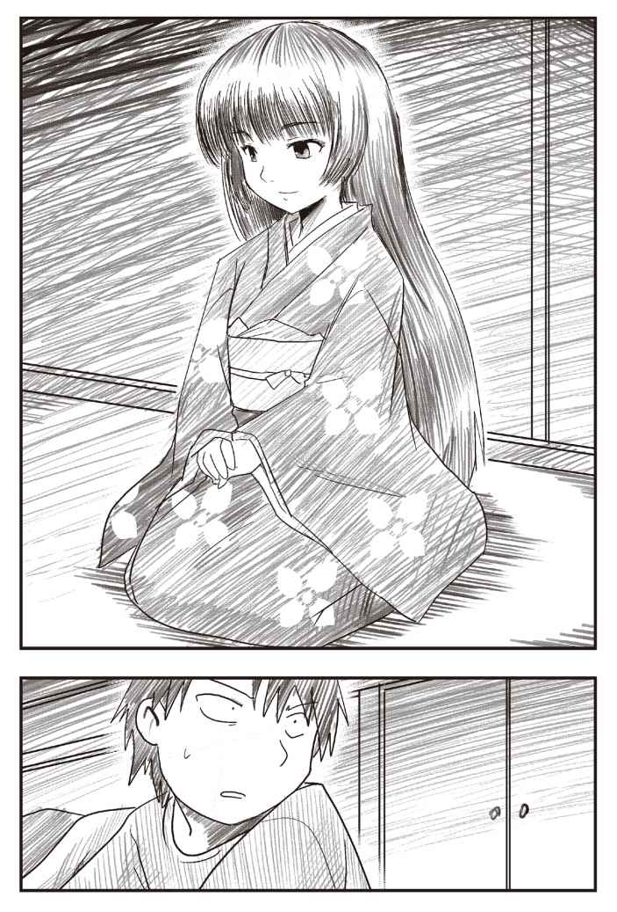
目 次
カバーイラスト あずみ虫
ブックデザイン アルビレオ
本文イラスト・写真 十凪高志
はじめに
あなたは今、幸せですか？
この問いかけに、迷わずに「はい」と答えられる人間は、そう多くないないだろう。
今の世の中、誰もが心に不安を抱いている。そして、その質問をされたとき、自分に起きているいいこと、楽しいこと、うれしいことよりも先に、いやなこと、悲しいこと、つらいことなどが頭に浮かぶということが多いのではないだろうか。そしてそれらを頭の中で天秤にのせて量り、思案して、こう言うのだ。
「......まあ、幸せと言えるのではないでしょうか」
あるいは、
「幸せなんて、ないですよ」
あなたは、どちらだろうか。それとも、心から幸せですよ、と言えただろうか。もしそうなら幸いである。
幸せな人も、幸せでない人も、是非この本を読んでいただきたい。そして幸せとは何かを、ちょっと足を止めて考えてほしい。
幸せとは、何だろうか？
じつは私の家には、座敷わらしがいる。
あの、幸せを運んでくるという、座敷わらしだ。
......といっても、別に私の家は古くから続く旧家の日本家屋......というわけではない。民話が残る東北地方でもない。
今住んでいるのは、ごく普通の賃貸アパートである。
そして、私が入居する前から座敷わらしがいたわけではない。いたのは別の何かだった。それはまた別の機会に話すとして、とにかく座敷わらしとは無縁の家であったのだ。
では、なぜ座敷わらしが我が家にいるかというと......よそからいただいてきたのだ。
と言っても、別に拉致誘拐の類 ではない。重ねて言うが、拉致誘拐の類ではない。
実は、世の中には座敷わらしを授けてくれる神社、というものがあるのだ。
そんなトンデモな神社なんてあるものか、そう思われるのも仕方ないかもしれない。
ところがどっこい、調べてみるとまっとうで古い歴史のある神社であった。しかも、座敷わらしのおかげで復興した神社だという。
そしてそれは、座敷わらしのふるさとである岩手県は遠 野 にある。
これは面白い。私はそう思った。そして問い合わせずにはいられなかった。
同時に、座敷わらしという妖怪、あるいは神......その存在そのものにも強く興味を惹 かれた。
そして、私は見事にその座敷わらしを家に迎えることになるのだが......。
それでは、私の、座敷わらしを巡る探究の旅についてお話しすることにしよう。
少しでも、あなたの幸せをつかむ手がかりになれば、幸いである。
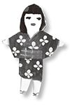
座敷わらしに会ってみたい！
座敷わらしがもらえる？
私と、神社からいただいてきた座敷わらし、「千 織 」との出会いを語ろうと思う。
すべてのきっかけは、その神社を知ったことから始まった。
心霊研究家である山口敏 太 郎 先生の出した怪談本を手に取り読んだのが、その発端であった。そこにはいくつかの座敷わらしについての伝聞、体験談が書かれていたのだが、そのうちの一編にその神社のことが載っていたのだ。
──その神社では、座敷わらしを配っているという。神社の神様の御 霊 を「分け御霊」として人形に封じて希望者に配布する。そして、それをいただいた人には幸運が舞い込む──。
ここだけ聞くと、胡 散 臭いようにも感じる。そもそも座敷わらしとは、旧家にいる妖怪ではなかったか。
当時の私が知っていた知識を結集しても、座敷わらしとは旧家に出る〝福の神〟のような存在......その程度の認識でしかなかった。
だがその神社では、神様の御霊を人形に降ろし、座敷わらしとして希望者にお配りしているという。
う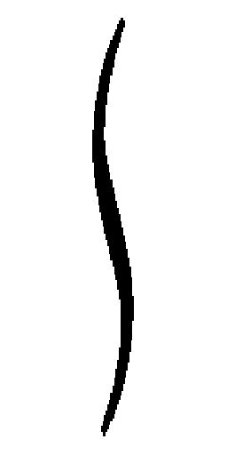 ん。
実は私は、「持っているだけで幸せが訪れるアイテム」というのが好きではない。
聞いたことないような霊能者が気だの念だのを込めた、財布だの数珠だのを購入すれば宝くじが当たってうんぬん、なんて記事は大嫌いだ。
だから「持っているだけで幸せになる人形」という話も本来ならば、くだらないと言って切って捨てただろう。
しかし、なぜか妙に気になったのだ。
それは私が妖怪や怪談話が好きだから、というのもあるかもしれない。『遠野物語』の舞台である遠野にその神社がある、というのも惹 かれる一因だった。
座敷わらしという妖怪の実在をそのときは信じていたわけではないが、文化、物語としては非常に興味を惹かれた。
だから私は、遠野を訪れることを決めたのだ。
まず最初にやったのは、その神社の場所を調べること。
岩手県遠野市にある○○○神社。
そこに私は、電話をすることにした。
......しかし、全くつながらない。どうやら宮司さんは社務所に常駐しているわけではないようだ。山の上であるようだし、そこに住んでいるわけではないのだろう。
なので、毎日しつこく電話をしてみることにした。そして繰り返すこと数日、気分はまるでストーカーである。
そして数週間が経ち......ついに電話が繋がった。
私は事情を話し、件 の座敷わらし人形をいただけるかどうかを聞いてみる。
「あのう、すみません、そちらは座敷わらしを配布するお祭りを行っている、○○○神社さん......ですよね」
「はい、そうです」
「そのお祭りに私も参加させていただいて、座敷わらしをいただきたいのですが......」
私のその言葉に、神社の宮司さんは、こう答えた。
「ただいま予約がいっぱいなので、数年後になりますね。 なにしろ、年に十体しか作っていないので」
心がバッキリとヘシ折れる音が聞こえた。
だがしかし、心の瞬間接着剤あるいは粘着テープを使い、折れた意志をなんとか繋ぎ合わせる。
「で、では一応それで予約をお願いします......」
私はなんとか、そう言葉を紡 ぎ出す。
「はい。ですがこちらではちゃんと把握できないので、祭りの時期が来たら確認の電話をそちらからお願いしますね」
宮司さんのその回答に私は頷 き、一応の予約を取り付けた。
しかし、数年先とは......長いものである。
岩手の金田一温泉郷にある有名な座敷わらしの出る旅館「緑風荘」も、往時は宿泊の予約が数年待ちだったという。
座敷わらしに会うというのは、本当に大変なのだなと痛切に感じた。
しかし、それでも座敷わらしを配布する祭り、というものに非常に興味を惹かれるのも事実だ。それに、それだけ人気があり数年待ちというのは、実に期待できそうではないか。
私は、せめて祭りだけでも見てみたい、と思い友人たちを誘い、遠野に行くことにした。
その話は、また後に語ることにしよう。
昔から多くの人たちが座敷わらしを感じ、見てきた
この本を手に取り、読まれている人なら、座敷わらし（座敷童子）という名前は聞いたことがない、知らないという人はあまりいないだろう。念のために簡単に説明するならば、主に旧家に住みつく子供の姿をした妖怪というか、幸せを運ぶ福の神のようなものである。
座敷わらしの名を有名にしたのは、なんといっても柳田国男の『遠野物語』であろう。
旧 家 にはザシキワラシという神の住みたもう家少なからず。この神は多くは十二三ばかりの童児なり。おりおり人に姿を見することあり。（中略）
この神の宿 りたもう家は富貴自在なりということなり。
座敷わらしのいる家は、お金も地位も思いのままだったというのだ。また、同書のなかには座敷わらしが出て行ったら、その家は没落した、という話も書かれている。
この『遠野物語』は、岩手県の遠野地方を中心として古くより伝わる民話を集めた佐々木喜 善 氏の話を編 纂 したものだが、佐々木氏が蒐 集 した民話の中には、ゆうに百以上もの座敷わらしの話があったという。
また、有名な童話作家・宮沢賢治も、座敷わらしについて書いている。
「大 道 めぐり、大道めぐり」
一生けん命、こう叫びながら、ちょうど十人の子供らが、両手をつないでまるくなり、ぐるぐるぐるぐる座敷のなかをまわっていました。どの子もみんな、そのうちのお振 舞 によばれて来たのです。
ぐるぐるぐるぐる、まわってあそんでおりました。
そしたらいつか、十一人になりました。
ひとりも知らない顔がなく、ひとりもおんなじ顔がなく、それでもやっぱり、どう数えても十一人だけおりました。そのふえた一人がざしきぼっこなのだぞと、大人 が出て来て言いました。
けれどもだれがふえたのか、とにかくみんな、自分だけは、どうしてもざしきぼっこでないと、一生けん命眼 を張 って、きちんとすわっておりました。
こんなのがざしきぼっこです。（「ざしき童子 のはなし」）
座敷わらし、ざしきぼっこ、ほかにもさまざまな名で呼ばれていた子供の姿をした「家に住む神」は、多くの家で長きにわたってその存在を感じられていた。記録として、物語として世に出たのが百年ほど前の『遠野物語』（明治四十三年） であるのかもしれないが、その家々、村々で静かに語られていたものを遡 れば、きっともっと古いに違いない。
調べてみると、江戸後期に書かれた、『雨月物語』には陸奥 国 （みちのく）の武士の家に銭の霊が小さな翁の姿で現れて「黄金の精霊」を名乗ったという話がある（「貧福論」） 。この翁が座敷わらしにつながるとする説もある。
さらに、「座敷わらしの宿」としてもっとも有名な岩手の老舗旅館、「緑風荘」の座敷わらし「亀 麿 」さまは、緑風荘の主人の家の祖先であり、七百年もの昔に「末代まで家を守る」と言い残し、幼くして死んだ子供の姿だという。それが正しければ、もっとも古い座敷わらしということになるだろうか。
「緑風荘」には、松下幸之助氏や本田宗一郎氏、稲盛和夫氏など、そうそうたる大企業の創業者たちも宿泊したという記録が残っている（座敷わらしに会うのが目的だったかはわからないが）。
いずれにせよ、さまざまな姿かたちで語り継がれてきた座敷わらしは、決して眉 唾 なものではないのだろう。古 の人たちはその実在を確かに感じていたのだ。
ならば、感じられていたそれらは何なのであろうか。座敷わらしとは何であろうか。
多くの説が語られており、改めて後ろの章で考えてみようと思うが......
まずは会ってみたい！
多くの人たちが感じ、そして見ているのだから。
たとえそれが、一時の夢、幻に過ぎないとしても......人々が見て、聞いて、感じて、そして語り継ぐそれらを否定することは、誰にもできないはずである。
座敷わらしはどこにいる？
では、座敷わらしに会うには、どこに行けばいいのか。
座敷わらしは、往々にして旧家にいるものである。その土地に古くから残っている家である。なので普通は会えない......と思うだろうけど、例外もあるのだ。いや、今やその例外のほうがむしろ有名で王道かもしれない。
それは座敷わらしがいるということが、公 にされているのだ。特に旅館や飲食店などで、座敷わらしがお客さんに姿を見せたり、幸せを分け与えることがあるというエピソードが伝わっているところが少なくない。
しかし、それはあくまでもお客さんの体験談で、そこに行き、泊まったからといって、絶対に座敷わらしと出会える......ということではない。その保証はできない。本書でもいろいろ紹介するが、そのことだけはあらかじめご了承いただきたい。あくまでも、宿泊客が「座敷わらしを見た、会った、体験した」という話のある宿（場所）である。
私もいろいろなところに伺ったが、宿やお店のご主人はその存在を否定しないものの、みな「見たことはない」とおっしゃっていた。
もちろん私とその仲間は、めくるめく体験もしたのだが......。
さて、「座敷わらしの出る宿」というのを調べてみると、その場所は遠野ばかりではない。なにしろ、北は青森、南は大分に至るまで、「座敷わらしの出る宿」は存在するのだ。私が知っているだけでも二十はある。本格的な高級旅館から気軽に泊まれる民宿までさまざまである。
その一部を紹介すると──
【青森県】
「とびない旅館」
【岩手県】
「緑風荘」「侍の湯おぼない」「旅館 仙養舘」「民宿わらべ」
「遠野早 池 峰 ふるさと学校」「民宿とおの」「民宿御 伽 屋 」「遠野ふるさと村」
【福島県】
「割烹旅館 松林閣」
【秋田県】
「からまつ山荘＆温泉 東兵衛屋敷」
【山形県】
「タガマヤ村」
【長野県】
「みはらしファーム」
【群馬県】
「猿ヶ京温泉 生寿苑」
【静岡県】
「ちゃ茶ｃｈａ」（カフェ）
【島根県】
「竹と茶香の宿 旅館樋口」
座敷わらしにまつわるエピソードもそれぞれで、なかには変わり種の宿もあって面白い。
（本書巻末には、これらの宿の情報を詳しく紹介させていただいたので、そちらを参照してください）
霊感などなくても、座敷わらしに会える
しかし、そういう所に宿泊しても、自分には霊感がないので座敷わらしと出会えないのでは......そう嘆く方もいるだろう。だが諦めないでほしい。
誰でも、ちょっとしたコツを摑むだけで座敷わらしと出会える。
というか、そもそも霊感など必要ないのだ。
現に私だって、いまでこそ座敷わらしとの出会いを体験し、一緒に暮らしているが、しらふのときに幽霊や神仏など一度足りとて見たことはない。
さらに、ほかの方々の座敷わらしの目撃談を調べてみると、普段に幽霊など見たことがない、霊感などないと言う人ほど、思いがけず座敷わらしを目撃しているではないか。
つまりチャンスは万人にあるのだ。
座敷わらしとの遭遇談、目撃談を集めてみると、おおまかに二つにわけられる。
ふと視界の端にいないはずの子供を見た、などの起きているときの目撃談。
そして、寝ているとき、あるいは夜に目を覚ましたときの目撃談である。そして後者のほうが圧倒的に多いのだ。
それはどういうことか。そう、座敷わらしとは夢の領域に現れる怪異なのだ。
そもそも夢とは、昔から言われるように、人ならざるものとの邂 逅 の場所である。修行を積んだ行者が神仏と出会う、あるいは修行途中の未熟者が魔に誘われるという話がある。ほかにも、亡くなった親族が夢枕に立つ、あるいは夢で見たことが起こった（予知夢）など、夢というものはそういった事例にこと欠かない。これらをただの幻覚だ、ただの記憶の整理だ、と切って捨てることは非常に簡単である。
だが、そこからさらに一歩踏み込んで、座敷わらしに会いたいという思いを持って夢を見れたら、座敷わらしと出会える確率は高くなると思う。実際私がそうであるし、多くの人たちが夢の中で（夜中に）会っているのだから。
普段夢を見ない、という人もいるだろう。だが夢はすべての人間が見ている。ただ思い出せないだけだという。ならば、夢を記憶する訓練を行えばいい。
ここでは詳しく触れないが、たとえば、明 晰 夢 、というものがある。明晰な夢、夢を夢と自覚し認識できる夢だ。訓練次第では、人は誰でもそれを見ることができるのだ。
「な～んだ、座敷わらしって、夢の話か」
と勘違いしないでいただきたい。夢の中で会いやすいのは確かだが、やはり実体があるというか、存在するのである。そうとしか、考えられないのだ。
座敷わらしに会いに行こう！
座敷わらしに惹かれ、会いたいと思った私は、せめて座敷わらしを祈願する祭りだけでも見てみたい、と思い友人たちを誘い、遠野に行くことにした。
座敷わらしに会うには、座敷わらしが出るという宿に泊まるのがよいだろう。
果たして成果はあったのか。
では、私と仲間たちの旅で見て、感じ、経験したことを語りましょう。
初めて訪ねた「座敷わらしの出る宿」
民宿とおの（遠野市）
ここを訪れたのは、座敷わらし祈願祭のことを知ったその年である。座敷わらし人形をいただける確約をもらうことはできなかったが、それでもその祭りを見てみたい、という思いで遠野を訪れることにしたのだ。
メンバーは私と創作仲間のＣ氏、ＵＧ氏、都 築 隆 広 先生、大 渡 鴉 先生の合わせて五人は、その旅の宿として「民宿とおの」を選んだのである。
道中いろいろあり、チェックイン時刻に盛大に遅れた私たちだったが、食事には間に合った。実にギリギリのタイミングであり、他の宿泊客の方々はすでに夕食に入っていた。
夕食が用意されている広間には、囲炉裏があり、そこには魚が串焼きにして焼かれていた。
「おお、すげえ......」
その光景に思わず声が漏れる。中途半端に都会育ちの私にとって、岩魚 を串に刺して囲炉裏で焼く、というのはまさに昔話、民話の世界のものだったからだ。
塩でパリパリッと焼かれた岩魚。何とも食欲をそそるものではないか。
感動していたとき、Ｃ氏が不敵に笑い出す。
「ふふふ......」
「どうしました？」
そして彼は高らかに宣言した。
「この宿にはどぶろくがある！ そう、このためだけにこの民宿を選ばせたと言っても過言ではない!! 」
Ｃ氏にそんな陰謀があったというのか。確かに、いくつかの候補の中でやけにこの宿を推していたと思ったが。
まあ、だからといって別に不快ではない。好きなものに一生懸命になれるというのは素晴らしいことである。
「酒にあまり強くないんだから飲みすぎないようにー」
下手の横好きというか、下戸の酒好きの彼に忠告をする私たち。対して彼は、自信満々に言う。
「はっはっは大丈夫ですよ、自分のペースぐらいちゃんとわかっています！」
そう豪語した。その姿に、それなら大丈夫だろう、と思ったが......。
「おかっぱの女の子」
だがしかし、大丈夫ではなかった。
食事が終わるとすぐに酔いつぶれて寝るＣ氏であった。
「いわんこっちゃない......」
どぶろくは確かに美味しかった。酒があまり好きでない私にもそう感じられるぐらい、「とおの」のどぶろくは美味であった。
しかしいくら美味とはいえ、こうも酔いつぶれるとは。とりあえずは彼を引きずって部屋にぶちこまねばならないだろう。
「とりあえず運びますか」
「賛成」
ふらふらとする彼を両肩から担ぎ上げ、部屋に運ぶ私たちだったが、部屋に移動中、私たちは見たのだ。
部屋までの廊下、そこにいる、おかっぱの少女の姿を。
「ぬおおおおおおおおおおおおお!? おかっぱ！ おかっぱの女の子!! 」
「小学生ぐらいの女の子!! 」
「ここで!! 座敷わらしが出ると評判の民宿で!!
つまりその回答はただひとつ──」
「座敷わらし、キタアァァァァァァァァ!! 」
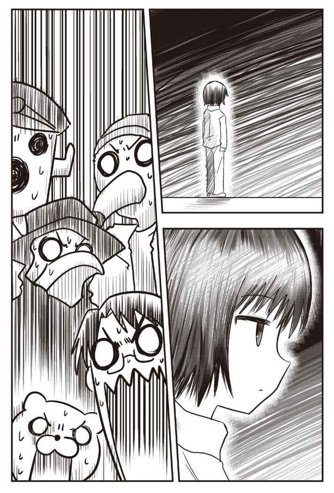
テンションが上がる私たちだった。もちろん、宿泊客の迷惑にならないよう、そしてその子を驚かさないように超・小声で盛り上がったのだったが。
だがよく見ると、どう考えても肉体があるリアリティである。そして、夜とはいえまだ寝る時間ではない。これはどういうことか。
その答えは一つ......宿泊客。
「ですよねー」
現実はそんなものである。
そんなわけで風呂に入り明日に備えていざ就寝。
だが、このときはその夜にあのようなことが起きるとは想像だにしていなかったわけで......。
そう、私たちは、夜に......。
民宿とおのの夜（都築先生と私の場合）
その夜は妙に寝苦しい夜だった──
布団が厚く重いとか、そんなのも寝苦しさに一役買っていたのかもしれない。寒い遠野でも、暖房はしっかりと効いていたのだから。
ふと、都築さんは妙にごそごそする音と、何かが立っている気配で目が覚めた。
もしかして座敷わらしか──
都築さんはそう思い、慌てて飛び起きてすべてを台無しにしないよう、はやる気持ちを抑えて、ゆっくりと目を開けた。
そこに飛び込んできた光景は──
「う～寒いなあ、トイレトイレ」
......。
「お前かーーーーー！！！！」
「うぇぇい!? 」
夜にトイレに行こうと目を覚ました、私こと十凪高志であったという。
その節は本当にすみませんでした。
民宿とおのの夜（大渡先生、話し声を聞く）
大渡先生は後に述懐する。
「私の場合は......姿が見えたとかそんなのではなくてですね。
布団の中で声を聞いていただけなんですが......。
『ねえ明日は何があるの？』
『座敷わらし祭りがあるのよ』
『じゃあチャンスだね！』
『そうね、ついていけたらいいわね』
っていう母娘か姉妹の会話？ みたいなのが聞こえましてね......」
どうやら大渡先生は、座敷わらしたちの話を聞いたようである。
このときはまだ私は座敷わらしに会っていなかったので、彼が我々の中で一番乗りの座敷わらし体験者となった。
ちなみに、Ｃ氏＆ＵＧ氏の場合は、朝までぐっすり、大いびきで爆睡していたという。
というわけで、約一名を除き座敷わらしとは会えなかったわけである。だが、だからといって気落ちするわけではない。
本命は座敷わらし祈願祭なのだ。
そんなわけで民宿とおのをチェックアウトして、神社まで車で移動することに。
車の中で、民宿での思い出話に私たちは花を咲かせる。メシが旨かった、酒がどうの、寝ているときに出たか、などいろいろであった。そんなとき、ふと誰かが言う。
「ところで......昨日の女の子だけど」
「ああ座敷わらしにそっくりな子？ なんというか本当にいたのかとまじでびっくりしましたよね」
「確かに。雰囲気がこう、そのまんまって感じで。あれで和服だったら完璧でしたわ」
そう談笑していたが、次の一言で私たちは凍りついた。
「あれから民宿で一度も見かけてないんだけど......。
朝飯のときとか、どこにもいなかったよね？」
「......」
思い返してみれば、確かにそうである。あの後、一度も見ることはなかった。
ではあれはいったい......。
いや、たまたま私たちが彼女を見つけられなかっただけだろう。現実的に考えてそうである。
でも、もしかしたら......？
その可能性は、決して否定できない。
お客さんが言うんですよ「ここに座敷わらし、いますよね」って
遠野早池峰ふるさと学校（遠野市）
民宿から目的の神社へと向かった我々は、神社脇にある駐車場に車を止める。そのとき、ふと座敷わらしが見えた。
「おおっ、座敷わらしがいますよ！」
「どこどこ!? 」
都築さんが指し示したそれは、座敷わらしが描かれているのぼりだった。
そしてそののぼりが立つ敷地は......
「小学校ですね......」
そう、小さな校舎が建っていた。そしてのぼりをよく見てみると、「遠野早池峰ふるさと学校」とある。
ついついその小学校の懐かしい雰囲気に引き寄せられる私たち。
普通なら不審者として通報されてもおかしくないのだが、この学校は子供たちが通っている気配はない。
「いかにも田舎の分校......って感じですね」
「小学校じゃなくて記念館になってるようですよ」
そこは廃校になった小学校を、町おこしのための記念館として再利用しているらしい。なので当然、私たちも校舎内に入ることができた。
そこはなんとも懐かしい郷愁を呼び起こす所だった。管理人の人たちもいて、産直の野菜や工芸品なども売っていた。
私たちは、挨拶をして、中に入る。
「うわあ......」
板張りの狭い廊下は、まさに古い小学校だ。歩くたびにぎしぎしと、あるいはきゅっきゅっ、と音をたてる。教室にはそれぞれの題材ごとにさまざまなものが展示されていた。
そしてその中に......
座敷わらし部屋
「ここも座敷わらし一色だ......」
あったのである、座敷わらし部屋が。
壁には座敷わらしに関係したポスターや新聞記事の切り抜きの拡大コピーなどが貼られ、部屋の一角には畳が敷かれ、そこにお菓子や人形、おもちゃや絵が飾られていた。黒板にはここに来た人たちが描いたであろう大量の座敷わらしの絵、そして座敷わらしに感謝するメッセージなどが書かれていた。
「すげー......」
「なんというか、遠野ってかんじですねー」
その光景に圧倒されながら、私たちはそれらを見ていく、読んでいく。
その中で、私はとある記事に目を留める。
「んーーー......？」
「どうしました？」
都築さんがそんな私の様子に気づき、声をかけてくる。
「いや俺ね、今日のために遠野博物館で売ってる『ザシキワラシ』っていう本を通販で購入したわけですよ。それでですね、ここの神社の座敷わらしの由来ですが、本に書いてるのと、なんか食い違ってるんですわ」
「ほうほう......？」
都築さんは私の言葉に興味を持ったのか、その本の記事を読む。
かつて早 池 峯 神社は、参拝者も少なく朽ちかけていたという。
そんなとき、新潟の事業家が商売繁盛を祈願しにやってきた。
しかし帰りの道中、車が妙に重い。
そして帰宅した後、家の中で妙な気配や音がする。家に変なものでも憑 いたのではないかと祈祷師に見てもらうと、そのお付の巫 女 に何かが憑 依 した。
われらは座敷わらしである、遠野の神社が荒れ果てて住めなくなったのでこの家にしばらく住まわせてもらうことにした──と、そう巫女は語る。
そしてそれから事業家は大成功することとなった。それもすべては神社から来た、座敷わらしのおかげ、そして山の大神様のおかげ──
その実業家は神社に寄付をしてそれがきっかけとなり神社は再建された──
「......と、そういう伝説があるわけですね」
「なるほど」
「でもここの壁に貼ってある記事を読むと、途中までは同じだけど......」
私と都築さんは、壁にあった記事を読んでいく。
車が妙に重いので車のボンネットを開けると、なんとボンネットの中から和服の子供二人が飛び出してきた!!
そしてその子たちは家の中に飛び込んでいく。彼らは座敷わらしであった......
そういう風に書かれているのだ。
「......」
「......」
「警察いけよ」
私は素直に口にした。
「いや十凪さん、確かにそうだけど、その感想はどうかなー!? 」
「でもですね、普通は家出した子供が紛れ込んだと思って、警察に通報すると思うんですが。それを座敷わらしだと断定して家で育てるとか、おかしいと思いませんか!? 」
「昔話にここまでケチつけるのもおかしいと思います」
もっともである。だが、昔話というには、三十年足らずの昔である。これはおかしい。
いや、冷静に思考を巡らせれば、話が人の口づてに伝 播 することによって少しずつ変わっていく、伝言ゲーム的、都市伝説的なものであるというのは明白なのだが。
管理人さんの話
そして私たちは、かつて職員室だった管理人室にて、管理人の佐々木豊さんにお話を聞くこととなった。
「作家さんですか、すごいですね。
ほうほう、それで座敷わらしについて調べている、と。
それで早池峯神社の座敷わらし祈願祭に来られたついでに、と......」
「はい。最初はここのことも知らなかったんですけど。何か良いところですね、ここ」
「そうでしょう。平成十九年に廃校になりましたが、それでもここを残したいという人の言葉で、こうして再スタートすることになったんです。取り壊し案も出ていたんですがね」
しかし保存の方向で話はまとまり、平成二十二年に遠野早池峰ふるさと学校として開校されたという。
「早池峯神社も潰れかけてたけど再興したとか。そんな話がここには多いんですかね？」
「ああ、早池峯神社ね。あそこも本当に、潰れるところだったよ。なにせ、街から遠いしねえ。
でもね、やっぱり忘れられようとするところがあれば、それを守りたいって思う人たちもいますからね。早池峯神社の宮司になって守りたい、って言う人がいて。だから今ではちゃんと宮司さんがいるしね。あそこに常に住んでるわけじゃないけど、そうやって今も守られてる。
あなたたちのように、来てくれる人たちもいるからね。そうやって守られていくものなんでしょう。
座敷わらしとしても、潰れてしまうと困るでしょうからね」
「佐々木さんは、座敷わらしを見たことがあるんですか？」
都築さんが質問をする。その問いに、佐々木さんは少し複雑な顔をした。
「うーん、〝見た〟ことはないですね。そもそも、私は最初はそういったものを全く信じていなかったのですよ。幽霊も神様も妖怪も、そんなものはいるはずはない、と。
ですが、ここを管理するようになって、時々ね。誰もいないはずなのに声が聞こえたりして。最初は気のせい、幻聴だと思っていました。
そういうものはいるはずがない、と思っていたから人にも話しませんでしたよ。
でも、ここに来たお客さんが言うんですよ。ここに座敷わらし、いますよね、って。
見たという人や、帰ってから不思議なことがあった、良いことがあった、などそういう話がお客さんたちから寄せられてですね。ああ、そういうこともあるのだなあ、とだんだん思うようになってきたんですよ。
世の中には、科学では割り切れないことってありますからね。そういうこともある。ならそれでいいじゃないか、って」
確かにそうである。私もそう思うし、そうであってほしい。
ここは、そういうことを不思議と受け入れられる、そんな土壌がある気がする。佐々木さんも、そうやってここで過ごすことでそれを受け入れたのだろう。
祈願祭の時間が近づいてきたので、我々はふるさと学校を後にする。思ったよりも時間を食ってしまった。なぜだろう、ついつい長居したくなってくる場所だった。
座敷わらし祈願祭
座敷わらしの人形を配る神社が遠野には存在する。瀬 織 津 姫 命 を主祭神として掲げる、早池峯神社である。我々は今回、座敷わらしをいただけるわけではなかったが、ぜひ祈願祭を見てみようとここまで足を延ばしたのである。
早池峯神社は、遠野の市街から車で三十分ほど山に入った附 馬 牛 町大出集落に鎮座する神社である。大同元年（８０６） に早池峰山頂に一宮を建立したのが始まりとされ、その後に慈覚大師円仁が建立し、寺を「妙泉寺」とした。そう、元々は寺であったのである。だが、古き時代は今のように「神」と「仏」の区別すらないものであった。日本人の信仰観ゆえか、神は仏であり仏は神であったのだ。早池峯神社に祀 られている主祭神の瀬織津姫も、古くからの神である。一説によれば、その女神こそ天 照 大 神 そのひとであるとする考えもあるらしい。
その後、明治維新の神仏分離令によって、早池峯神社と名を変えたのだが、そのような古い来歴を持つ早池峯神社も、時代の荒波には勝てなかった。そう、過疎化である。山奥の遠野、大出集落は年々人が減り、そしてそれは神社への参拝客が減っていくことにも繋がる。
もはや早池峯神社には宮司も巫女も住まず、無人の神社となり、ただ荒れ果てて行くのみとなっていったという。
だが、昭和五十八年（１９８３） にとある事件が起きた。前述したエピソードだ。
『遠野今昔』（遠野老人クラブ連合会発行） という冊子の記事を紹介しよう。
座敷わらしと神社復興
このように大昔から幾多の座敷わらしが遠野の家々に住み着いて人々の暮らしを守ってきたのだが、最近においてはつい数年前のこと。新潟のとある事業家が、ふとしたことから早池峯の神霊を感じ、はるばる新潟より車で早池峯神社に参拝した折のこと、当時は修復前の社殿と荒廃が著しいときであった。
参拝を終え帰路についたが、妙に車の後部が重く、誰か車に乗っている感じがしたという。家に帰って祈 禱 をお願いしたところ、
「わしは早池峯の座敷わらしだが、いま社 が寂 れている。当分の間、この家に住まわせて貰うためにやってきた」
と言う。後日聞くところによると、この座敷わらしは姉弟のようであるという。また、男の子は現代っ子であり、大変に車好きのようで、誰も人のいないのに車のヒーターが作動したり、ワイパーが動いたりするとのことである。
この事業家はそれからというもの、事業が着実に伸び、同市内でも有数の会社として繁昌しているとのことである。
このことが縁となり神社にも寄進をされ、この度の大修復完成に繋がる基となった。
なんと早池峯神社から、参拝にきた事業家に座敷わらしがついていったというのである。座敷わらしがいなくなっては、神社は衰退してしまうのではないか？
だが、ここにもあるように、それが早池峯神社の再興のもととなったのだ。単純に「座敷わらしが去った」というのではなく、むしろこの神社の神たる瀬織津姫が、神社再興のために座敷わらしを神使として使わした、と考えるのが正しいのかもしれない。現に、その座敷わらしたちは今もその事業家の所にいて、彼らは自分たちに名前をつけてほしいと頼み、「早池峯の梅の香姫」「早池峯の松王丸」「早池峯の竹津彦」と名付けられたという。
それぞれ十六歳、十歳、五歳の年の頃の姿であるといわれている。もはや完全にその事業家の家族のようなものではないか。
その座敷わらしたちが言うには、自分たちの仲間は現在三百数十ほどいて、大神の使いとして市内の里家に、また福島や山形、秋田、青森に行って活躍中であるとのことらしい。
そのような経緯で復興した早池峯神社は、この一連の出来事をきっかけにして昭和六十三年（１９８８） より、早池峯神社の主神・瀬織津姫の分霊を降ろした座敷わらし人形を希望者にお分けするという、「座敷わらし祈願祭」を毎年四月二十九日に行うようになったのだ。
それぞれの家に迎えられた座敷わらしたちは年に一度、親元である早池峯神社に「里帰り」し、儀式を経てリフレッシュして、またそれぞれの家へと迎えられる。まるで年に一度、親戚たちが一堂に集まって楽しく遊ぶ光景のようではないか。
そして、新しく作られ、魂を入れられ生まれた「妹」たちが、彼女たちを希望する人たちのもとにもらわれていく。そしてまた翌年、彼女たちは里帰りして、姉となり、新しく生まれた妹たちを祝福するのだ。
埼玉県秩父の三 峯 神社には、「御 眷 属 拝 借 」という、そこの祭神の神使である狼の霊を札に込め、一年間貸し出すという祈禱があるという。そういったものも考えると、座敷わらし祈願祭もそこまで突拍子もないものでもないのかもしれない。
今年で二十九回目を迎える座敷わらし祈願祭は、比較的新しい祭りといえる。だが、それは新しく考えついたという上辺だけのものではなく、古くからこの地に根付いた信仰、物語が少しずつ時代に合わせて変わっていき、そこから生まれたものなのだろう。変わることを嘆く声もあるが、変わりゆくことで守られるものもある。新しく生まれる文化、伝説は、古くからのものを受け継ぎ、そして未来へと託していくものなのだろう。
座敷わらしをもらってきた！
チャンスは巡ってきたが......
さて、その翌年。
ダメ元というか、一応の予約の確認で早池峯神社に電話をしてみた。
数年待ち、と大ざっぱに言われたが、一年経過したし正確な待ち時間がわかるかな、と思ったのだ。
だが......宮司さんは言った。
「キャンセルが出たので、お渡しできると思いますよ」
数年待ちではなかった！ いやまさか、予約を申し込んだ翌年にチャンスが巡ってくるとは思わなかった。なんという幸運だろうか。
私は何度も聞き返し、確認をして、そしてお願いしますと頼み込んだ。
さて、電話を切り、私は改めて自分の部屋を見渡す。
狭い、そして汚い。狭さはどうにもならないが、汚さはどうにかしないといけないだろう。何せ神様をお迎えするのだ。
「......やるか」
そして早速、私は部屋の掃除に取りかかった。
するとくしゃみと鼻水が止まらなくなった。
それだけではなく、コンビニに行ったときにふと鏡を見たら、眼球に水 膨 れのようなものができていたのだ。これはさすがに驚いた。
あわてて眼科に行くと、どうやら花粉症の症状らしい。私は花粉症になった記憶はないのだが、これはハウスダストによるものだという。とても心当たりがあった。というか、いきなり花粉症を発症してしまうほど、私の部屋は汚れていたというのか。それが片づけで舞い上がり、このようなことになったとは。
なんということだ、福を運んでくる座敷わらしのはずだろう！
......などとは別に思いはしない。いや正直、この野郎、と心の隅で思ったかもしれないが、あのまま延々と放置していたら、さらに取り返しのつかないことになっていたことは明白である。まさに「禍 福 は糾 える縄 のごとし」だ。
幸いにも、見た目のインパクトに比べ、眼球の水膨れは点眼薬ですぐに治るようなものだった。
さて、そうやって部屋を片づけ、座敷わらしを迎える準備を着々と進めていたところ、とある重大なことに気づく。
そう、予算の問題である。
当時の私はそれはもう貧乏な生活を送っていた。貧乏自慢は読んで愉快なものでもないので簡単な説明にとどめておくが、腹が減っても食べるものがほとんどなく、小麦粉を水で練り、天つゆで煮た「すいとん（野菜抜き）」や、小麦粉を水で溶いて焼いただけの「小麦粉焼き」で飢えをしのぐことも一度や二度ではなかった。売れない漫画家というものは、えてしてそういうものであり、時代が変わろうとも生活様相は変わらないのだろう。
このときは、さすがにそこまで困窮していたわけではなかったが、宿泊費は何とかなっても交通費まで用意できそうになかった。なにしろ東京から深夜バスで片道一万円はかかるのだ。格安の深夜バスを選べばその半額で行けるが、さすがに狭い四列座席のサービスも充実していないバスで一晩を揺られて過ごすのはつらいものがある。
そんなとき、頼れるのは仲間である。この前年も、取材旅行好きの作家仲間を騙し......もとい、そそのかして遠野旅行を行ったのだ（前述） 。
今回も彼らを当てにすることにした。
そんなわけで集まったのは、今回は共にゲームなどを作っているＣ氏とＵＧ氏、そして作家の都築隆広先生と私の四人である。
メンバーが決まり自動車で行くことになった。ガソリン代と交通費を、運転をしない三人で折半。これでだいぶ一人当たりの旅費が浮くことになった。これなら、なんとか捻出できそうである。ちょうど確定申告の還付金が戻ってきた後なので、それを使えるのもありがたい。貧乏漫画家というのは、還付金がかなりの割合で戻ってくるのだ。収入が少ないからで、喜べるようなことでもないかもしれないが、これもやはり考えようということだ。
夢に出てきた座敷わらし
そんなこんなで日々の片づけを少しずつ行い、期日が近づいてきたとき......
私は妙な夢を見た。
座敷わらしの夢、である。
夢の中で、気がつけば私は山の中にいた。
なんとなく懐かしいような、それでいて初めての場所、深い森の中だった。
そして朽ち果てた大きな神社がある。去年訪れた早池峯神社に少し似ている気がしたが、それよりも朽ちていた。
「......」
私はなんとなしに、ぼーっとそこらを見回して歩いていく。
すると、森の中からがさがさと音がした。そちらを見ると、
「うわわわわわわわわわわわ」
と、変な声を上げながら猿が木々の枝をわたってやってくる。いや、正しくはその猿が足で摑んでいる黒い何かが奇声を上げている。
よく見ると、黒い着物を着た、髪の長い少女だった。猿の速度に耐えきれず絶叫マシーンに振り回されているかのような顔をしていた。
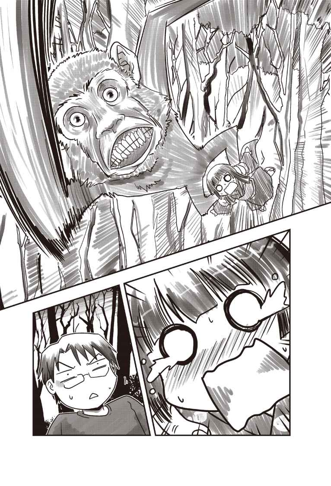
「......げ」
私がそう声を上げた瞬間、私と彼女は盛大に正面衝突した。
これが夢でなかったら確実に死んでいたかもしれない。少なくとも激痛に転げ回り、骨ぐらい折れていただろう。夢でよかった。
気がつけば猿は消えていた。
「やるな、おぬし」
「何がだ」
その少女は汚れた着物の土 埃 を手で払い、上から目線で言った。
「では第二ラウンド、鬼ごっこいくぞー」
「いや人の話を聞け」
しかし、夢というものはえてして流されやすいものであり、私のつっこみも気がつけば自分自身で忘れ、全力で鬼ごっこに興じていた。その少女以外にも何人もいて、あまり覚えていないが皆和服を着ていた。古い時代設定だったのだろうか。
山の中、森の中を駆け回り、穴にもぐるわ川に入るわの大変な鬼ごっこ、いや、もはや障害物競走、トライアストロンであった。現実の肉体にもこれぐらい動ける運動能力があればなあ、と切に思う。
「はー、はー、はー、ふふふ、この座敷わらしを捕まえるとはなかなかやるな......！」
「座敷わらしがアウトドアしてんじゃねぇ」
心の底からの素直な気持ちだった。
だいたい......
「その外見なんだ」
その座敷わらしを名乗る少女は、長い髪に黒い和服だった。座敷わらしというものは、往々にして赤い和服におかっぱ頭が相場だろう。
「基本の王道を守らないで邪道なんてやれるか！」
そう私は叱る。特に理由のない理不尽な怒りが、なぜか私の中から噴火するマグマのようにあふれ出す。
「だいたいなあ!! 」
そう叫んで私は飛び起きた。
「......」
寝言を叫んで飛び起きるというのは漫画ではよくあることだが、自分で実際にやるとなると、こう......実に微妙である。誰も見ていないのに恥ずかしいというか、軽く死にたくなってくるものである。
それから何度か、座敷わらしの夢を見た。いずれもあの黒いやつが出てきた。時々、十センチぐらいの二頭身にデフォルメされている感じの座敷わらしが大量に走り回っていることもあった。
そんなに必死に私は座敷わらしを追い求め、そして楽しみにしていて、だから夢に見るのだろうか。
まあ、夢とはしょせんはただの記憶の整理にして願望の投影だ、特に意味はない。少なくともその時は、私はそう思っていた。
いざ、再びの遠野へ
民宿わらべ（遠野市）
そして旅行の日がやってきた。
全員で合流して車に乗り込み、いざ東北は妖怪と民話の里、聖地・遠野へと出立である。
とはいっても遠野旅行は二度目であるゆえ、そう目立ったトラブルやアクシデントは起きなかった。いや、あればあるほど話としては盛り上がるのだが。前年は謎の交通渋滞に巻き込まれ、まるで妖怪に化かされたようだった。だが今回はすんなりと行くことができたのだ。と言っても、やはり七時間の道程はさすがに疲れるものがあった。
遠野に到着すると、我々はそのまま早池峰山へと向かう。今回の宿泊地は、早池峯神社のすぐ近所にある民宿「わらべ」である。ここも座敷わらしが出るという宿である。
なにしろここは、早池峯神社のお膝元。あの神社の座敷わらし人形もこの民宿にちゃんと鎮座ましましており、早池峯神社にいる座敷わらしはよくここに遊びに来たりもするらしい。
到着した頃は夕暮れ時であり、すぐに日が暮れて暗くなるだろうから、周囲の散策は翌日以降にすることにして、私たちは民宿にチェックインする。
この民宿は夕食がついていないので私たちは町のコンビニで食料を買い込んで持ち込み、囲炉裏のある部屋で食べることにした。その部屋の上に「座敷わらし部屋」があるというので、見せてもらうことにした。
そこは人形やおもちゃが飾られていた部屋だった。足を踏み入れてみると、なるほど何かよくわからないけれど、なんとなくいい雰囲気を感じる。
「ほう～、なんかいいっすね～」
「ああ、今回無理だったけど、この部屋に泊まってみたい」
そうみんな言う。怖がりな約一名だけは「俺は絶対にその部屋に入らない」とゴネていた。
そしていざ就寝。その日は、暑苦しい夜だった。
東北の五月は、まだまだ寒い。標高の高い山の中にある民宿であれば、なおさらである。
だから暖房を入れ、布団をしっかりとかぶって寝るのは当然のことだ。しかし場合によっては、隙間風や外気の強さは暖房を平気であざ笑う。
その日は幸いにも、部屋は暖かかった。いや、暖かすぎた。
額 や首筋にじっとりと汗がにじむ。
ふと、私は目を覚ました。いや、目を覚ましたというよりは、夢うつつの状態で目を開けた、というほうが正しいだろうか。
重い。布団が異様に重く感じられる。
朦 朧 としたまま、両手で布団をどかそうと持ち上げる。
だが、布団は持ち上がらなかった。
逆に私の体が沈んだのだ。
私は、この感覚に心当たりがあった。自分で夢だとわかっていて見ている明 晰 夢 、あるいは体外離脱。そう呼ばれる現象だ。
その瞬間、私の意識は鮮明になる。
あわてて体勢を立て直し、布団から飛び起きる。
しかしそこは、民宿の部屋でありながら微妙に違う景色だった。隣に寝ていた友人たちの姿がない、私の寝ていた布団だけである。
そして、一番の違いは......
そこに、少女がいた。
黒く長い髪の、前髪を切り揃えた、黒い和服の少女。
毎度私の夢に出てくる、あの座敷わらしである。
黒い和服の少女
「参 った」
私は開口一番そう言った。
「さすがに座敷わらしの出る宿で出てこられては認めぬわけにはいかない......お前の勝ちだ！」
私の両手を挙げた敗北宣言に、目の前の少女、座敷わらしは拳 を握りガッツポーズをとる。
「勝った！」
そして私たちはわかり合う。勝負を経て通じあえる爽やかな友情がそこにはあった。
「......で、ここに出るってことはこの『わらべ』の座敷わらしなのか？」
もしそうなら、わざわざ千葉や長野の私のアパートにまで遊びに来ていたということになる。緑風荘の座敷わらし「亀麿さま」は時折いろんな所を遊び歩くという話は有名だが、この座敷わらしもその類なのだろうか。
しかし、座敷わらしは首を横に振る。
「母上の......」
そう言って指をさす方向は、早池峯神社のある方角だった。
「母上の......ところから、遊びに来ているんだ。兄様、姉様のいるここは、すぐご近所だからな」
なるほど。そういえば、ここにも座敷わらし人形が飾られていた。だが、兄......？ 人形は女の子の形だったはずだが。
「祈願祭で旅立つ座敷わらしは女の子だけどさー、そりゃそれ以外は男もいるぞ。祈願祭の発端となったあの座敷わらしには、男の子の座敷わらしもいたはずだぞ」
ああ、確かに。ということは、この民宿わらべには、祈願祭の座敷わらし人形に依 らない座敷わらしもいる、ということなのか。そして、他にも多くの座敷わらしが早池峯神社から遊びに来る、と。ううむ、なるほど、さすがはご近所というかお膝元というか。
まあ、それでも千葉や長野まで遊びに来て私の夢に出てきた、ということには変わりないのだろうが。座敷わらしというのは、外出好きのようである。
しかし、本当に現実と変わらぬ明晰さ、リアリティで会話ができている。これはすごい。いつもはただの夢だった。リアルな夢の場合もあったが、このような明晰夢......いや、幽体離脱は初めてだったのだ。
説明しておくと、幽体離脱とは、世間で言われているような「自分の魂が肉体を離れて飛び回る」というものではなく、あくまでも明晰夢の一種である。
明晰夢が「夢の途中でこれは夢だと気づくための技法」であるならば、幽体離脱とは「意識があるまま夢の世界に入る技法」と言えるだろう（※詳しくは「幽体離脱は明晰夢の一つ 」参照） 。数年前に知り、試してみたが何度やってもできなかった......。
「......これもお前のおかげなのかな」
「ふふん、ほめろほめろ」
さっそく図に乗る座敷わらしだった。だが、初離脱の感激の前にはそんなことなどどうでもいい、むしろその仕草がかわいらしくさえ思える。
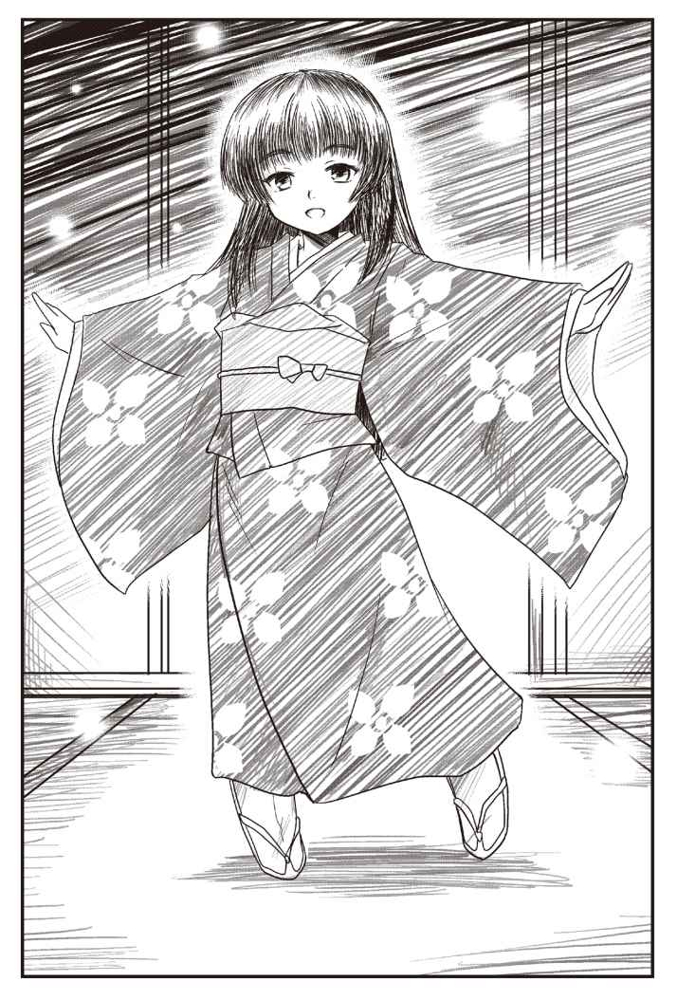
「よしよし」
そう言って頭をなでる。
「えへへ」
そう言って笑いながら、なでられる座敷わらし。
幽体離脱した世界では、五感は現実と遜色ないという話は聞いていたが、実際に体験してみるとわかる。本当に、現実と変わらない、触れる感触がリアルに感じられた。髪の毛のさらりとした感触だ。
なでている手を、ふとそのまま下に降ろして、彼女の顔に触る。
頬もぷにぷにとして柔らかかった。そして暖かかった。本物の人間のように。
そして......
目が覚める。
幽体離脱から戻るとき、肉体に引っ張られるという話は聞いていたが、私にはそれは適応されないようだった。ただ普通に夢から覚めるように、気がつけば現実だった。
布団から起きあがる。遠野の朝の寒い空気が肌を刺す。
「すっ......げぇ ！」
私はただただ、そう言うしかなかった。
思わず飛び出して走り回りたくなるぐらいに、それは感動的であった。
一方、他の皆は、特に何かこう、夢を見て座敷わらしに会った、ということはなかったようだ。あれは私だけだったのか。
ただの夢だったのか、それとも......。
そして朝食を食べて出発。前回同様、早池峯神社の隣にある、遠野ふるさと学校へと行く。ここもまた座敷わらしが出るという場所である。宿ではないのだが、目撃証言はあるらしい。
そこは古き良き小学校の姿がしっかり保存されている。木張りの廊下がキシキシと音を立てる。ああ、なんという望郷感。
「こりゃあ......座敷わらしだって出ますなあ」
全くである。ここには座敷わらしに関する部屋もあり、新聞や雑誌の切り抜きが壁一面に張られ、お供 えものやおもちゃも置かれている。すごくにぎやかな子供部屋もあった。
そして、黒板には、ここを訪れた人たちが黒板いっぱいに書き記した座敷わらしへのメッセージなどが描かれていた。
そこにはかわいらしいイラストや、多くの「ありがとう」の言葉。本当にここに来た人が座敷わらしのおかげで幸福を得たかどうかなんてわからない。しかし、ここにメッセージを書いた人たちは、確かに何らかの幸せを「感じた」のだろう。だから、こうやって書き残したのだ。
「すごいですねー」
都築先生もやってくる。
去年もここを訪れたのだが、やはりここは良いところだ。
「去年と変わってるところ、ありますね、十凪さん」
「ですね。あれから一年、いろんな人が来て、何か置いたり書いたりしたのでしょう」
その小さな変化が妙にうれしい。ここは、座敷わらしは、決して「忘れられ、保存されるだけの過ぎ去った遺物」ではないのだろう。今も人々の心に生き続けているという証拠が、ここにはあった。
「と、そろそろ時間ですかね」
都築先生が時計を見て言う。確かに、そろそろ早池峯神社に行ったほうがいいだろう。我々は、二人を探すことにした。ひとつひとつ教室を覗いていると、講堂のほうから音がする。
「おーい、二人ともここに......」
そこで私たちが見たものは。
「んぐぉおおおおおおおお!! 」
「ふおぁああああああああ!! 」
カコンカコンカコンカコン、カンカン、コンコン、カンコンコンカン。
大の大人が汗を飛び散らせながら、小学校の講堂で全力で卓球にふける姿がそこにはあった。
「童心に還ってる......いや違う、これはもはや童心にとり憑 かれている!? 大人げないを通り越している!! 」
「なんという全身全霊......もはやこれは座敷わらしにでも憑かれていると思うしかない！ そう、すべては妖怪のしわざ!! 」
民宿わらべとは反対側で、早池峯神社に隣接するこの学校。そりゃ座敷わらしもやってきて遊ぶだろう。こうやって取り憑く姿はまさにいたずら好きな、やんちゃな妖怪である。悪意や敵意、害意がゼロなぶん、我々にはどうすることもできない。
私と都築さんは、ただ二人の戦いを見守ることしかできなかった。
いよいよ座敷わらし祈願祭へ
さわやかな汗をかきながら精根尽き果てた二人の回復を待ち、私たちは遠野ふるさと学校を後にする。
すぐ隣の早池峯神社では、すでに多くの人たちが列を作っていた。
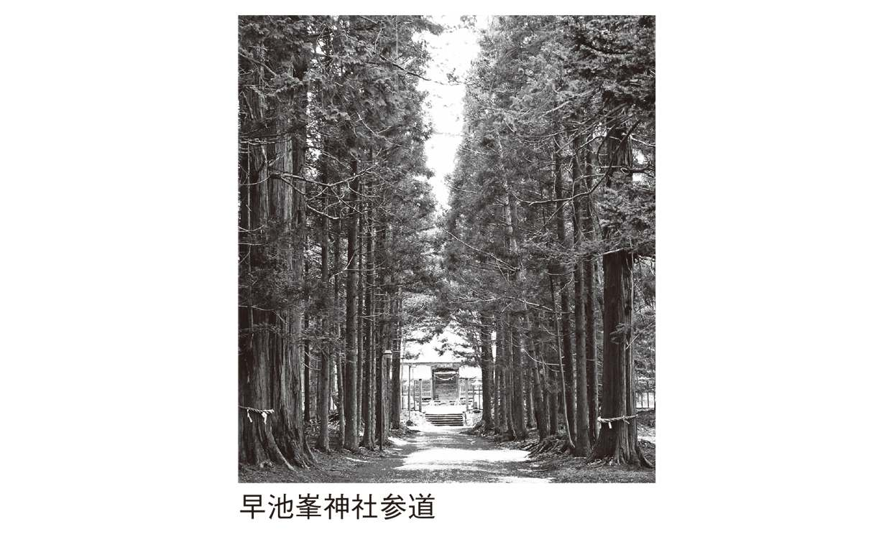
まずはちゃんと人形をいただけるか、確認をとらねばならない。何しろ、前もって電話で「おそらくお分けできると思います」と言われているだけなのだ。確証をとれていないのである。
列に並び順番を待っていると、自分の順番が来た青年が受付の人に話しているのが聞こえた。
「あのー、すみません。僕は初参加なんですが、人形買えますでしょうか？」
なんとも奇遇だが、私たちのように初参加で人形を求める人が他にもいたようだ。軽い親近感を覚える。そして、受付のおじさんはこう答える。
「予約はしておられますか？」
「いえ......していませんけど」
「ああ、では無理ですねえ。なにしろ予約でいっぱいなもので。いちおう予約していきますか？」
どこから来たのかはわからないが、受付での回答にその青年は心がベッキリとヘシ折られたのであろう。なにしろ数年待ちなのだ。数年は長い上に、ここまで来た苦労が全くの空振りに終わった。仕方ないこととはいえ、そのつらさは察するに余りある。彼はそのまま肩を落とし、これから行われる祭事を見学することなく神社を去っていった。
「......」
我々は顔を見合わせる。
やばい。超不安である。まさか目の前でこんなのを見せつけられるとは思わなかった。だが、引き返すわけには行かない。
私はおそるおそる、受付の方に声をかける。
「え、ええと、すみません......」
「はい、なんでしょうか？」
「私、十凪と申しまして。電話で宮司さんにお話を通しているんですが......、予約はしていてですね、それで先日に確認をさせていただいたら、電話では『キャンセルがあり、おそらくお渡しできると思います』と言われたのですが、どうなっているでしょうか......？」
「はい、そうですか。ええと、ちょっと待っててくださいね、聞いてくるので」
受付の方はそう答え、社殿のほうへ走っていった。
我々はそれを見送り、そして待つ。受験の発表を待つような、あるいは死刑宣告を待つようなそんな緊張感である。
まだか、まだなのか。本当にいただけるのか、それともやはりだめなのか。
こういうものは、本当にそのときになってみないとわからない。漫画の連載の企画がうまく行きそうになって、結局は編集部の都合で駄目になったことなどいくらでもある。今回もそのパターンではないのか。そう思えてくる。不安が胸中を満たし、吐 瀉 物 として口から逆流しそうな、そんな悪 寒 が体中を満たす。
不安感が限界突破寸前のとき、社殿から戻ってきた受付の方が、私に判決をもたらす。
「聞いてきました、十凪さんには、お渡しできるそうですよ」
判決無罪。私は許されたのだ！ いや、別に悪いことなど何もしていないのだが。むしろ無罪判決というよりは、宝くじが当たった！ あるいはそれこそ連載企画が通ったときのような、そんな幸福感である。このときはマンガ連載など実現したことはなかったのだが。
「おお、おめでとうございます」
「よかったですねー」
仲間たちが口々に祝福してくれる。
「みんなありがとう......!! 」
「じゃあ、我らは来年以降ですねー」
「いやほんとごめん、俺だけ......」
うれしさの後には罪悪感がわいてきた。そう、仲間たちはもらえなかったのだ。だが......
「なぁに祭りに参加はできますし、それで十分いい経験ですからね」
「それに神社の御札がいただけるということは、人形でなくても座敷わらし......というか、ここの女神さまの分霊はうちにお招きできるわけですし」
都築さんもそう言ってくれた。
「確かに神社のシステムからいうと、御札や御守りも神様の分霊が込められているわけですしね」
「そしてこの神社......また来たくなる場所ですからね。来年やさ来年を楽しみにできますよ」
その言葉は、実にありがたいものである。彼らの言葉で、私にある後ろめたさや罪悪感も消えた。持つべきものはやはり仲間、友である。
そうして私はあらためて受付で、自分の住所と名前を書き、初穂料として封筒に包んだお金一万円を渡す。仲間たちも同じく、祭事に参加する初穂料を渡していた。
私たちは階段を登り、社殿へと赴く。古く趣 のある木造の本殿の前には、テントが張られパイプ椅子が並び、きらびやかに着飾った子供たちが神楽 の音に合わせて踊っていた。
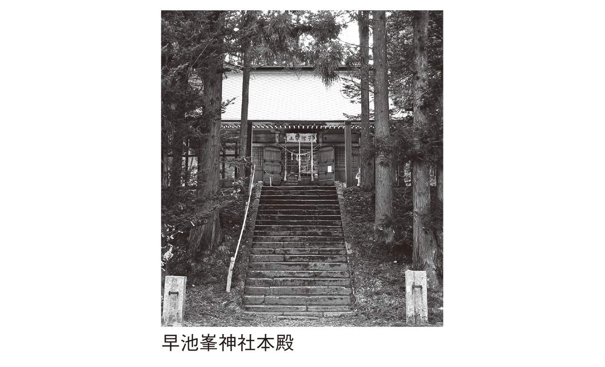
神社の周りの木々は、霊感のある人が見れば、枝に座っている座敷わらしの姿が見えるという。残念ながら私には目を凝 らしても見えなかったが。
子どもたちの神楽の舞を背に、本殿の中へと進む。そこにはすでに多くの人たちが座っていた。まさに老若男女、いろんな人たちがいた。
私たちの後から入ってくる人たちの中には紙、あるいは木の箱を持つ人がいた。彼らはその箱を宮司さんに手渡していく。宮司さんはその箱の中にある座敷わらし人形を、本殿の中の台に安置していく。
その中央には、今年作られた新しい人形が十体。それを取り巻く、百体はくだらない人形たち。過去に作られた人形は、みな形がそれぞれ違っていた。服も違い、収めている箱もまたさまざまであり、にぎやかだった。
そこで座って待つこと十数分。やがて祭事が始まる。
夢で出会った少女がいる
社殿の外から聞こえる、神楽の音と風に揺れる木々の音が耳に心地よい。
蠟 燭 の幽 玄 な灯 りに照らされた百数十もの日本人形たち。その中心にある、十体の新しい人形たちは、今年生まれた......いや、今この瞬間に生まれる、十体の座敷わらしたちである。
その中の一体、左から二番目の人形と目が合う。
黒い和服、長い髪。
それは、夢で何度も出会った少女と同じだった。
座敷わらしのイメージは、おかっぱ髪と赤い着物、だ。しかし私の夢に出てきたのは黒い着物と長い髪。そして今、私の目の前にあるのはまさに......。
その奇妙な一致に私は驚いた。偶然、と言ってしまえばそれまでなのだが......宿での一件でもはや確信に近いものがあったが、それでもやはりその奇妙な一致を目の当たりにすると、驚きしかでない。ああ、やはりあれは──。
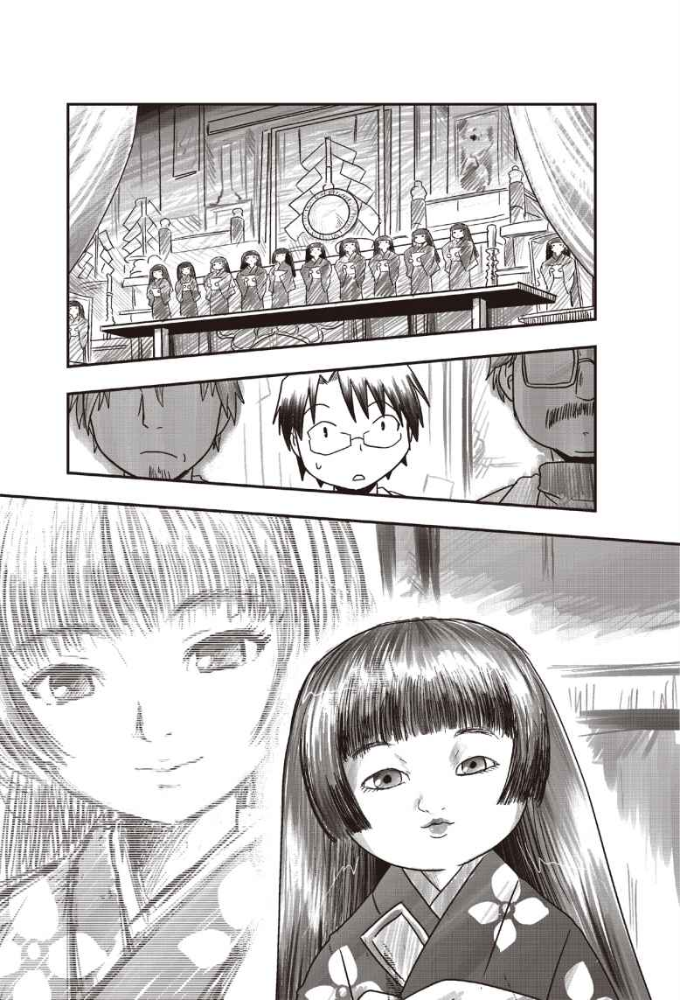
そして私の動揺を置き去りに、儀式は進んでいく。
祝詞 が唱えられ、音楽が奉納され、魂入れの儀が行われる。
儀式が終わり、やがて希望者に座敷わらし人形が手渡される。順番に、自分のほしい人形を選んでいくのだ。
私の気持ちは当然決まっていた。他の方が、その人形を選ばないようにひたすら祈る。そしてすぐに私の番が来る。
左から二番目のその人形を指名し、私は受け取る。
ふわりと軽く、しかし妙にずっしりと重い、そんな気がした。
ふと、人形が微笑んだような気がしたのは、気のせいではないだろう。
私の他にも座敷わらしを受け取った方々、彼らの顔も幸せそうであった。
そこには、不思議と、「幸福を呼ぶ座敷わらしを手に入れて、これで金儲けだ！ 出世だ！ 玉の輿 だ！」といった、我欲にまみれた人はいないように見えた。
ただ、可愛らしい座敷わらしを迎え入れた、ささやかな幸せを喜ぶ......そんな純朴な人たちが、そこにはいた。
新しく手に入れた人たちだけではない。前々からこの神社で座敷わらしと出会い、家族として迎え入れている人たち。彼らもまた、とても幸せそうだった。年に一度の座敷わらしたちの「里帰り」を共に喜び、楽しんでいるのだ。
その彼らの笑顔を見ていると、私まで幸せな気分になってくる。
私も、そのような幸せを感じられるのだろうか。これから感じていくのだろうか。
今はまだ、わからない。
命名「千織」
新しく迎えた人々の人形は、ボール紙の箱に入っていた。しかし里帰りをさせていた人たちの人形は、さまざまな箱に収まっていた。桐箱もあった。観音開きの扉がついている箱もあった。重厚そうな、漆塗りのもあった。皆大切にしているのだとひと目で見て取れる。そしていくつかの箱には、座敷わらしの名前も書かれていた。
そうか、名付けるものなのか......確かに考えてみればそうである。家族に名前をつけない親がいるだろうか。
少し考えて、私はこの早池峯神社の主祭神である、瀬 織 津 姫 命 にちなんで、「千 織 」と名付けることにした。
祭事が終わり、人形をいただいたが、それで終わりではない。私たちは人形と御札のほかに、「直 会 券」というものをもらっていた。
直会とは、祭事の終了後に神前に捧げた神酒や神 饌 を参加者で分け合うことである。座敷わらし祈願祭の直会は、御神酒と弁当をいただけるのだ。
社務所の畳の部屋に机と椅子が並べられていた。それを見ながら弁当と紅白のお餅、お酒を受け取っていると、
「もしよければ上がって食べて行かれたらどうですか」
と、声がかかった。
「いやっ、でも......私たちは初参加ですし、関東から来ましたし。こういうのって、地元の方々のものでは......」
と、私たちが遠慮すると、奥の方からひとりの爺様が言った。
「おんなじ神様をいただいて祭るんだど、もう家族みたいなもんだ」
その笑顔とその言葉に、どうして逆らえるものか。時間がなくてすぐに帰らねばならない、というわけでもない。私たちは黙って素直に、社務所に上がらせてもらった。
そこは妙に懐かしさを感じた。これはあれだ、盆や正月に田舎に帰ったときの、親戚たちが集まる宴会の、そんな雰囲気だった。
家族みたいなもの。そう、先ほど爺様は言ってくれた。それは決して社交辞令、言葉だけのものではないのだと、この雰囲気が如実に語ってくれている。
「どこから来たんじゃね」
「ええと、私たちみんなばらばらで、長野だったり埼玉だったり千葉だったり......」
「へえ、どんな関係じゃね」
「作家仲間、創作仲間なんですよ」
「あ、僕は実家は、昔は岩手だったりするんですよ」
「私は九州ですね、みんなばらばらで」
「へえ、楽しそうじゃなあ」
そう、酒やジュースをつぎながら、世間話に花が咲く。
尺八の演奏やカラオケも始まり、懐かしくも楽しい時間を過ごすのだった。
そろそろ帰らないといけない時間になり、私たちは社務所を出る。来年もまた必ず来ると約束して。そして車を出し、帰路についた。
「そういえば本で読んだんですが」
ふと思い出して、私は言う。
「座敷わらしをいただいて車で帰っているときに、車の座席やトランクに女の子が座っていたのを目撃されるってことがあったとか......」
その言葉に、運転しているＵＧさんは言った。
「なるほど......だからさっきからポリスカーがずっとついてきてるのですか......」
......。
社内の空気が凍りついた。
おそるおそる後ろを振り向くと、サイレンを鳴らしてこそいないものの、パトカーがいるではないか。付かず離れず、我らの後ろに。
......。
私たちは、うなずき合う。
「戦略的撤退」
「異議なし」
慌てず騒がず、不審車両ではないと全力で主張しながら法定速度内で全力逃走。
これが私たちの選んだ結論だった。
もし、私に霊感と呼ばれるモノがあり、神霊が見えたならば、きっとパトカーに向かってＳＯＳを叫んでいる座敷わらしの、千織の姿が見えたことだろう。座敷わらしは、いたずら好きなのだから。
続・座敷わらしに会いに行く、遊ぶ
座敷わらし「千織」をいただいたあとも、私と仲間の「座敷わらしの出る宿」への旅は、いっそう熱を帯びて続いた。これまでと違うことは、私はいろいろなところで座敷わらしと会えるようになっていたことだ。
蔵わらしやまっくろくろすけ、謎の老人行列まで
タガマヤ村（山形）
「千織」を手にした翌年、私たちは再度、遠野を訪ね、その中継地点として、山形県に宿泊することにした。その宿泊地も、ただの中継地点ではない。ある意味では当然かもしれないが、やはり「座敷わらしの出る宿」を選んだ。
だが、今回の宿は普通の座敷わらしの出る宿ではない（いや、座敷わらしが出るという時点で普通ではないのだろうが）。
そこは、「タガマヤ村」という、古民家をまるごと貸し出す宿泊施設なのだ。そしてそこにも、座敷わらしが出るという。
古民家貸し切り座敷わらし旅館。なんとも面白い話である。そういうわけで我々はここを今回の宿とした。
ちょっと怖い人形の間
さて、古民家貸し切りということなので、当然ながら普通の旅館のような従業員はいない。食事から就寝の準備、清掃まですべて客が行わねばならぬのだ。これもまた別の意味でサービスと呼んでもいいかもしれない。なんといっても情緒あふれる古民家の生活を完全に体験できるのだから。無論、我々の仲間にもそのことについて文句を垂れるような軟弱なシティボーイは存在しない。
山形までやってきた我々は地図に沿ってタガマヤ村へと到着した。
この宿泊施設オーナーであり、タガマヤ村の村長である半助さんが出迎えてくれた。そのまま説明を聞き、書類にサインをしてチェックインをすませる。
創作仲間であるＯ氏とそこで合流し、全員でとりあえずの一息をつく。車で数時間、さすがに疲れた。だが、疲れてばかりでもいられない。これから我々には、全力で遊び倒すという使命が待っているのである。
我々は、まず屋内を散策する。
入り口から上がるとすぐに囲炉裏があり、その奥は広い台所、隣には茶の間があった。そしてそのまま茶の間をさらに奥に進むと......
そこにあるのは、「人形の間」だ。そう、座敷わらしの部屋である。
この奥座敷には宿泊客から奉納された人形やおもちゃが飾られていて、そして半助さんが自筆したという、「座敷わらしの絵」も壁にかけられている。それを見た私たちは......
「怖っ！」
あえて素直に言うならば、その一言であった。
日本人形、市松人形のようなデザインの少女の絵。なるほど、それは確かに見ようによっては怖いだろう。だがこの絵は、シュールというかホラーというか、まあぶっちゃけ怖い絵だったのだ。
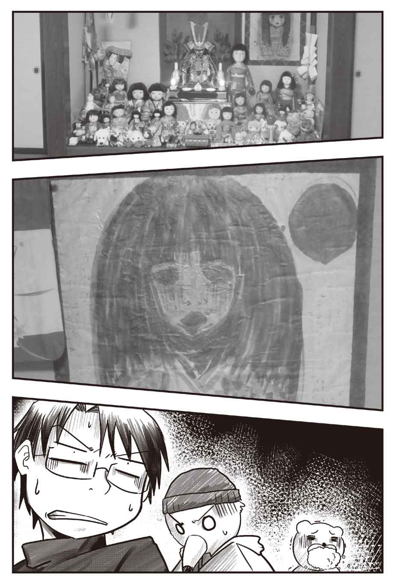
「よし、俺はこの部屋に泊まりません」
何の迷いもなくＣ氏は断言した。そんなに怖いか。まあ怖いよね。
しかし、だからこそ効果はありそうではないか。
我々はさらなる探索へと赴いた。母屋以外にあるのは、蔵や卓球場、ツリーハウスなどである。私は、まず蔵へと行った。
母屋から渡り廊下を伝い、蔵の前へ。白塗りの壁に重厚な扉があり、そこを開けると囲炉裏のある、人の住めそうな蔵の内部が広がる。囲炉裏の周囲には座布団も敷いてあった。
ここには「蔵わらし」もいるらしい。また、毛むくじゃらの「まっくろくろすけ」を見た子供もいれば、着物を着たたくさんの老爺を見たという客もいたとのこと。
妖怪屋敷かここは──素晴らしい。
分厚い土で作られ、外と隔絶された独特の空間が広がっている。静 寂 で静 謐 。なるほどここはまさに異界といっていいだろう。
二階には隠し部屋のように作られた、広い屋根裏部屋があった。そこにはソファーがあり、宝箱のような木箱や、もはや動きようもない古いテレビなどがあり、タイムスリップしたような感慨があった。
蔵から出て、卓球場に向かう。そこにはすでにＯ氏やＣ氏、都築さんたちが卓球に興じていた。
改めて見渡すと、母屋もそうであったが、そこらに貼ってあるチラシや看板、ポスターなどがとことん昭和である。私の親世代の人たちには懐かしいだろう「金鳥の蚊取り線香」や「オロナイン軟膏」などの看板が所狭しと飾られており、本当にザ・昭和という趣であった。
そしてそんな中で、大の大人たちが全身全霊で白い玉を追いかけていた。私は卓球が特に得意ではないので、それを眺めていたが、やらなければいけないことを思い出した。
そう、夕食の用意である。このタガマヤ村はその性質上、夕食は出ない。自炊するか、出前を頼むかである。
今回、我々はバーベキューをする予定なのだが、それとは別に猪のバラ肉でベーコンを作ろうという計画を立てているのだ。ソミュール液という、下味をつけるための調味料に漬けておいた猪肉を、段ボールの簡易燻 製 器 にセットし、火をつける。
ゆっくりと出てくる煙で長時間燻 すのだ。
....................................。
暇である。
なので私は、燻製器を固定して、さらなる散策に挑むことにした。次に向かうのは、秘密基地である。ここにはツリーハウスがあるのだ。
「おぉ......」
それを見上げ、私は感嘆の声を上げる。
まさにツリーハウスの秘密基地。木の上に建てられた小屋、そこに梯子 やロープで上っていくのだ。少年の憧れる秘密基地がそこには確かにあった。やべぇ、テンション上がってくる。
はやる気持ちを抑える気は微 塵 もなく、私はヒャッホウ、とばかりに梯子を駆け上った。そこは狭いが、いや狭い故に秘密基地感がましましであった。双眼鏡や謎の古いおもちゃがつり下げられており、音も出る。そして古いマンガ本が積まれてあった。いや、まじで古い週刊少年マンガ誌であり、古本屋にも置いてあるかどうか謎のビンテージ本であった。そんなものが雨風でしおしおになりながら無造作に積まれている。
ああ、なんだろうこのたまらない感じは。
私はその秘密基地を堪能する。
ふと下を見ると、ハンモックがつり下げられているのを発見する。私は秘密基地を降り、ハンモックの上に体をのばし、横になる。
ハンモックが揺れる。風に揺れる。ゆっくりと揺れる。それがゆりかごのように心地いい。私の記憶にあるハンモックは窮屈なものだったが、それがなく、本当にゆったりとしていて............。
「......はっ!? 」
私は我に返る。居眠りこそしていなかったものの、あの揺れる心地よさに完全に我を忘れていた。これは、人を駄目にする道具だ。......ここまで心地よいものだったのか、ハンモックというものは。
私は後ろ髪を引かれながらも、そこから立ち去った。
そして日は暮れ、夜に。念願のバーベキューである。炭で焼く焼き肉はたいそう旨く、そしてベーコンも完成していた。少しソミュール液にシナモンを効かせすぎてしまったのが失敗だが、それでも猪のベーコンはとても旨かった。
そして夜も更けて、就寝である。今回のメインイベントといってもいいだろう。ここは座敷わらしが出る宿なのだ。
あの奥座敷は怖いと言い張るＣ氏を、「蔵わらし」や「まっくろくろすけ」や「謎の老人行列」の出るというあの蔵に一人閉じこめるという計画も出たが、我々の友情に亀裂が入りそうなので断念しておいた。いずれ機を見てチャレンジしたい計画ではある。
そして布団を敷き、奥座敷で就寝である。
うっ、口の中に......
うとうとしていると......急に、体が動かなくなる。誰かが乗っているのだ。
（座敷わらし......か？ いや、これは......千織？）
今回、祈願祭のためにつれてきた千織。そういえば、彼女もこの部屋においていたのだ。
しかし、最初の「民宿わらべ」もそうだが、よくよく他の宿で現れるのが好きな座敷わらしだ。そう思っていると、ふいに視界が闇に覆われた。何かが覆いかぶさっているように。
「えへへ」
そうはにかんだ笑い声とともに、唇に生暖かい感触がある。だが......
「!? 」
生暖かいと言うよりは生臭い、感触と言うよりは衝撃であった。
びちびちと跳ねるようなこの感覚。これは......間違いない。
私は今、口に新鮮な生魚をつっこまれている！
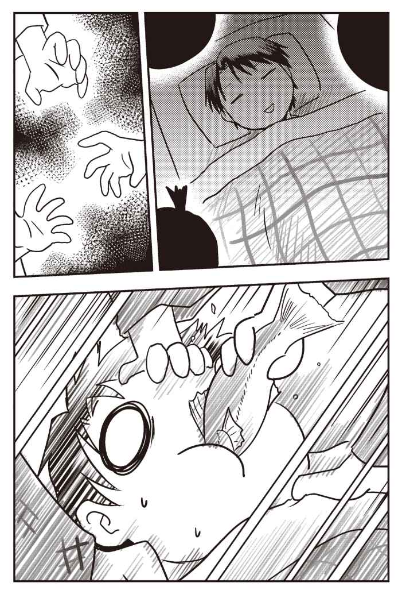
（なんでだ!? ）
私は混乱する。だが混乱している間にも、
「わたしもー」
「次、ぼくー」
「うむ、どんどんやっていいぞー」
そう声が聞こえ、さらなる魚をつっこまれた。
ちょっと待て。待ってくださいお願いします。
何とか逃げようにも、押さえつけられた体は動かない。目隠しされているため、何がなんだかわからない。ただ闇の中、元気に跳ねる生魚が口につっこまれ続ける、その生臭さだけがすべてであった。
......もう、何なのこれ。
目が覚めたとき、そこには魚も、その痕跡もなかった。ただ口の中にまだ魚の臭いが残っていた。
「......ああ、昨日川魚を釣りに行ったからなあ」
途中の釣り堀で岩魚や虹鱒釣りをした、だからだろうか、こんな夢を見たのは。
しかし......しばらくは川魚は食べたくなくなってしまった。おのれ座敷わらしたちめ、いずれリベンジしてくれるわ。
他の仲間はなんの体験もすることはなかったようだ。全員でピンポイントで私の口に魚をつっこみにきたのか、あの連中は。
そして朝食として雉メシを作り、片づけをして母屋の掃除を行う。チェックに来た半助さんと共に片づけて、そしてタガマヤ村での宿泊は無事、終わりを迎えた。
「いずれまた来よう」と思いタガマヤ村を出発、私たちは一路遠野に向かった。しかし二〇一五年十一月にテレビ番組でタガマヤ村が紹介されて注目を浴び、その後の予約は即いっぱいになってしまった。これを書いている現在、二〇一六年いっぱいの予約がぎっちりと埋まってしまっているので、それが嬉しいような、残念なような複雑な気持ちである。
遠野の奥深い不思議世界
御 伽 屋 （遠野市）
我々は、タガマヤ村を経由して座敷わらし祈願祭が行われる遠野に到着した。今回の宿は、遠野駅の近くにある「御伽屋」だった。
少し離れた場所にある駐車場に車をとめて移動する。民宿、という単語からのイメージでは一軒家が連想されるが、そこは小さなビルを宿にしていた。
一階の食堂には大量の本棚があり、カフェのような雰囲気だった。チェックインした我々は、大部屋に通される。五人で泊まるには広い、ゆったりとした立派な部屋であった。
この御伽屋のご主人は、「不思議空間『遠野』 ──『遠野物語』をｗｅｂせよ！」という遠野の不思議について考察・紹介するサイトを運営している。今回、途中で合流したＯさんはこのサイトを見ており、実にすばらしく参考になると非常にテンションをあげていた。気持ちはとてもわかる。膨大な量の記事は、知識の深さと行動力を如実に表している。
また、ご主人は希望者には車で遠野のガイドをしてくれる......のだが、車は四人乗りで我々は五人。まあそのうち一人は「夜の山なんて怖くて行けるか、俺はここに残る!! 」と叫んでいたのだが、それでも四人では車に乗りきれないし、山のほうは雪が溶けておらず危険というので断念することになった。さすが遠野、四月末でもそれか。
さて、そんなわけで夕食をいただいた後、話を聞くことになったわけだが......。
「まあ、うちに座敷わらしがいるかどうかなんて、わかりませんけどね」
ご主人はそう言う。
意外に思われるかもしれないが、この御伽屋だけではなく、「うちは座敷わらしがいる」と宿の人が言っている所は少ない。というか、むしろないといってもいいだろう。
私が今までいろんな所に行って聞いたところ、「お客さんがそういう話をしはじめたので......」というケースが多い。ＷＥＢなどで「うちには座敷わらしの伝説があります」と言っている所も、いざ話を聞いてみると、「自分は見たことないがお客様が見た、聞いた、感じたと言っているから......」と、そういう反応が多い。
もちろん、否定しているわけではない。が、さりとて「絶対にいますよ、必ず見れますよ、幸せになれますよ、げっへっへ」と押し出して肯定しているような所はない。それは例外なく、である。
そういうところは、みなさんどこも誠実であると私は思う。
なにしろ心の世界の問題なのだ。
御伽屋でも、宿泊客が座敷わらしを期待して泊まりに来て、その結果、不思議な体験をすることは多々あるらしい。そういうことが起きたとき、宿泊客は主人に嬉しそうに報告するという。
「まあ、それが座敷わらしかどうかはわからないんですが......。何しろ、別にうちは大繁盛して儲かっているわけではないですし」
そう、御伽屋のご主人は言う。だが、彼は決して否定しない。ここ遠野には不思議な出来事が、見えない世界があるのだろうと知っているから、そうだとも、そうでないとも断定できないし、しないのだろう。
そんなご主人も、いくつかの不思議な体験をしているという。
「座敷わらしかどうかはわかりませんがね、ちょっと変なことがあったんですよ」
ご主人は言う。
「うちの三階にあるトイレに行ったときのことなんですが、その時はお客が少なくて、三階には誰もいなかったんですよ。
で、トイレに行ったときにスリッパを揃えるのを忘れたんですが、次に見たらスリッパが揃えてあったんです。
自分で気がつかないうちに揃えていたのかな、習慣的に......と思って、今度はわざとスリッパを揃えないようにしてみたんです。
でも、後で見ると、なんか揃っているんです、そんなこともありました」
不思議な話である。しかしこれが座敷わらしの仕 業 かどうか疑うのも、わかる話だ。なぜなら、座敷わらしとは「いたずらをする」ものである。つまり普通なら、揃えたスリッパを散らかすのが座敷わらしだ。しかし揃えている。きちっと整理整頓している。これは座敷わらしなのだろうか？
答えはわからない。だが、異界のものというのはそんなものかもしれない。
「座敷わらしを求めていろんな宿を渡り歩いている人たちがいましてね......家族連れの方たちですが、旦那さんはぐっすりと寝ていたのですが、息子さんが金縛りにあったり、テレビや照明がついたり消えたりした、ことがあったそうです。
ほかにも、大人数でやってきた方々が、やはりそういうことがあったと言っていました。
生物調査の学者さんたちが定期的に泊まっているんですが、その人たちが〝見た〟こともあったそうなんです。女の子が立っていた、とか......。
他にも、お見合いのために部屋を借りた人たちが見たとか」
座敷猫？
「あと、これは座敷わらしかどうかはわからないというか、そもそも『子供の姿』ではないのですが......
母娘二人で泊まったお客さんがいて、夜に風呂に行こうとしたら黒猫がいましてね。
『猫ちゃん、お風呂はどこにあるか教えてくれる？』と尋ねたそうなんです。そしたら、その黒猫は風呂へと案内してくれて......でも風呂に鍵がかかっていた。その猫が外からガリガリと扉をひっかいて、中で風呂に入っていた別のお客さんがそれに気づいて風呂の扉を開けてくれた、というのです。
その猫は、朝の四時にトイレにも案内してくれた、とお客様が言っていました。
......でもね、うちの猫はちょうど出産したばかりで仔猫にお乳をやっていて、その時間帯は動けなかったはずなんです。もう一匹いる猫は、朝方に布団部屋に閉じ込められているのがわかったので、そういう案内などできない状況だったのです。
じゃあ、その猫はなんだったのか......。今考えても、不思議な話です」
座敷わらしじゃなく座敷猫か、それとも座敷わらしが猫の姿をとったのか、あるいはご主人すら知らない謎のルートで入ってきた、御伽屋の構造を熟知しているよその猫か。いずれにせよ不思議な話である。
というか、一番最後の説が一番奇妙に思えてしまう。そもそも猫というのは驚くと二足歩行で逃げたりする生き物だ。インターネットで動画を探すと、二足で歩いたりくつろいでる姿が流れているのである。人間のいないところでは普通に人語を話していても不思議ではない。あいつら一体何なのだ。
そしてご主人曰く、一番不思議な出来事が、オーブである。
オーブとはデジカメが全盛になったときに一気に現れ始めた、心霊写真の新しい形と言われる。多くは埃によるものだが、中にはどう考えても不思議な写真も多くあるという。
「お客さんがね、慌てて動画を見せに来てくださったんですが......」
ご主人は言う。
「金色に光る小さな玉が、動いている画像だったんですよ」
「金の玉、ですか......？」
その話を聞いて私は思い出す。座敷わらしとは、家の下に埋めた金の珠の精霊だという説があるということを。これは偶然だろうか。
「写真ならよくある話なんですけどね、動画でして、ふわーっ、と動いていたんですよ」
前もって用意していたものというのも考えにくい。なにしろこの旅館で撮れたものなのだ。真偽は不明であるが、なんにせよ面白い話である。
ほかにも、ご主人から遠野に伝わる一生に一度だけ何でも願いが叶うという神社の話、いま知られている有名な場所とは別のカッパ淵の話など、普通の観光コースでは知られていない場所の話を聞くことができた。
たとえば、ムササビという動物を知っているだろうか。空を飛ぶあのムササビである。名前や姿は知ってても、実際にその生態を知っている人は少ないだろう。
私は、長野のとある宿で剝 製 を見たことがあるが、その予想を超える巨大さにたいそう驚いた記憶がある。イメージしていたものよりはるかに大きい。あんなものが、夜に空を滑空していたら、それはまさに妖怪、もののけ、ばけものである。そういえば「野 衾 」というムササビの妖怪もいた。
御伽屋のご主人によれば、ムササビは「人の声に反応して鳴く」という。つまり、返事をするのだ。考えてほしい、夜の闇で気配がする。「だ、だれかいるのか!? 」と声をかけると、その声に返事をするように「ぐるるるるぅ」「がぁぁぁ」「ぎゃぁぁぁ」と声を上げるのだ。気の弱い者なら一目散に逃げ出すだろう。私もたぶん逃げる。
このような話は、実際に体験し、あるいはそれらを語り継いでいる人たちにしかわからない、臨場感のある生きた知識だ。
旅館で話を聞くだけでこれである。実際に遠野のガイドをやってもらった場合、どのような魔境が待っているのか......。
次に御伽屋を訪れるときは、ぜひともガイドをお願いしたいと思った。
そんなこんなでずっと話を聞き、夜も更けてきたので寝ることにする。
何か妙な夢を見たような気はするが、さりとて特筆することもなく朝を迎えた。
残念ながら、この御伽屋の座敷わらしらしきものとは、私たちは遭遇することはできなかった。だが、ここで話を聞き、遠野という土地のさらなる深い魅力を知った。何度でも訪れたい場所である、そう思った。
宝くじが当たるご利 益 がある座敷わらし
生寿苑（群馬県・猿ヶ京温泉）
十二月二十三日。朝の七時に家を出て新宿に向かう。目的は、座敷わらしの出る宿に泊まることだ。
......男二人で。クリスマスイブ前日に。
「そう考えると身も心も寒いものが」
「言わないでくれますかね」
今回は私が学んでいる法術の兄弟子である、羽々桐氏との二人である。
目指す場所は東北ではない。群馬県、猿ヶ京温泉郷にある「生寿苑」である。ここにも座敷わらしの伝説があるという。
私は羽々桐さんと新宿で待ち合わせ、新南口からバスに乗車し、三時間の道のりを経て群馬へと向かう。うとうとと目を閉じてひと眠りし、目を開けるとそこは雪景色だった。
トンネルを抜けるとそこは雪国だった──ではなく、眠りを抜けると、である。いきなり変わった景色に感動を覚えつつも、雪景色に変わる様を見たかったという気持ちもあり少し複雑だった。
そして駅で降車。少し待ち、路線バスに乗り換え、終点である猿ヶ京を目指す。我々はタクシーで散財もしていられないので、バスに頼ったらチェックイン時間より四十五分も早く到着してしまった。
「開店前に店に入ろうとするマナーがなってない客のような気分です、十凪さん」
「いやいや、ような、じゃなくてそのものっすよ羽々桐さん」
だが、この雪景色の中、四十五分も立ち往生するわけにもいかず、かといって土地勘がないまま雪景色を散歩したら遭難しかねない。
「事情を話してごめんなさいするしかないですね」
しかし、旅館の方は暖かく出迎えてくれたのだった。人の情が雪景色に染み入る。まさに旅の醍醐味である。
宿帳を書き、案内されたのは椿の間。立派な和風の部屋である。そして特筆すべきは、掘りごたつであるということ。
堀りごたつ。なんと懐かしい。早速入る。あったけぇ。
「掘りごたつは人類の生み出した叡智のひとつですねぇ」
そうやって堪能していると、仲居さんが部屋の説明に入る。ちょうどいいので、座敷わらしについて聞いてみた。
「すみません、部屋についての質問、というわけではないのですが......ここ、座敷わらしが出るのですよね」
この旅館の若奥さんの話では、ここの座敷わらしは宝くじが当たるご利益があるらしい。
そして、奥さんがお客さんから聞かされたという座敷わらしの話をいくつか教わった。
それによると......
・子供が宿泊していない日に八歳ぐらいの子が遊んでいたのを目撃された。
・自販機でジュースを買っていたら隣に子供がいて、コーラを勧められた。
・夜にノックがあり、戸を開けたら何もいなかった。
こんなことが一か月に一度の頻度で起きるらしい。
およそ毎月。そう考えると個人的にはかなりの頻度ではないかと思うが、奥さんは二、三週間ほど座敷わらしの話を聞かないと、いなくなってしまったのかな......と少し不安に思うらしい。そういったタイミングで座敷わらしの目撃談、体験談が出てくるあたり、これもまた座敷わらしのいたずらのような気がして微笑ましい。
「旅館の主人のほうが詳しいので話をしてくれるように伝えましょうか？」
と、ありがたい申し出を受けた。
夜にでもロビーで話してくれるように計らってくれると言う。
祠に結ばれたたくさんの絵馬
羽々桐さんは、少しそこらを見て回るという。ここからはおたがい自由行動だ。
私は温泉を堪能し、持ち込んだノートパソコンで作業を行う。連載漫画の次のネームだ。
少し作業を進めていたら、掘りごたつの上に置かれている小さな絵馬に目が行った。
旅館からのサービスで、この絵馬に願いを書いて、座敷わらしを祀ってある八幡さまの祠 に結ぶのだ。
私は気分転換もかねて、その祠に行ってみることにした。
旅館の正門の横に、その八幡さまはあった。小さな祠である。
近づくと、かっ、こっ、かここここここ......と音がする。妙な音だ。
耳を澄ませてみると、その音は少し奥から聞こえてくる。
何かが動いていた。啄木鳥 だ。啄木鳥が木を突いていたのだ。初めて見たその光景に感動する。
「ここですよ」
羽々桐さんがすでに到着していた。
彼に促されるまま、祠の近くにある、絵馬が飾られている台を見る。そこにはぎっしりと小さな絵馬が飾られていた。
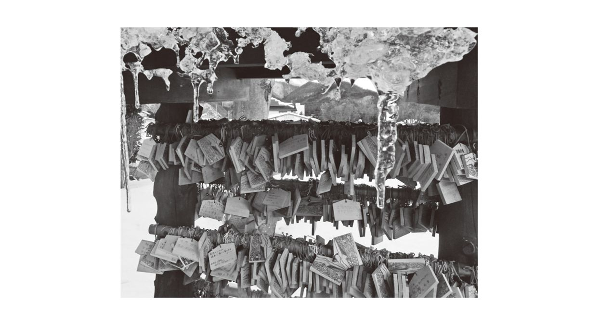
「うわあ、すごい。これみんな宿泊した人たちが書いたんですね」
「でしょうね......しかし妙でもあるような、なっとくいくような」
「どうしたんです？」
私は聞く。羽々桐さんは言った。
「絵馬なんてのは、我欲の念が大量に宿ってることが多いんですよ。そしてそれは度を過ぎると、魔物になる。なので普通は年に一度燃やして浄化しています」
「ああ、正月とかにやってますね」
「まあ年に一度でなくても、やはり定期的にその気を抜かないと、凝り固まって悪影響を及ぼすことがあるのですが......。
ここのは、そんな雰囲気というか予兆がないんですよね。さりとて、すでに浄化しているのかと思えばそういうことでもない」
そこに掲げられている大量の絵馬を見ると、その多くが宝くじが当たりますように、だった。
しかしそればかりというわけでもなく、病気が治りますように、素敵な出会いがありますように、元気な赤ちゃんが生まれますように......。
いろんな微笑ましい願いがあった。
なかには、お礼も書かれていた。
〝宝くじ一等が当たりました、ありがとうございました〟
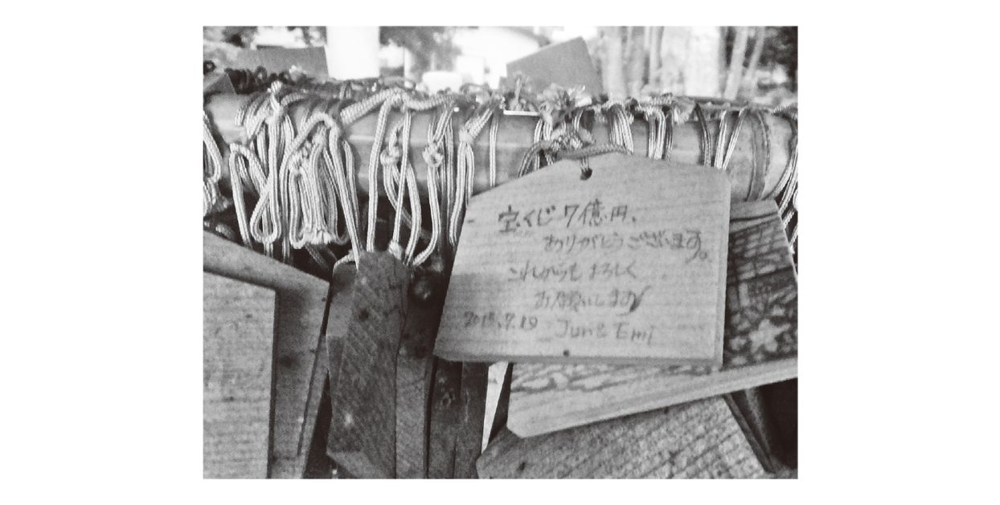
本当だろうか。本当なら羨ましい限りである。そして感謝を忘れずに絵馬を掲げるなど、殊勝な心がけである。
そんな中で、とある願いがいくつも掲げられてあるのに気づいた。
「みんなが幸せでありますように」
......いい願いだと思う。
きっと、そういった心持ちが、座敷わらしを、幸せを呼んでくるのだろう。
「なるほど、こりゃそんなに汚れたりしないでしょうね」
私は言う。羽々桐さんもうなずいた。
及ばずながら自分も、絵馬を書いた。
「みんながしあわせでありますように」
部屋にもどり作業をしていると夕食の時間になる。個室に通されてそこでいただく豪勢な夕食。普段はお目にかかれない食材がいくつもあった。鮎や岩魚などは、まあこういう旅館だとよくある代表的な山の幸だろう。
しかし......岩魚の卵とか、ナマズの南蛮漬けとかはさすがに初めて見た。ナマズ、一度喰ってみたかったのだ。
肉は淡白で実に美味でした。
というか、後から後から大量に出て来るので、最近小食になっていた私にはボリュームが多すぎた。いや、もちろん私も羽々桐さんも全部美味しくたいらげたわけなのだが。
みんなの幸せを......
そして八時半、旅館のご主人登場。
私たちのいきなりのぶしつけな話に快く応じてくれた。
「座敷わらしについての話をしてほしい、というのは初めてでしてね、何をどう話せばいいのやら......」
とはにかみながら答えてくれた。
「ここに出ると言われているわらしは、八歳ぐらいの男の子......ですね。私は見たことないんですよ。霊感はあるほうですか？」
「いいえ、明晰夢などで夢に見ることはありますが、そこにいる!! みたいに視覚的に視 えることはないですね」
私はそう答える。隣にいる羽々桐さんの下、その手の修行中であるとは答えなかった。
「私たちも霊感などなくて、実際に見たことはないんですよ」
お客さんたちの体験談だけであるという。そもそも、最初は座敷わらしのことなど知らなかったというから驚きだ。
この一帯は温泉郷であるが、あるホテルの女将さんがこの地域の民話を集めており、その女将さんが教えてくれたというのだ。「集めた民話の中に、ここの話もあったんだけどね。座敷わらしが、ここに出たそうだよ」って。
猿ヶ京温泉のガイドによると、その逸話はこうである。
旅の若い夫婦が峠を越えようと思っていたら、暗くなってしまったので泊めてもらおうとしたけど、どの家も一見の旅の者じゃ泊めてくれない。
村はずれのお堂にいた優しげな婆さまに聞くと、この先の豪儀な家には、誰も住んでいないから行ってみたらいいと言う。
「やれよかった」と、行ってみると、間口十五間、奥行き五間の立派な家だ。蜘蛛の巣だらけで、ほこりがつもっているけど囲炉裏は豪儀だし、大黒柱も太い。
「夜露をしのげるだけでも、ありがてぇ」
と言って、疲れもあってそこで寝ちまった。
朝、起きたら雨がペチャペチャ降ってる。
「急ぐ旅じゃねえ、しばらく世話になるべぇ」
とそこにいたら、川の氾濫だといってこの夫婦もんの父つぁんも、村人の助っ人に出た。
おっ母さんのほうが、一人になって囲炉裏端にいると、廊下の方で「とんとんとんとん」と子どもが飛び跳ねてる音がして、かわいげな歌まで聞こえる。
「へぇ、誰だや、出てこう。おいおい、誰だ、出てこう」
って呼んだけど、そのうちいなくなっちまった。
次の晩、また、「とんとんとんとん」と家中を跳ね回って、歌をうたっている。
「恥ずかしがらねぇで、来いや。炒り豆あるで」
と言うと、すーと戸が開いて、かわいげなケシ坊主の頭をした男の子が顔を出した。
そのうち、おっ母さんのひざの上に上がって遊ぶようになったんだと。
すると、ケシ坊主の男の子が
「おっ母ぁ、毎日遊んでくれてうれしかった。おらぁ、この大きな家に長い間ずうっと一人っきりでいただよ。
おらが出てゆくと、誰もが、出たぁ！ ちゅうで逃げて行っちもう。もう寂しくて寂しくてどうしょうもなかった。
けぇどおっ母ぁが来てくれて、炒り豆くれたり、だんご食わしてくれたり、歌って遊んでくれてよかった」
そして「おらぁ、おきのでぇ（奥の部屋） の畳の下にいるだから、掘ってもらいてぇ」と言う。
その翌日、おっ父つぁんが帰って来たのでそのことを話すと
「狐かたぬきに化かされているんだっぺ。まぁいいや、退治してくれべぇ」
と、言われたように掘ったら、そこからでっかい瓶が出てきて、なかからざくざく大判小判が出てきた。
金瓶が、あんまり長い間、埋もれていたので、
「出してくれ」
って、ケシ坊主の座敷わらしの姿になって出てきたんだとさ。
それで、若い夫婦もんは、正直で働きもんだし、村の衆がいてくれちゅうて。そしたら、すぐケシ坊主の座敷わらしみたいなかわいい子が産まれて、末永く、村で徳性に暮らしたんだと。
何代かあとの人が、その金瓶を八幡さまに祀って、今でも拝んでいるんだと......。
（猿ヶ京温泉語りガイド「おとめ婆の祈り」より抜粋）
そして話を聞き、いろいろと調べた結果、確かにそういう話はあった。そして八幡さまの祠の話も。
その祠は、今ある場所ではなく、すこしずれた別の茂みの中に隠れて朽ち果てるようにしてあった。それを、先代のご主人（いまのご主人のお父さん）が、それなら移築しよう、ということで祠を移したということである。
そういう事情なので、実はこの宿は、座敷わらしをメインに売り出しているわけではない。
メインはあくまでも美味しい料理と温泉と部屋である、とのことだ。実際料理はすげえよかったし。
私も、それでいいと思う。いや、そうあるべきだろう。
今まで行ったいくつかの座敷わらしの出る宿も、座敷わらしをメインとしてイケイケに押し出しているわけではない。異界なるモノとの付き合いは、それでいいと思うのだ。
座敷わらしとは、いわば宝くじ当選のようなもの。それに縋 り、固執すると破滅が待っているだけ。大事なのは自分の心だろう。
そう私が言うと、ご主人も頷き、納得してくれた。
前にも書いたが、ここの絵馬には宝くじが当たりますように、という願いが多いが、それに匹敵するほど他人のことを祈り願っている絵馬が多かった。
宿泊ノートを見せてもらったが、そのノートからもあたたかい雰囲気が伝わってきた。
そうそう、これだよ、これでこそなのだ。他の宿でもそうだったが、こういう暖かいところにこそ座敷わらしは宿ると思う。
「宝くじが当たる」と聞けば、我欲にまみれた客が来るかもしれない。しかしそれ以上に、家族、友人、そして他の誰かの、みんなの幸せを祈れるような人たち、そしてその幸せを喜べる人たち。
そうやって巡り巡る幸せこそが、座敷わらしなんじゃないだろうか。
これはお金と同じだ。執着し溜めこめばみんなが不幸になる。しかし回せばみんなが幸せになる。
ご主人もそうでしょうね、と言ってくれた。
「座敷わらしにこだわるつもりはありませんけど、不思議なことでね。
うちは子供にはあまり優しくない造りの宿なんですよ。風呂にベビーベッドとか置いていませんし。
それでも、宿泊された妊婦の方が、前よりも元気におなかを蹴るようになった、とか、逆 子 が治りました、とか......感謝の言葉が届いてくるんですね。
不思議なものです。それも座敷わらしのおかげ......なんでしょうかね。
他にもうちではシーズンのときに宿泊客の方に宝くじを一枚ずつお配りしたりしているんですが、その宝くじが当たりました、と感謝の言葉も来ます。まあいくら当たりましたか？ とか聞けないわけですが......」
そうやってお客さんのことを話すご主人の顔は、とても幸せそうだった。
不思議な存在に会うために
そして就寝。
私の最近の趣味のひとつに明晰夢に挑むことがある。これは時折、体脱感を伴うこともあり体外離脱夢、幽体離脱とも呼ばれている。
そしてその状況になると、かなりの確率で不思議な存在に会うことができるのだ。
かつて遠野の民宿で、体脱感を感じた次の瞬間に、座敷わらしが目の前に立っていたということもあった。今回もそれを狙っている。
もっとも、狙った通りに一〇〇％その離脱夢が見られる、というわけでは当然ないのだが。
挑戦してそのまま気がつけば朝までぐっすりだった、ということも多々ある。
なのでダメ元で......という感じで気負い過ぎないようにして、今回も挑戦してみることにした。
床に就き、しばらくする。なんどか意識が途切れるが、すぐに目覚めてしまう。暑くて寝苦しいのだ。
自分の経験則では、明晰夢、幽体離脱を体験するときは寝苦しくて汗が出る。だからこれはいい。しかし、体が浮き上がる感覚は起きない。幽体離脱は無理なようである。しかしぼうっとした、なんとか考えられるけど眠い、というこの意識状態なら、うまくいけばなんとかなるかもしれない。イメージがうまく浮かべばしめたものだ。
半分寝ている夢うつつの状態で、わたしは座敷わらしに対して、いるのかどうか話しかけて見た。
まず、千織が出てくる。うん、悪いけどお前じゃない。
「せっかく出てきたのにそれはないと思うなー......」
まあそれはそうだけど。
俺は今回はこの宿の座敷わらしに会ってみたいのだ。またの機会に頼む。
「はーい」
そう言って、千織のビジョンは消える。私はさらにもう一度呼んでみる。そうしていたら、男の子の姿が浮かんできた。
この子がそうか......さっそく話しかけてみる。
「ここの宿の座敷わらし？」
「うん」
「この宿と家の人たち、好き？」
「好き！」
「コーラ好き？」
「大好き。ここにはゼロしかないのが残念」
などと話す。そして遊ぶことにする。どうせ遊ぶなら千織も......と思ったのだが、へそを曲げたのか呼んでも出て来てくれない。
これはただの空想、妄想の類だろうか。それとも実際に見ている夢、そこで会えたのだろうか。
答えは結局のところ「わからない」となる。
経験があるかもしれないが、半分寝ている状態、寝ぼけ眼 の夢うつつの状態だと、布団の中での空想が勝手に動き出すのだ。
今はまさにその状態である。
夢なのか空想なのか、本当に「出て」いるのか......客観的に判別できない以上、主観として見るなら......なんであれ、確かにそこにいるのだ。
疑うことは大事だが、頭からの否定はいけない、これが私のモットーである。それに、もうなんというか、いいかげん頭がぼーっとしてきたのでそれ以上考えるのをやめたくなったのもある。
だが、えてして夢うつつのときというのは、考えることをやめたとしても、その相手は勝手に動いてくるものである。イメージの暴走とでもいうのだろうか。
そしてそれは、唐突にやってきた。
座敷わらしと巨大な「くまモン」
私が質問をやめたからなのだろうか。遊びたくてうずうずしていたのか。座敷わらしは、おもむろに......
背後から巨大な「くまモン」を呼び出したのである。
そう、背後霊のように、あるいは召喚獣や識神のように。
そのリアルな着ぐるみが眼前にいるような滑稽な威圧感。
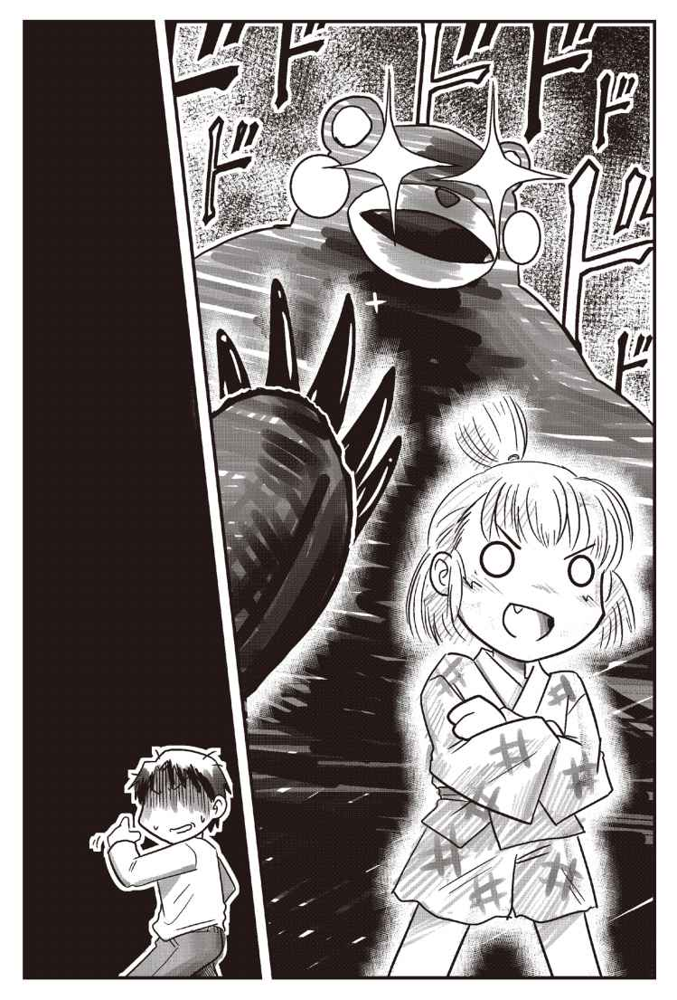
それにはさすがに私も驚いた。そして、
「遊ぼうよー！」
そうせがんでくる座敷わらし。
しかし、その無邪気な言葉と裏腹に、背後で存在感をかもしだす「くまモン」。
戦ったら死ぬ──
私はそう直感した。
「よし、遊ぼう。ただし相撲じゃない、鬼ごっこだ」
そう言って私は一目散に逃げ出す。もちろん実際に肉体で、ではなくて空想の世界の中でだ。そうやって私は、意識が落ち、夢が終わるまでひたすらと逃げ続けたのだった。命がけで。
そうして、ふと目が覚める。尿意を催したのだ。
助かった、そう思い立ち上がり、照明をつけようとするが......
何度やっても照明のリモコンが動かない。
さっきから試してた明晰夢状態なのかとも一瞬思ったが、それにしては景色が就寝前と同じすぎるし、特有の高揚感もない。現実だ。もうひとつの布団では羽々桐さんが寝ている。
私は携帯電話のカメラ機能で、リモコンから赤外線が出ているのは確認した。かつて家のエアコンが壊れたときに、リモコンの確認方法を教わったのだ。
しかし何度やってもリモコンで照明がつかないので、仕方なく壁のスイッチで電気をつけた。
スイッチでは照明は普通についたので、照明自体が壊れたわけではないようだ。
またリモコンを押す。やっぱり動かない。なんど押しても動かない。
別にそんなに困るわけでもないので、トイレに行ってそのまま、また床についた。
朝になると普通に、それは動いた。リモコンを押すと照明がついた。また押すと消えた。正常である。
......なんでだ。
座敷わらしのいたずらだったのだろうか。
ここの座敷わらしは、相当にいたずら者のようである。
そのことを羽々桐氏に話したところ、
「いや、ぜんぜん気づきませんでした。
そういうわかりやすい現象は面白いですね。リモコンだけ、か......電気そのものがついたなら、旅館で夜の間だけ電気の大本を落としていた、というのも考えにくい。寒さで夜の間だけリモコンの受信システムに狂いが生じていた可能性は？ いや、寒いからといって狂うものなのか、それに......」
長くなりそうだったので、彼にも座敷わらしは見えたのか聞いてみた。
「ああ、出ましたよ。山の中でかくれんぼして遊んだりしました」
やはり結論として、ここの座敷わらしはやたらアクティヴなようである。まあ、元気なことは良いことなのだが。
泊まったお腹の赤ちゃんや子供が元気になるのも、きっとそういうことなのだろうか。元気のパワーを分け与えているのかもしれない。
親の幸せとは、子供が元気に生まれ、育つことなのだから。
もっとも知られた座敷わらしの出る宿
緑風荘（岩手県二戸市）
ここはいわずと知れた「座敷わらしの出る宿」の代名詞、最も有名な老舗旅館であろう。
旅館として開業する以前から、柔道家の三 船 久 蔵 が座敷わらしと相撲を取った話や、盛岡出身の政治家・田 子 一 民 が座敷わらしの姿を目撃し、後に衆議院議長になった（昭和十六年） 、などの逸話が残されている。
昭和三十年（１９５５） に開業以来、「槐 の間」には座敷わらしが現れ、そこに泊まった者には幸運が舞い込むと言われるようになり、また槐の間以外でも座敷わらしの目撃談や体験談があるという。
当時、「槐の間」は人気が高く、一週間の予約期間に、三年分の予約を一気に受け付けていたため予約は大変困難だったらしい。毎回毎回、受付開始から数日間は電話が殺到して回線障害が発生していたほどだという。そのため「槐の間」は宿泊客が外出中のときには一般公開もしていたほどだ（※現在の予約方法は変わっている）。
ここの座敷わらしはおかっぱ頭の男の子であり、五日市家の祖先である「亀麿」と伝えられている。南北朝時代の南朝方の公家であり、戦いに敗れてこの地まで落ち延びたものの、途中長男である亀麿は病に伏し、わずか六歳でこの世を去ったという。男児として戦えぬままこの世を去るのは無念だったのであろう。「魂となり末代まで我が家を守る」と言い残したらしく、その言葉通り七百年もの間、五日市家と緑風荘を守り続けたのだという。
二〇〇九年に火事となり全焼したが、そのときも「子供の声で逃げろと言う叫び声が聞こえた」「光の玉の中で、子供の姿が踊っていた」「火事の後、まっすぐに亀麿神社に光が消えていった」などの目撃証言がある。全焼したのは旅館部分だけであり、亀麿さまを祀る神社には傷一つなく、今も亀麿さまはそこを拠点にいろんな所に遊びに行っているのだろう。
「本来は、三年で......二〇一一年に完成する予定だったんですよ、新しい緑風荘は」
緑風荘のご主人、五日市家の当主・五日市洋氏はそう言った。
我々の取材に、彼は快く応対してくれた。
「ですが、資金繰りが大変だったり、震災があったりして思うように進まず、大変でしたね」
それはそうだろう。なにしろ、『座敷わらしの出る、幸せになれる宿』と言われていた所が火事で焼失したのだ。当時、インターネットやテレビなどでは、「ご利益なし」「座敷わらしなんていなかった」「いいやいたよ、逃げたけど」「座敷わらしの実在を証明したな、焼けたことで逆に」などと散々な言われようだったのだ。
おそらく、ご主人が言う以上の苦労があったであろうことは想像に難くない。緑風荘ファンの方々の集まりだった「亀麿会」が解散し、さらには、二〇一三年に緑風荘再建計画が白紙撤回されるなど、さまざまな出来事があったのだ。
だが、それでも緑風荘は二〇一六年に再建を果たす。ここまで来るのは並大抵ではなかっただろう。
「なんというか、本当にお疲れ様です」
私は言う。
有名になればなるほど、その苦労もまた増える。「禍 福 は糾 える縄 のごとし」というが、それは「幸福と不幸は、より合わせた縄のように交互にやってくる」という意味だが、緑風荘に泊まったことのある人は、「ご主人はどんどんやつれていっていた、肉体的な苦労もあれば心労もあったのだろう」と心配していた。
嫉妬もあれば、変な客も多かっただろう。それでも頑張っていたところに、火事での焼失騒ぎ。心労はとても大きかっただろう。
それでも、なんとかやってこられたのは......
「今まで泊まりに来て下さったお客様、力を貸してくれる方々、待ってて下さる方々のおかげですね」
一歩前に進むたびに壁が出てきて大変だったが、彼らのおかげでここまでやってこられたという。まさに大切なのは人の縁ということだろう。この緑風荘をモデルに書かれた小説『ユタとふしぎな仲間たち』（三浦哲 朗 著） を舞台化した劇団からも寄付があったという。
そんなふうに皆が力を貸してくれる中、足湯を始めたり、亀麿神社で例大祭を行ったりと、少しずつ頑張ってきた。だからこそ再建に至ることができたのだろう。
「今まで多くの方々が来てくれました。そんな方々に、『前よりもよくなった』と言っていただきたいですね。
建物自体も前のときより小さくなり、部屋数自体は少なくなって、宴会部屋もなくなりました。宿泊のみになりました。でも、だからこそおもてなしに力を入れ、喜んでいただきたいと思っています。この本を読んでいただいた方にも、ぜひ座敷わらしを感じて、会いに来てほしいですね」
そうご主人は語ってくれた。
私も、以前の緑風荘にはついぞ泊まることはできなかったが、再建した緑風荘にはぜひとも泊まらせていただきたいと思っている。
「座敷わらし同好会」メンバーの体験記
私もこれまでいろいろな「座敷わらしの出る宿」に泊まってきたが、私以上に（？）座敷わらしを愛する人たちのコミュニティ、それが「座敷わらし同好会」である。
かつて岩手県金田一温泉郷の緑風荘と緑風荘の座敷わらしファンの間で設立された「亀麿会」が前身であり、二〇一二年に会が解散したことにともない、有志で新たに新しい会を立ち上げたものだ。
だから、緑風荘にかぎらず、菅原別館、遠野、山形など、各地の座敷わらしに興味、関心のある方々が集まり、情報交換などを目的に、ホームページを中心に、毎月メールマガジンを発行し、年一度の親睦会も行い、不思議体験などを語る場として活動している。
すべてボランティアで運営しており、会費などは一切かからないが、本当に座敷わらしを愛する方々に入会してもらうため、会員制の組織としている。
そこで会員の方々のさまざまな体験をここで紹介しよう。
座敷わらしと、緑風荘に通いつめた日々
私が緑風荘に初めて行ったのは、二〇〇二年一〇月一一日のことです。
座敷わらしに興味があったわけではありません。私の息子が、その一年前に緑風荘に泊まり、来年も来たいと予約してあったのです。ところが、「仕事の関係で行けなくなった。せっかくの予約だから行って来たら？」と私にお鉢が回ってきたのです。たまたま私の高齢の母親が行きたがっていたこともあり、重い腰を上げたわけです。
さて、夕方緑風荘に到着。「槐の間」に通されました。部屋に入るやいなや、小鳥たちが鳴きはじめたのにびっくりしました。振動を与えると鳴く小鳥のおもちゃなんですが、離れているにもかかわらず鳴くのです。旅館の方（厨房のＳさん） に聞いたところ、「よかったですね。きっといいことがありますよ」との返答でした。
その日は、一晩中、小鳥たちが鳴いてくれたものの、座敷わらしには会えませんでした。
次の日の朝、緑風荘から離れがたい気持ちが強くなり、「この不思議な気持ちは、何だろう？」と思ったのを今でも鮮明に覚えています。
チェックアウト後、一枚だけ玄関前で写真を撮りました。この玄関前での撮影が、緑風荘通いのきっかけになろうとは、その時は知る由 もありませんでした。
後ろ髪を引かれる思いで緑風荘を後にしましたが、思いは募るばかりです。しかし、「槐の間」は二年先まで予約でいっぱいでした。その当時の私は、「緑風荘に泊まるのなら槐の間しかない、他の部屋に泊まってもしょうがない」と思い込んでいて、「多分、もう行くチャンスはないだろう」と思っていました。
帰宅三日目、でき上がってきた写真を見てびっくり（当時私はデジカメを持っておらず、インスタントカメラで写真を撮ってきたのです）。まるでお月様のように丸くて光るものが写っていたからです。しかも球体の下のほうには、おかっぱの子供の顔が写っています。次の日、あまりの不思議な体験に、お礼の手紙をしたため、写真を同封して緑風荘に送りました。
年が明けた二〇〇三年二月の末、ダメもとで緑風荘に電話をかけてみると、一週間後の三月三日にキャンセルが出たとのこと。すぐに予約し、写真を持って行くことにしました。緑風荘に着き、女将さんに写真を見せてあれこれ尋ねたところ、ご当主に聞いてほしいと常 居 （＝居間） に通されました。ご当主は「これだけのオーブは大変珍しい。大きく引き伸ばした写真がほしい」と言われ、私は即座に「わかりました。近々持ってきます」と答えました。その時は、「写真を送る」ということは全く考えず、「持ってまた来る」という気持ちでした。
私が最初に座敷わらしに会ったのは、二〇〇三年五月五日（正確には翌未明） です。母親と妹、私の三名で「蓬 萊 の間」に宿泊しました。緑風荘に通い始めて六泊目のことです。
夜中に夢を見ました。
幼いときの懐かしい夢、友達とかくれんぼをしています。私は布団にもぐり込み隠れました。鬼（友達）が寄ってきて、「みぃーつけた」と私のお腹をポンポンポンと叩きました。その瞬間、「本当に叩かれたような気がして」目を開きました。
すると、まっすぐ視線の先、天井近くで「うぐいす色の着物を着た男の子」がじっと私を見ております。
私はすぐに座敷わらしだと思いました。恐怖心は全く湧きませんでした。金縛りにはあいませんでしたが、どうして良いかわからず、私はただ見つめるだけ。どのくらいそうしていたでしょう。突然、座敷わらしは、空中を滑るように降りてきて私の目の前でふっと消えました。
また現れるかもと思い目をこらしていましたが、目の前に広がるのは漆黒の暗闇だけでした。しばらくして時間を確認しようと時計を見ましたが、暗くて全く見えず、ライターを灯してやっと時間を知ることができました。午前一時三〇分の出来事です。
しかし、そのような真っ暗闇の中でも座敷わらしの姿のみならず、着ていた着物の色まではっきりと見ることができたのは不思議というほかありません。
もう、座敷わらしに会えて有頂天になった私は、緑風荘の女将さんをはじめとする皆さんに「会った、会った」と喋りっぱなし。
心の中では、「これはついてる。良いことがあるぞ。どんな良いことがあるんだろう」と大喜び。ますます緑風荘通いに拍車がかかっていきます。
当時、緑風荘の先代（和彦氏）は、あるインタビューで「座敷わらしに会える人は、一〇〇〇人、いや二〇〇〇人に一人くらいでしょう」と語っていたこともあり、本当に鼻高々。もう座敷わらしと友達にでもなったかのような気持ちで緑風荘に通い詰めます。
しかし、その後二〇〇四年、二〇〇五年、二〇〇六年と、座敷わらしに会えない日々が続きました。その間、特筆すべきご利益のようなものは、全くありません。さすがの私も、もうあきらめ気分で、「まあ、一回は会えたから良しとするか。座敷わらしに会うなんて、一生に一度くらいのことだからな」などと自分を慰めておりました。
座敷わらしに会いたいがために緑風荘通いを続けていたのは事実ですが、一方では、女将さんをはじめとする皆さんの心遣いに加え、なんとも形容しがたい居心地の良い空間に魅了されていた自分がいたのも本当のところでした。
そんな日々を過ごしているうち、気持ちも徐々に変わりはじめ、二〇〇六年の暮れが押し迫る頃には、「ぬか喜びした自分が恥ずかしい。幸運は自分の力で引きよせるものだ」と思えるようになり、純粋に緑風荘の雰囲気を楽しむようになっていました。
そして二〇〇七年二月十一日、ついに座敷わらしと二回目の対面を果たします。
実に三年九か月ぶりのことです。その間の緑風荘宿泊回数は通算で六十九泊。今になって考えると、座敷わらしに会う前は、まさか座敷わらしに会えるとは思っていませんでしたし、欲得で緑風荘に行っていたわけではありませんでした。のんびりできる空間と不思議に惹かれていただけでした。それが座敷わらしに会ったとたんに豹変し（涙）、欲の塊 となり三年数か月。
でもその月日は、無駄ではありませんでした。時間はかかりましたが自分の心は少しずつ変わり、「人として恥ずかしくない生き方をしなければ」と思えるようになったからです。
そんな風に思える様になった二〇〇七年二月一一日（正確には翌午前二時五分） 、「寿の間」で座敷わらしと会うことができました。二度目の座敷わらしは、暗闇からわき出るように現れました。
夜中、目が覚めました。真っ暗で何も見えません。突然目覚めたのに、全く眠気はありません。何となく暗闇を見つめていたところ、暗闇の奥からスーッと座敷わらしが出現しました。体、手足は緑色の竹人形のように見えましたが、顔は人間の子供です。振り子のように大きくゆっくり左右に揺れ、元に戻るたびに別の子供の顔に変わります。五人目の子供の顔が現れた後、フッと消えてしまいました。
二度目の対面後は、自分でも驚くほど冷静にいられました。ただその日は一日中、体がしびれるような喜びと、感謝の気持ちに包まれていたことをはっきりと覚えています。
座敷わらしによって心を入れかえられた私は、その後も座敷わらしに会う機会を得ていきます。オーブと戯れることもできるようになりました。そのすべてをここで語ることができないのは残念ですが、この体験談を読んで、非日常の世界を感じていただければ幸いです。
（座敷わらし同好会会長・内山さん）
わらしちゃんのお蔭で、娘が元気に
座敷わらしで有名な緑風荘のことをテレビで知り、早速電話を入れ夫婦で宿泊しました。
宿は古く、お世辞にも綺麗な旅館とは言い難く、それでも温かいもてなしにくつろいでおりました。
お部屋にお風呂がなかったため、大浴場に行って部屋に帰るとき、誰もいない部屋に誰かがいた気配がするんです。「なんか怖いなぁ」と夫婦して怯 えていたのですが、移動の疲れもあってか、夜の九時には寝てしまいました。
その日の夜中、物音で目が覚めると音は聞こえず、いきなり部屋の床の間にあった鳥の玩具が鳴き出しました。
翌朝、宿の人にその話をすると「わらしちゃんが来てたのですかね～」と言われ、
「座敷わらしを見たことがあるんですか？」と、お聞きすると、
「いえいえ、住んでいる人間は見たことはないんですよ～」と笑顔で返されました。
これは何かあると確信した私たちは自宅に帰ってからも、再度宿泊したいという思いに駆られ、娘を連れて再び宿に訪れたのです。
ちょうどその頃の娘は体の調子がいつも悪く、通院を余儀なくされており、運動も制限されるほどでしたが、私たちの話に自分も行きたいとお願いされ三人で参りました。
宿に到着し、案内された部屋は一番隅の広い部屋、窓からは大浴場が見えます。前回とは違い、なぜか怖い感覚はありませんでした。
その日の夜は鳥が鳴くこともなく、写真を撮影して白い球状のオーブが写った程度で気配や体に感じるものはありませんでした。
そして緑風荘から自宅に戻った翌日の朝、事件が起こりました。娘が血相を変えて部屋から飛び出てきました。
何があったのか問いただすと、着物を着た坊主頭の男の子がベッドの脇に立っていたと言うのです。それも一人ではなく何人も。
......それで、恐る恐る娘の部屋に入り周囲を確認しましたが誰もおりません。
「夢じゃないの？」
と、娘に聞いても首を横に振るばかり。娘の目を見ても嘘を言っているようには思えません。
もしかしたら「座敷わらし」が付いてきちゃったのかもね、って笑って話しその場は収まりましたが、娘がその男の子を見てからは、今まで患っていた娘の病気の症状はまったく出なくなり、医者も驚くほど健康になりました。
なぜ、体が突然良くなったのか？ その病気は自然に治るということは、ありえません。何度考えてみても結論は出ませんので、「わらしちゃん」のお陰だと思うようにし、感謝感謝で毎日を過ごしています。
良い方向へ向かったのは娘だけではなく、夫婦の仕事も家庭内も物凄く円満になりました。
その後、緑風荘に改めて伺った際、その話を宿の女将さんにお話ししましたら、
「娘さん良かったですねェ」
と一言おっしゃられたその言葉に、確信的に感じるものがありました。
「娘の見たのは本物だ」と......。
（座敷わらし同好会・Ｙさん）
タガマヤ村での不思議体験
山形県天童市からほど近く、中山町という場所に「タガマヤ村」という築一〇〇年以上経つ古民家宿泊施設があります。こちらの奥の間でかねてより「座敷わらし」を見たという報告例が上がっており、当会会員さんが宿泊したことをお聞きし、なぜだか無性に行きたくなり即座に予約を入れたのが最初でした。
そして初めてこちらへ訪れたのは十月、庭の林檎の木がたわわに実り、秋の訪れを感じるころでした。
最初は兄夫婦と四人で宿泊し、部屋を見て回ると結構な数があることが判ります。
お酒を飲んだことも災いして大いびきをかきながら朝までぐっすり寝てしまったため、座敷わらしはもちろんのこと、夜の不思議な体験は全くありませんでした（オーブは写ってましたが）。
ただ、何かしらの気配というか、緑風荘に初めて泊まった時に起きた「怖いなぁ」という意識が最後までなくなることはありませんでした。
そして、それから一か月後、座敷わらし同好会の親睦会が開かれた次の日、内山代表とともに三人でこのタガマヤ村に訪問しました。高速を山形に向けてひたすら飛ばし、山形県天童市入り。せっかく山形まで来たのだからと地元の鳥中華という、蕎麦の出汁に中華麺が入っている変わった蕎麦を食べてから、パワースポットとして知られる山寺へ。車は山門に一番近い駐車場に止めました。
山寺の正式名称は「宝 珠 山 立 石 寺 」というのだそうで、天台宗のお寺です。
その昔、俳人・松尾芭蕉が「閑 かさや 岩にしみいる 蟬の声」と詠 んだ場所としても有名です。また、階段をのぼるとある弥陀洞で、その岩肌に仏の姿を見ることができた人には幸福が訪れるという。ある意味、幸せをもたらすという意味で、何か座敷わらしとつながりがあるように感じるのは気のせいでしょうか？
奥之院で若いお坊さんが写経をしている光景を見ている内山代表とウチの嫁さんを写すと、フラッシュも焚かないのに無数のオーブが......内山代表のジャンバーやよく見ると嫁の口元からも......。
撮影した時点ですぐ気がついたので、その場で内山代表に見せると、これらのオーブたちは今晩宿泊する「タガマヤ村」に一緒に付いて来たがっている、とのこと。
うむむむ......これってすごくいいことなのかな？ そんな思いにかられながら山寺を後にし、今晩の宿「タガマヤ村」に向かいました。
タガマヤ村に着いたのは午後四時、そこで兄夫婦と合流し五人で宿泊です。荷物を降ろした後、車で十分程の近くの温泉で汗を流しました。ここの温泉は結構本格的、日が沈む最上川を眺めながらの露天も気持ちが良いです。
温泉から戻り、囲炉裏で五人で食事をしながら楽しい談義。
写真を撮ると、夜も更けるにつれてオーブも写りだします。
「ここでのオーブは小さく、まだ数が少ないですね」
そんな話を内山代表にすると「数は少ないけど訪問者が増えればオーブも増えるよ」とのこと。なるほど～、確かに緑風荘でも人が集まっている場所でオーブが結構撮れたのでした。納得の説明に感心しきりでした。
しかし、楽しい時間は過ぎゆくのが速いもの、午後十時を回り内山代表が座敷わらしとのチャネルを合わせるため早めの就寝、私も一人離れの蔵で寝ることにしました。
午後十時とはいえ朝から運転し、温泉でゆっくり癒せたものの、結構な疲労感。午後十時半には床に入り目をつぶったのです。
どれくらいたったでしょうか......。
普段、夜中に起きることのない私が、いきなり目が覚めました。別に物音がしたわけでもなく、おしっこがしたいわけでもありません。
えっ？ いま何時？ 蔵の中には時計がなく外の明るさも判らないので、枕元に置いておいたスマートフォンを見ると時刻は「00 ：00 」!!
もしかして壊れた？ と思うほど０が四つ......おまけに十一月後半の山形は寒い。ましてや広い蔵の中にストーブ一個では寒すぎると思っていたのに、なぜか汗をびっちょりかいていました。暑い理由は皆無なのに、なぜこんな汗が......。
そのままでは気持ちが悪かったので予備のＴシャツに着替えました。でも、吐く息は白い。ちょっとこのまま凍えそうとも思ったので、布団の中に滑り込みました。隣の部屋の小さな灯りだけつけて、そのまままたウトウトと眠りにつきました。
でもすぐさま目が覚めてしまいます。
スマートフォンの時刻は「02 ：00 」。また00 です。今度はおしっこがしたくなったので母屋にあるトイレへ行きました。母屋では皆寝息を立てて寝ています。
トイレから戻り、床に入りまたウトウトしていると、今度は04 ：00 にはっきりと目が覚め、最終的には06 ：00 にも起きてしまいました。すべて「00 」です。こんなことってありえます??
あまりの展開にスマートフォンで撮影しまくりましたが、なんか全体的に真白くなっちゃってよく判りません。寒さのせいだったのでしょうか？
さすがに気持ち悪くなり、もう起きようと母屋の囲炉裏に行ってみると、もうすでに内山代表が火を熾 し暖を取っていました（自分同様、ぢさまの朝は早い）。
昨晩からの出来事を代表に真剣に話すと、座敷わらしを見る前は自分にもそんなことがあったと言います。そして、
「ここはいるね」
とボソッと一言。
「え 内山さん会ったの?? 」って聞こうとしたのだけど、なぜか聞けませんでした。
嫁は爆睡、兄夫婦もぐっすり眠ったとのこと、夜の内山代表に何があったかは、なぜかタイミングを外し結局聞かずしまいでした。
というより、完全な寝不足で、頭もボーッとしていました。そんな私をみて内山代表が「だから連泊がいいんだよね」っと......ぼーっとした頭で納得です。
そして内山代表を仙台空港までお送りし埼玉までの帰路に着いたのでした。
（座敷わらし同好会ホームページ担当・ロボ３号さん）
わらしちゃんに守られている！
私は緑風荘にも訪れたこともありますが山形在住ということで、「タガマヤ村」での体験談を紹介したいと思います。
まずはじめに、タガマヤ村を初めて知ったのは今から二年前の四月でした。
地元の新聞記事に「座敷わらしの出る宿」として、タガマヤ村が紹介されていました。
その記事を読み、無性に泊まりたい衝動に駆られ、さっそくタガマヤ村のホームページを見てみると、数週間後にもかかわらず運良くゴールデンウイーク中に空きがあり、即予約をして当日は家族六人で一泊することになりました。
食事はタガマヤ村では自炊なので庭でバーベキューとでも思っていましたが、さすがに五月初めといえど山形の夜は肌寒く、結局は室内の囲炉裏で食材を焼いて皆でわいわいと楽しみました。
その後二十一時頃に寝床の準備を始めましたが、その頃になると撮影する写真にオーブが写り始めてきました。
そして二十二時頃にそれぞれの部屋で就寝。我々夫婦と娘の三人は奥の間で眠り始めたのです。
どれくらい経ったかは判りませんがしばらく眠りについていました。が、ふと目が覚め、気がつくと自分の体は仰向けの状態で金縛りになっていました。意識ははっきりしているのに本当に体が動かないのです。
そして奥の方から走ってくる足音が聞こえてきたかと思うと、襖 の前でその足音はピタリと止まりました。
と、次の瞬間、子供らしき人影が襖をすり抜けて私の目の前にやってきたのです。
「わらしちゃんだ！」
そう思ってはみたものの体は金縛りで全く動きません。
そして驚くことに、そのわらしちゃんは風のように私の口からごおおおお～っと、音を立てながら体の中に入ってきては足先からすうう っと、風のまま抜け出たのです。そして、しばらくの間、その行為は繰り返され、動かない私の体を使ってわらしちゃんは遊んで（？）いました。
でも、そのときの私には怖いという恐怖心など微 塵 もなく、ただただあっけにとられていたのを覚えています。
その後、わらしちゃんは私のおなかの上に乗っかって話しかけてきて、私も何かをしゃべったのですが、実はそのとき何をしゃべったのかはよく覚えていません。
しかし、当時娘が病気だったため娘の病気が良くなるようにと願いを込めて「娘のことをよろしくね」と伝えると、「うん、わかった」とわらしちゃんは言ってくれました。
この会話だけは今でも鮮明に覚えています。
そしていくらかの会話が終わると、わらしちゃんはスッと姿を消し、私も動かない体のまますぐに眠りについていました。
翌朝、皆には何事もなかったようにいつもと変わらぬ朝でしたが、私自身は目が覚めると体が元通りに動き、わらしちゃんとの体験の興奮はさめることなく続いていました。
今思い出しても物凄い体験でした。まさか自分が座敷わらしに出会うとは......。興奮冷めやらぬまま、次の訪問を楽しみにタガマヤ村を後にしました。
座敷わらしに出逢うと良いことが起きる。
そんなささやかな期待があったのは嘘ではありません。
実はそれ以降、タガマヤ村を訪れてからは二人目の子供を授かり、仕事でも二年連続で昇進の話がきたりと嬉しい出来事が続きました。さらに不注意で大型トラックと衝突事故を起こしたのですが、乗っていた車は廃車になったものの私自身はケガひとつなく九死に一生を得ました。
そんなことが続くと「わらしちゃんに守られている？」と思ってしまいますし、今も私の体の中に風が吹いているのかもしれないと思うと、とても嬉しさがこみあげてきます。
タガマヤ村には今後も通うことでしょう。
（座敷わらし同好会・Ｓさん）
座敷わらしに会うために
座敷わらしに会う方法を教えてほしいと頼まれ、大変困惑したことがあります。
確かに私は何度か座敷わらしに会ってはいますが、会うための特別な方法を心得ているわけではありません。生まれてこの方、神や仏を信じて来たわけではないし、いわゆる霊感も全くといっていいほど持ち合わせていないのです。
ある日、突然目の前に座敷わらしが現れて、その不思議さに驚き、魅了されて緑風荘通いを続け、結果、何度か座敷わらしに会うことができたというだけなのです。
そんなことから、座敷わらしに会う方法といえるか自信はありませんが、私の体験と見聞きした話も含めて少しお話ししましょう。
まず、座敷わらしとの会い方は、次の三通りと言われています。
＊夢で会う
「緑風荘に泊まって、座敷わらしに会えたと喜んだら、夢だった」という人がいますが、座敷わらしは、「夢の中に入り込む」「夢を操るのがうまい」と言われています。
座敷わらしの夢は一般的な夢とは違い、「座敷わらしに操られた夢」と考えて間違いないでしょう。私が最初に座敷わらしと出会ったときも、夢がきっかけになっています。
＊覚醒している状態でかるく目を閉じると、まぶたのあたりに座敷わらしが現れる
「目を閉じて座敷わらしに会う」、これは心の目で見る方法と言われています。
私も一度だけ目を閉じた状態で座敷わらしに会ったことがありますが、まぶたのあたりに座敷わらしが出てきてくれました。
この会い方ですと、外が明るい昼間でも座敷わらしに会うことができます。
＊目を開いて見る
私は、一度を除いて、あとはすべて「肉眼で会って」います。寝ていて目を開けたら目の前にいたケース、じっと空間を見つめていたらスーッと現れるなど、いくつかのパターンがありました。
また、私は、緑風荘で座敷わらしに会うために、以下のようなことを心がけていました。
・夜中に起きるため、深酒はしない。
・部屋でのたばこは厳禁。
・夜の十時には寝る。
・部屋は、真っ暗にする。
・明るいと見えにくいので、街路灯などの明かりを避けるため窓の方を向いて寝ない。
ところで、話は横道にそれますが、何度か座敷わらしに会っているうちに昔からの言い伝えや、いわゆる幽霊に関する伝聞が的を射ていることに気がついたのです。
たとえば──、
・成仏しないことを「浮かばれない」と言いますが、ほとんどの座敷わらしは、空中に浮かんでおりました。多分、地獄（地下）に落ちると浮遊できないので、そのように言い伝えられたのではないかと思われます。
・「幽霊には、足がない」と言われます。たしかに顔だけ、上半身だけの座敷わらしもいましたが、足のある座敷わらしもたくさんおりました。ただ、歩いて移動するのではなく、空中を滑るように移動するので「足がない」と思われるようになったのではないかと思います。
・オーブを肉眼で見ることができるようになった頃、寄ってきたオーブを手まりのようにして一晩中戯れていたことがあります。夜が明けて来るにつれ、オーブは徐々に透明になっていき、明るくなったときには、全く見えなくなってしまいました。
昔から幽霊は夜に出るもの、と相場が決まっていますが、明るいと霊体は透けて見えなくなるようです。でも、いなくなるわけではありません。間違いなくそこかしこに存在しているのです。
・「人 魂 」、これはオーブとも呼ばれています。ゆらゆら飛ぶことがあり、しっぽがあるように見えることもあります。実際、私も見たことがありますし、座敷わらし同好会事務局の加藤さんによって緑風荘で撮影もされています。
・昔の映画などに多いのですが、「たくさんの人魂が飛び、幽霊が現れる」という場面があります。私が座敷わらしに会った時も「たくさんのオーブが現れ、その中の一つが座敷わらしになる」といったことがありました。
以上、言い伝えられてきたことと私が体験したことの合致点をいくつか述べましたが、昔から霊の目撃例は多く、それが語り継がれてきたのだろう、言い伝えはあながち間違っていないだろうと思っています。
最後に、私には「霊善説」の考えがあります。
つまり、よく霊は邪悪なもの、取り憑かれると大変などと言われます。テレビなどでは、自称、他称の霊能者なる方々が騒ぎ、驚かし、お金儲けにつなげることがあるとも聞きます。
でも世に生きている人間で性根が本当に悪い人はごくわずかです。大多数の善良な方々が、死んだ瞬間から悪霊と呼ばれるものになるはずがありません。私は、霊体のほとんどが「善」と信じてやみません。
座敷わらしも多分そんな私に心を許してくれたのでは、と思っています。
（座敷わらし同好会会長・内山さん）
座敷わらしと暮らしてみたら......
座敷わらしが来てウハウハ、なんてことはない
さて、私が座敷わらしを迎えてからどうなったか──。
座敷わらしをお迎えしたからといって、まるで物語のようにすべてが好転し、大金が転がり込んできて、地位も名誉も思いのまま、となるわけではない。
むしろ、座敷わらしはいたずら好きということを決して忘れないでほしい。
そう、座敷わらしを手に入れた旅行の帰り、私はキャッシュカードを紛失してしまい、当面の生活費がゼロになってしまったのだ。
今では笑い話であり、なんとかなったのだがその時は本当に焦った。しかし、しつこいほどに何度も言うが、「禍福は糾える縄のごとし」ではないか。当時も凹 まず前向きに行動した結果、何とかなったのである。
それでもそのときは、人形の顔に墨で「馬鹿」と書いて仕返ししてやろうか、という誘惑に必死で耐えたのではあるが。
ちなみにそのキャッシュカードは、紛失したコンビニエンスストアで拾得され、連絡が来てすぐに送付され、ことなきを得た。
さて、遠野の旅から帰って私がまずやったことといえば、座敷わらしを収める箱造りと幽体離脱の挑戦である。
座敷わらし人形は、神社よりいただいたときはボール紙の箱に入っていた。だが、祈願祭に参加していた方々の座敷わらし人形は、それぞれが思い思いの箱に入れていた。桐 箱 もあれば、黒い漆 かニスで塗装された木箱、観音開きの扉のある箱など、それはもうさまざまな箱が創意工夫で用意されていた。
ならば、私もただの紙箱ではなくて、立派な箱を作ってあげよう。では業者に注文するか？ 愚問である、そんな金はない。いや、威張って言うことではないのだが。
というわけで自作だ。百円ショップにて板を選ぶ。本格的なホームセンターの板と違い、微妙なゆがみはあるが贅 沢 は言っていられない。なるべくいいものを選び、鋸 や金 槌 、釘 も購入する。最初のボール紙の寸法を測り、それに合わせて板を切り、打ち付けていった。
同じく百円ショップで購入した飾りをつけ、一時間ほどでそれは完成する。正直疲れた。だが、素人にしてはなかなかに満足いく出来である。多少ゆがんでいるが、それもまた愛嬌だ。
いずれお金に余裕ができたなら、立派な箱を注文してもいいだろう。今はこれで我慢してもらおう。
そうこうしいてたら日が暮れる。
肉体労働の疲れは、いい睡眠をもたらしてくれるだろう。
私は、本で調べた幽体離脱の方法を試しながら、床についた。
私は幽霊になった？
そして、胸を襲う衝撃。心臓麻痺というのはこういうことなのだろうか。私はその衝撃で意識を引き戻された。
座敷わらしを手に入れたから死んだのか。さようなら、みなさん。
......いやいや待て、死んだならなぜ俺の意識は持続している。ああそうか、これが幽霊ということなのか。私は幽霊になったのだ。
「んなわけあるか」
そう声がかかる。
その鈴のようなきれいな声に冷静になると、何か妙に変である。確かに聞き覚えのある声なのだが、くぐもって聞こえる。たとえるなら、水の中にいて、水の外の話し声を聞いているような。というか、感覚も変だ。まるで水面から頭半分を出しているような、そんな感覚が頭にある。
「はやく抜け出ろ、別に怖くないし危なくもないぞー」
それはつまり、ここから抜け出ろということか。というか、ここはどこだ......私の部屋のようではあるが。
冷静になると、どうやら私は、幽体離脱をしかけているようだった。肉体の頭から、意識の頭半分が抜けている、頭の鼻から下は体に埋まっている、そんな妙な状態だった。
そして、私に声をかけているのは、あの座敷わらし、千織だった。
私は必死に体をくねらせて、なんとか抜け出す。民宿わらべではほぼ自動で抜け出たのだが、今回は結構大変であった。
「まさかいきなりの二回目の離脱......偶然やただの夢じゃなかったか」
「まあ、私のおかげだな」
そう千織が言う。やはり認めざるをえまい。幽体離脱のことはかなり前から知り、いろいろと試していたのだが終 ぞ体験することはなく、自分には縁なきものなのかとあきらめかけていたものだが。こうもあっさりと、何かのきっかけで壁を越えられるとは、いささか恐ろしさすらも感じる。
そして私は部屋から外に出る。そこには夢幻の世界が無限に広がっていた。体感時間にしておよそ三十分ほどだったが、私はその世界を存分に堪能したのだった。
次々と起こる不思議体験
そして、その日から起きていく不思議体験。
といっても、劇的なものではない。朝起きると、妙なこげ臭い悪臭があり、何か配線が焦げているのかと部屋を点検するが、そのような異常は見あたらない。外からの悪臭だろうか。火事か......？ とも思ったが、窓を開けてもそれらしい異常は見受けられない。そもそも窓は閉め切っていたのだ。
後から人に聞いてみると、「座敷わらしのいたずらじゃないの」「悪いモノから守ってくれているのかも」と意見はいろいろであり、真相は不明。異常もないのに焦げ臭い異臭が度 々 起こる、というのならば脳の病気の可能性もあったが、その一度だけであった。それどころか、その後は甘い香りもしたりして、まったくもって真相は不明である。これも座敷わらしのいたずらなのだろうか。
また、瞑想したり、静かに思い浮かべると、そこに千織が生き生きと出てくるようにもなった。......時々、思いがけず別の座敷わらしも出てきたりするのだが。
そしてこれがまた相談相手として、地味に役に立つのだ。
たとえば......
昼食に定食屋とそば屋とどちらにするか迷ったとする。その場合、軽く目を閉じて思い浮かべる。
そして、座敷わらしに問うのだ、どちらにしたらいいか、と。そしたら座敷わらしは答えてくれるのだ。
「今日はうどんの気分だ」......と。
あくまで指針のひとつではあるが、相談できるというのは心強いし、役に立つ。無論、そういったもの以外にも、ただの雑談の場合も多いのだが。
指が逆方向にポキリ
他にもこんなこともあった。
ある日、普通に寝ていると、ふと枕元に気配を感じたのだ。そういう類の明晰夢か、それとも本当に何か侵入者がいるのか......。
前者と後者では対応が全く違う。こういう場合、手のひらを指でつついたりしてみるのが、夢か現実かの区別に適していると言われている。
夢ならば、指は手のひらを突き抜けていくという。無論痛みはない。私もまずそれを行ったのだが......、
......ぽきり。
「折れたーー!? 」
なんと手のひらに突きたてた指が、逆方向に折れたのだ。これには驚いた私だが、しかし痛みはない。痛くないということは、夢ということだ。
ならば、この気配は夢の世界の住人ということである。強気に出てもいい、ということだ。
私は迷わず、布団の中から手を伸ばし、その足を摑んだ。
次の瞬間。
「......えっ」
私の身体は回転し、窓ガラスをぶち破って外に放り出されていた。
そのまま地面に盛大に墜落。これが現実だったら私は絶対に死んでいた。
窓から見えるその人影を、私は見上げる。
小さな人影だった。千織ではない。千織よりもさらに小さく、だいたい六歳ぐらいの男の子だろうか......「生寿苑」のケシ坊よりも小さい。
あれはまさか......私の脳裏にひらめくものがあった。
「亀......麿......？」
あの緑風荘の座敷わらし、亀麿様ではないのか？
緑風荘に伝わる話では、かつて武道家の三船十段が座敷わらしと格闘して軽くあしらわれたとも言う。大人一人を軽く放り投げる六歳ぐらいの座敷わらし......もしや......。
私がそう思っている間にも、友人のＣ氏やＵＧ氏も面白いように投げられていた。たぶん私の夢なので実際の彼らにはあまり影響はないと思うが。
「......どうしようか」
あそこに戻り、話してみるのも手である。しかし亀麿様はわんぱくであるようだ。
「......目覚めるまでどこかに逃げるか」
私はそう判断し、目が覚めるまで遠出することにした。幸いにも亀麿様かもしれない座敷わらしらしき者は、追ってはこなかった。
あれは何だったのか、今でも謎ではある。
笑顔の女性に背筋が凍りつく
夢と言えば、こういうこともあった。
夢の中で、私は住宅街の道路を歩いていた。そこは暗かったが、道の先にコンビニエンスストアがあり、その強い灯りが周囲を照らしていた。
ふと、道の向こうから、中年男性が走ってくる。必死の形相だった。彼はコンビニを通り抜け私のところまでやってきて、そのまま私の脇を通り過ぎる。そのとき、私のほうに振り返り、「お前も逃げろ！」と言ってきた。
何があるのだろう、と私は彼の来たほうを見ると、そこには女性が歩いていた。
異様な女性だった。手が妙に大きい以外は、普通の女性である。ただ、にこにこと笑っている。あの中年男性を見ながら、にこにこと笑っている。
その笑顔が、理由もなく怖かった。一目見たとき、背筋が凍りつくような、いや背筋が氷柱になったかのように悪寒が走る。
重ねて言うが、手が大きい以外は普通の女性だった。だがしかし、尋常ではなかった。それがなぜか、に気づいたのは、その女性が男性から視線を外し、私を見た時だ。
これは言葉で説明するのはとても難しい。ただ、一言で言えば、狂っていた。おぞましい笑顔だった。
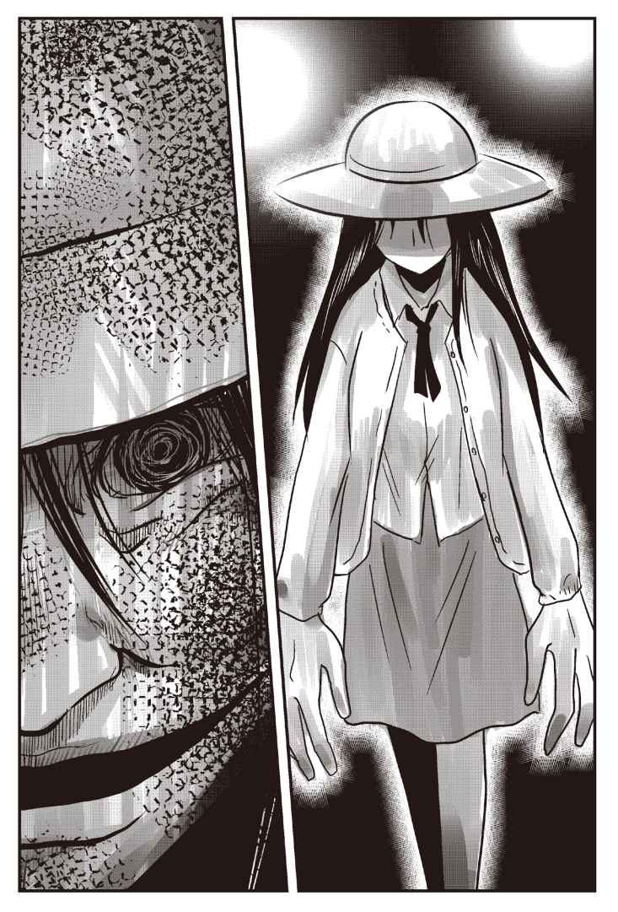
幽霊でもない、ただの普通の人間に見えたのに、それは本当に恐ろしかった。その女性が、ターゲットを私に移したことが、理由もなく理解できた。
「ひ、ひいいいい!! 」
私は叫び、必死に逃げる。彼女の手が私を摑もうと伸びる。私は体勢を崩していたのが幸いし、その手は空を切る。
あれに触られたらやばい......！
そう直感する、魂で理解する。だが体勢を崩している、うまく走れない。この時、せめてこれが夢だと自分自身で理解できていたなら......明晰夢の状態なら、まだなんとかなったかもしれない。だが、そのときはそんな自覚もなかった。ただただ恐怖が私の心中を占めていた。
くすくすくすくす、と女が笑う。顔の造りそのものは端正とも言えるのに、ただただ醜悪で不快な笑みに歪んでいた。そして女の手が私に伸びる。
「うわああああああああああああああ!! 」
私は絶叫をあげる。その手が触れたとき、私は死ぬ──そう思った瞬間、
女の身体が横に跳ねた。
「わああああ!! 」
そして私は飛び起きた。以前、怒りながら飛び起きた経験があるが、漫画のように恐怖で叫びながら飛び起きたというのは初めてだった。
心臓が激しく鳴っていた。
「............ふぅ」
大きく息をつく。ようやく気持ちが落ち着いてきた。大丈夫、ただの夢だ。少なくとも、今、自分は無事である。
しかし、本当に恐ろしい夢だった。理屈では説明できない恐怖。本当に何だったのか。
前に、法術師の吉田先生に聞いたことがある。普通の夢は問題ないが、夢の領域に深く深く入り込んだ場合、夢の出来事は肉体に、魂に影響を及ぼす場合がある、と。
それが本当なら......もしかしなくても、本当に危険だったのではないだろうか、あれは。
そう思いだしていると、ふと気づく。なぜあの女は、私を摑む直前に飛び跳ねたのか。思いだそうと頭を巡らせていると......
女が横に跳ねたとき、何かがぶつかっていたような、そんな気がする。黒い何かが猛スピードで横からあの女に衝突し、そのおかげで間一髪で悪夢から覚めることができたような......。
しばらくして、幽体離脱が起きたので、千織を探して聞いてみた。
「さあ、何のことやら」
そう千織は言うが、私は確信していた。あのとき助けてくれたのだと。
あの夜、起きた後で顔を洗おうとして洗面所に行く途中で気づいたのだ。
千織の人形が、なぜか転がっていたことに。
まさかの（笑）仕事の依頼が来る
そしてそんな折......
旅行中に、携帯電話がなる。
「はい、もしもし......」
「あ、十凪様の携帯でよろしいでしょうか」
「はい、そうですが。お金ならありませんし、両親も弟も死んでいます」
素直に私はそう答える。実際には家族はご存命なのだが、オレオレ詐欺を警戒してである。
だが、電話先の女性はこう言った。
「いえ、そうではなくて......先日、漫画家募集の件でご応募いただきましたよね。それで十凪さんに仕事をお願いしようと思いまして......」
「ぼく知ってるよ、そうやってＡＴＭ操作させたり、登録料としてお金ふんだくるんだよね」
「違います」
違ったようである。
......まさかの仕事の依頼であった。学習漫画の単行本の作画。これは大きい。しかも学習漫画ということは、世間的にもまっとうな、顔向けできる仕事ではないか！
これも座敷わらしの後押しがあってのことなのだろうか。きっとそうに違いない、と私は思った。その後、その会社とは定期的なつき合いをさせていただいており、学習漫画の仕事もその一度きりではなかった。それ以外にも、ｗｅｂ連載の仕事の話が来たり、明らかに前よりも仕事は順調に進むようになった。相変わらず企画が没 になったりは続くものの、次々と新しい仕事はとれるようになった。
私と一緒に祈願祭に行った仲間と作っているゲームのほうも、順調に知名度と実績を伸ばし始めた。
そう、もう小麦粉を水に溶かして焼いて、ソースをかけて食べて糊 口 をしのぐような生活ではなくなったのだ。
その仕事の話を実家の両親にすると、とても喜んでくれた。それはそうだろう。その日暮らしの浮き草稼業で明日の保証も何もない、そんなヤクザな人生を送っている無職同然の三十代の息子が、仕事はちゃんとできてるよ、と連絡をよこしたのだ。私が両親の立場でも喜ぶ。
人間関係も良好になっていった。仕事仲間も増え、一方では、かつてオカルト・スピリチュアル関係で知り合った人たちの中の「少し変な人」とは距離を置けるようになり、そのまま関係は消滅した。
良縁を引き寄せ、悪縁を絶つ、とでもいうのだろうか。実に不思議なものだった。
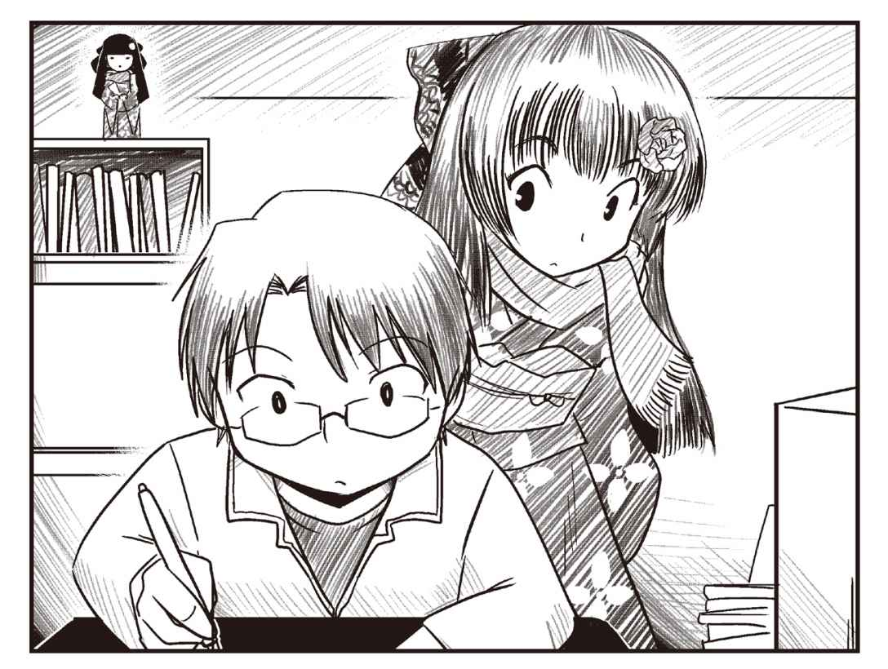
良縁を引き寄せ、悪縁を絶つ
そして不思議と言えば......。
私は、すでにおわかりのようにオカルトなものが大好きで、創作の資料にするためにいろいろと調べ、集めていた。そんなときのことだ。私は作家仲間の都築さんが主催する、創作者たちの飲み会に行くために東京を訪れていたとき、時間が少し早かったので本屋に行った。そこで、とある本と出会ったのだ。
それは、前々より私がオカルトに対して考えているものと同じ考えが書かれていた。そして面白いことに、その著者が住んでいる場所、道場を開き門下生を募集している場所が、ちょうど長野だったのだ。私はゲーム制作のためにＣ氏たちに長野に拉致され、泊まったり通ったりしている。これはちょうどいいではないか。
そう思い、その著者......人知学研究会の吉田先生の所に連絡を入れ、「法術」を学ぶことになったのである。ちなみに、今回記載する「座敷わらしを手に入れる方法 」（参照） もその法術からのものである。
改めてここまで書き記してみると、確かに「この座敷わらしを手に入れてから、宝くじが当たり三億円ゲット！ その金目当ての彼女が寄ってくるわ、初めて見る親戚などに囲まれて人生ウハウハです」のようなことはないにしても、私の人生は好転している。この怒 濤 の変化に、よくついていけたものだと自分ながらに思う。
私の夢の中の住人たち
「ていうかー、今までがちょっとあれだったと思うんだよねー」
夢の世界で千織が言う。
「むしろ、よくなんとかなってきたと思うよ、ギリギリの綱渡り人生だったし」
「まあ、確かにそうだなー......」
行き当たりばったりの計画性ゼロの人生で、よくこれまで生きてこれたものだ。そう、舞い散る桜を見ながら思う。
この夢の世界......法術の教えでは幽 世 という「心の世界」では、今、桜が満開だ。しかし、現実の花見スポットのように、花見客ですし詰め......ということはない。絶景を独り占めである。厳密には、他にもこの桜を見に来ている者たちはいたのだが。
私の心の世界である以上、彼らもまた私の心の世界の住人である。しかし、心理学者ユングは「人の意識は水面下の集合無意識でつながっている」と言い、法術の世界でも「死者の記憶の世界、常世 と幽世は繋がっている」とも言う。つまりは、完全に私の脳内世界でしかない、というわけではないという解釈もあるのだ。
たとえば、すぐそこで酒樽を「前足で」担いで、「直立で二足歩行」している馬とか。子供向けアニメのように擬人化デザインされたようなものではなく、完璧に現実の馬そのものが直立二足歩行している姿は、ありえなさすぎてもはやどう反応していいかわからない。これを私が私だけで想像したというのなら自分自身の想像力に脱帽する。それに、自分が想像しただけならその光景に驚いたりすることもないだろうし。
他にも、あからさまにどこかで見たことあるようないわゆる妖怪もいれば、私が飼っている犬型のペットロボットや、テレビＣＭにも出ていたとてもウザいしゃべりの「Ｐｅｐｐｅｒ 」までいたりする。幽世、という言葉の響きからしてこの手のロボットはいそうにないように思えるのだが、実際にいるのは不思議である。
『つまりそれだけ僕のことが大好きなんですねー、てれなくてもいいですよ』
いかにもロボロボしい抑揚で身振り手振りで言ってくるこのロボットは実にうざかった。しかし決してそこまで不快でもないあたりが本当にうざいのである。
『ツンデレというやつですか』
やかましい。
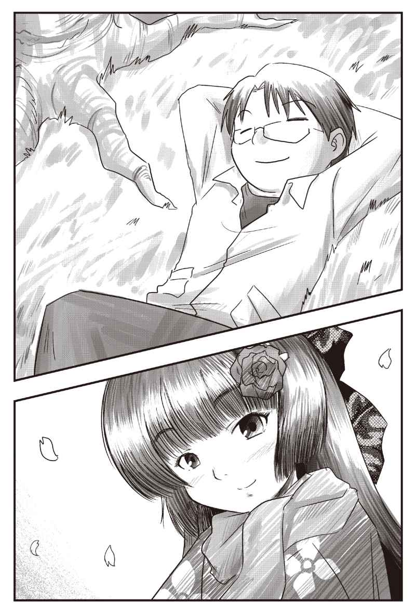
そんな中、おそらくは、千織の兄弟姉妹たちであろうか。座敷わらしらしき者たちもいた。
見覚えのある連中もいる。流れる小川で釣りをしている、魚を持っているのは間違いなくタガマヤ村のがきんちょどもだろう。奴らには一度復讐したかったのだ。
「どこに行くんだ？」
千織が言う。
「ちょっと復讐に」
そう言いながら適当な棒を拾って川辺へと向かう私。ああ、前もって言っておくと平和主義な私は、別段この棒で彼らを殴る、叩く、どつくの残虐行為的暴力を行うつもりは微 塵 もない。ただ、せめてもの復讐として川に飛び込んで棒で水を叩きまくり、彼らの釣りの邪魔をするというささやかで可愛らしい復讐をしたいだけである。
その上で彼らの釣果を奪い取り、口の中につっこんで正当な仕返しができるならば、なおのこと良いだろう。
そして私は、現実では不可能な大ジャンプをして川に飛び込み──
川の中から現れたくまモンに殴り飛ばされた。
嗚 呼 、見誤っていたのだ。あの川で釣りをしている座敷わらしの中に、タガマヤ村の連中だけでなく、生寿苑のケシ坊主もいたということに気づかなかった私の落ち度であった。
その後、私は何度も何度もくまモンにお手玉にされた。これが現実なら確実に私は死んでいただろう。夢の中なので、痛みはほとんどなく、ただただ衝撃に振り回されていたというのは、果たして幸運なのか不幸なのか。
「おかえりー」
「......ただ...い......ま......」
その後、なんとか逃げだし、千織の元まで這いずって戻る。息も絶え絶えでなんとか返答を返す私だった。
見えない後押し
「......ふう」
しかし、考えると不思議なものだ。ふとしたきっかけから、ここまで人生とは変わるものなのか。それは他の人たちから見たら、ささやかな変化かもしれないが、私にとっては生まれ変わったにも等しい出来事だ。
物理的に困窮しなくなり、仕事が増えた。
友達、仲間も増え、そして幽体離脱などもできるようになり、オカルトの......秘められた世界の師や兄弟子もできた。そういった世界は、ほんの少し前までは文字通り幻想の彼方だったというのに、今では肌で実感できる。
それは、すべては......
「お前が頑張ってきたからだぞ、だからだ」
座敷わらしは、千織はそう言う。
だけど、それだけではない。何かの見えない力、見えない流れの後押しのようなものを私は感じていた。
「人事を尽くして天命を待つ」
「天は自らを助ける者のみを助ける」
法術の師、吉田先生がよく言う言葉であり、それは本当にそうだと思う。
全力を尽くしたとき、そこには何かの因果の流れがあり、手を引いてくれる、後押ししてくれる。私の場合、それが座敷わらしだったのだ。
仲間たちが手にした座敷わらしと、その後
座敷わらしを手にしたことで、どんな幸せが得られたか......。
私の体験だけでは、スタートが極貧の漫画家であるため、頼りないと思われる読者のために、私の仲間の体験も紹介しましょう。
私が「千織」をいただいた翌年、一緒に旅をしてきた都築さん、Ｃ氏＆ＵＧ氏、Ｏ氏、そして大渡さんの四人が座敷わらし人形をいただけることとなった。
年に十体しか作られない人形のうち、四体を我々が独占してしまうのは、いささか後ろめたい気持ちもあったものの、正式に予約したものなのだから問題はない。
ちなみに五人なのに「四人」としているのは、本来はＣ氏とＵＧ氏もそれぞれいただける予定だったのだが、彼らはルームシェアしているので、同じ部屋に二つあっても仕方ないだろう......と、辞退して別の方にひとつ権利を譲ることにしたのである。
受付で初穂料を渡し、本殿へと入る。すでに座敷わらし人形をもらっている私は、里帰りさせた千織を預けて、皆が座っている本殿の床に腰を下ろす。
しかし、そわそわする。前回と違い、すでにいただいているのにこのそわそわ感は何だろう。そう思っている間にも、参加者から預かった人形を宮司さんたちが並べていく。
ああ、そうか。
その光景を見て、私は自分のこのそわそわ感が何なのか思い至った。
「自分の娘がどこにいるか探す、授業参観や発表会の父兄の気持ちだ」
「十凪さんが妙な父性に目覚めた!? 」
目覚めてしまったものは仕方ない。きっと他の人たちも、こう思っているのだろう。
「やはり自分のところの子が一番かわいいわ......」
「わかったから写真撮ろうとするのやめましょう十凪さん、ここ撮影禁止っすから」
撮影禁止ならしょうがない。
かくして、私の父性の目覚めをよそに、今年も儀式が始まる。
そして儀式はつつがなく終了し、それぞれが座敷わらし人形をいただいていく。私も、預けていた千織を受け取った。
外に出ると、テレビ局の取材も来ていた。私のところにはカメラが来なかったが、もし来たら千織のかわいさについてたっぷり語ってやりたかったのに残念である。
「十凪さんが完全にパパになってる......」
「いずれ貴様らも通る道だと思うので安心してください、パパ友よ」
「これっぽっちも安心できない！」
「あんたドール趣味に足を踏み入れて帰ってこれなくなった人たちと同じ目をしてます」
失敬な。私は彼らのように「一人じゃ寂しいでしょうからお友達をたくさんお迎えしましょうね」と言って次々と人形をお迎えしたり、パーツや衣服をバージョンアップさせたりなどしていない。そもそも座敷わらし人形の仕様からして無理である。せいぜいが人形用のマフラーを買ってあげるぐらいだ。
ともあれ、祈願祭が終わっても、これでおしまい、はい撤収、というわけではなく、祭りの参列者たちの各々が集まって話したり、その後の直 会 などがある。
ただ今回は日程上、前回のように社務所に上がらせてもらい直会に参加させてもらうことはできなかった。この日にはもう戻らなければいけなかったからだ。
お礼を言い、また来年に来ることを約束し、我々は遠野を後にする。
名前が、ざしきわら子？
帰りの車内にて、都築先生が口を開く。
「決めました」
「何をですか？」
「名前です、座敷わらしの」
「都築先生、楽しみにしてましたからねえ。で、何とつけるのです？」
彼は自信満々に言った。
「ざしきわら子です」
あやうく事故るとこだった。
「なに考えてんですか、あんたは」
「かわいいでしょう」
「そうですか......？」
本気で言っているのか、それともギャグで言ってるのかよくわからない。だがしかし、他人様のご家庭のことにいちいち口を出すわけにもいかないだろう。
私たちは彼の意志を尊重したのだが......。
その瞬間、おそろしいことが起きたのである。
それは都築先生の体験談にて、後日談も含めて自身で語っていただくことにしよう。
一方、ＵＧ氏・Ｃ氏だが、彼らが座敷わらしを迎えてから、ＵＧ氏の遺産相続問題のゴタゴタも一気に解決したのだ。
彼は本来なら、「売れそうにもない岩手の僻 地 の小さい土地を押し付けられ、相続税と固定資産税だけを支払っていく」はずだったのだが、今回の件の後、トントン拍子に話が動き、最終的に二〇〇万円の分配を手にすることになった。もちろんこれらもすべては、関わった皆が解決に向けて頑張った結果なのだが、それにしても「何かの後押し」があったように思えてならなかった。
座敷わらし人形「福ちゃん」のご利 益 報告──都築隆広
私は遠野の早池峯神社祈願祭に三年通い、座敷わらし人形をＧＥＴできました。
で、ご利益があったかなんか書けと十凪先生に言われて、今、この原稿をしたためているわけです。
とはいえ、「マンガを描くの大変だから、字を書きたい」とか言いながら、その半年後に「座敷わらし本の企画が出版社に通りました！」と言ってきた十凪先生自体が、座敷わらし人形のご利益以外、なにものでもない気がするんですが、気のせいでしょうか？
ざしきわら子事件
まず、お人形をいただいて、皆さん、名前をつけて、ご自分の子供のように可愛がるんだそうです。そこで、帰りの車の中で「よし！ お前は今日から〝ざしきわら子〟だ！」と命名したところ、十凪先生がドン引きしました。
「せめて、自分の娘に名前をつけるような気持ちで命名してあげてくださいよ」
と彼が言うのです。
自身のネーミングセンスをなじられた私は「何をいってるか！」と反論しました。
「私は自分に娘が生まれても〝ざしきわら子〟と名付けるぜ！」
すると、人形の顔に陰がさし、漫画「ちびまる子ちゃん」に出てくる野口さんのように、線の入ったドン引き顔を見せつけてくれました。私はオカルトを愛するあまり、スピリチュアル的な現象はほとんどまやかしと切り捨てる、否定派ツンデレ・リアリストであります。
でも、人形はドン引きしてました。ハイ、確かに。
すると、まさにその瞬間でした。携帯がポケットの中で震えてメールの受信を知らせています。それは、仕事で応募していたコンペに残念ながら落選したという内容でした。
「なんでやっ!? 人形をもらった途端、不幸になっとるがな！」
「あ あ。名前が気に入らなかったんですよお」
「〝ざしきわら子〟じゃダメなの!? 」
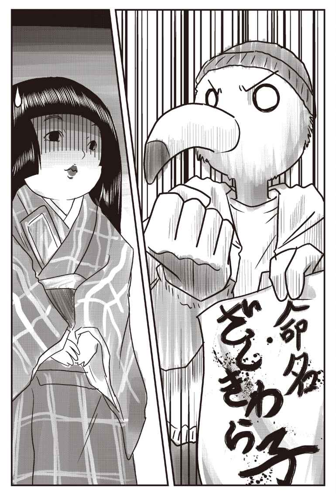
十凪先生に散々、ダメ出しをされてしまいました。
そこで、後日、五つの候補名を紙に書いて、なんとなく置くと、人形が指さしていた名前が「福」だったので、名前は「福ちゃん」に決まりました。
すると、人形の顔が「にぱ 」と笑ったように見えたので、「現金だな、オイ」と思いました。
さてさて、どうなることやら......？
座敷わらしのご利益
実際にご利益はありました。
これは人形をもらってからというより、早池峰に通い出すようになっての三年間ですが、軽自動車も買いましたし、パソコンもいいのに買い換えました。十何年ぶりに彼女もできました（三か月で振られました）。
収入面でいえば、私の年収は座敷わらし人形を受け取ってから、三倍以上に膨れ上がったのです。
そう書くと、一 攫 千 金 をなしたようですが、私の以前の年収って、三十代のくせして百万円ぐらいだったので、雑誌『ＳＰＡ！』の見出しによくあるような「年収３００万円ワーキングプアサラリーマンが生き抜く方法」みたいなライフスタイルに、やっと並んだ感があります。『ＳＰＡ！』読むぞ！
それも高齢の親族が亡くなって、アパートをまるまる一軒、相続したことによって増えた収入でした。なにこれ、「猿の手（※） 」......なんていうホラーな話ではありません。
※「猿の手」......願いを叶えるかわりに大変なことになる「猿の手」というアイテムにまつわる怪談。
お人形をいただく前から親族は高齢のため、アパートを私が継ぐ話になっていました。親族が亡くなったのは悲しいですから、ご利益というかは微妙なところでしょう。
とはいえ、収入が増えただけではなく、仕事も増えました。
ただ、座敷わらしこと福ちゃんは子供の神様だけあって、ここら辺のご利益が実にアバウトです。
というのも、私は作家として売れっ子になりたいのですが、構成作家や脚本家など映像媒体の台本の仕事でスケジュールが埋まるようになりました。生まれて初めてサインした印税契約書もＤＶＤの脚本家印税でした。喜ばしいことなんだけど、自分が構成作家になるとは考えていなかったので、驚きを隠せません。
「良かったねえ！ 収入が三倍になって、仕事がいっぱいで、なんか、よくわからない契約書にもサインで 」
と、福ちゃんの声が聞こえてきそうです。確かに、子供の神様なんだから、大人の仕事の細かい違いなんて、よくわかりませんよね。
超アバウトっていうか、ご利益が変化球だな！ 福ちゃん。
福ちゃんと超常現象
福ちゃんも神秘の座敷わらし人形なので、当然、超常現象だって起こせちゃいます。
たまに夢に出てくるので、めっさコミュニケーションはとれるんです。
夢には超明るい子が出てきます。ちなみに、一時期、友達の座敷わらし人形も預かっていたので、その子も一緒に夢に出てきました。そっちはギャル風でした。ギャル童子 とは、また現代的ですね！
私の寝とぼけた夢の話はともかく、福ちゃんがめっさワイルドなところは、ポルターガイスト現象を起こして、自己アピールしてくるところです。隣室の台所のシンクに置いたものを落としたり、ペンを弾き飛ばしたり、ドラ焼きをひっくり返したり。とても霊体の座敷わらしが行っているとは思えない、激しい自己主張です。
しかし、科学的に考えてみることもできましょう。
台所のシンクに置いたものが落ちるのは、冷蔵庫のモーターによって引き起こされる振動現象かも知れません。ペンが弾け飛んだり、ドラ焼きがひっくり返るのは執筆中、スピーカーから大音量でアニソン（アニメソング）がかかっていますから、その振動が原因だと考えられます。ドラ焼きをひっくり返せる、アニソンの振動というのも、凄 まじい気もしますが......。
また、福ちゃんはテレビと向かい合わせて飾っているので、普段はおとなしく、テレビを観ているかのように見えます。
深夜アニメなどはにこやかに観ている彼女です。しかし、ホラー映画は苦手らしく、恐怖感ＭＡＸの場面でテレビの電源を落とされてしまいます。事情を知らない友人は、「なんだ!? 」とビックリしていました。
「いや、福ちゃんはホラーが嫌いだから......」
「何をいってるんだ!? お前！」
説明しようとしたら、精神状態を疑われました。そりゃそうですね。
たぶん、うちのテレビが、買い換え時なのかも知れません。
（追伸）
......以上のくだりをオチにしようと、この原稿をしたためていたところ、企画書を渡していた出版社から電話がかかってまいりました。
なんでも、ボツにされていた私の企画書がテーブルに置きっぱなしになっていて（その会社もひどいな！）、そこにたまたま編集長が通りがかって拾い読んだんだそうです。
「編集長が『面白いやないけ！ 電話しろや！』と言うので。いえ、私としては、本当によくわかんないんですけど......」
と、担当さんもなんだか狐 につままれたような口調で、首をひねっていました（見えないけど）。
ご利益のアバウトさを嘆いた途端、この展開。今時、マンガでもなかなかないようなエピソードじゃありません？ 福ちゃんはやっぱり、仕事がはええです。
名前を「座敷わら子」にしなくて、本当に良かったと思いました。
座敷わらしとは何なのだろうか
座敷わらしは「幸せの波動」
これまで座敷わらしを巡る旅をし、幸いにも座敷わらしを手に入れることができた。座敷わらしを見た、感じたというたくさんの人の話も伺った。ここで改めて考えてみたい。
感じられていたそれらは何なのであろうか。
座敷わらしとは何であろうか。
その存在について熟考することは大切である、と思う。
なぜなら、この本を読む方は、これから座敷わらしを手に入れるのだ。
養子を迎え入れるときに、その子について調べ、考えることをしない親はいないだろう。それと同じだ。あなたが迎え入れることになる座敷わらしについて知識を深め、その存在に思いを馳せるのは決して無駄ではないのだから。
一説には、その家の祖先の霊だという。
一説には、よそから渡り歩いてきた客人 神 だという。
一説には、家の下に埋めた金の珠の化身だという。
また一説には、潰した子供の霊だという。
東北地方では、昔、飢饉などで多くの人々が餓えに苦しんだとき、口減らしのために仕方なく赤子を殺 めたという。座敷わらしは、その霊ではないかという説もある。
そして一説には、子供を封じて縛り、守り神とした呪術だともいう。
城を造るとき、あるいは大雨などで決壊して大きな被害を出した堤防を修復するときなど、一部には人身御供のようなこともしたという。そんな守り神だとか。
多くの説が語られ、そして新たに考えられてすらいる。その答えを出すのは難しいだろう。
その起源はこの際おいておいて、いま現在の座敷わらしに共通することは、「家の者や見た者に幸せをもたらす」ことだ。
それは、さしずめ......『幸せをもたらす波動』ということになるのだろうか。
そしてその波動、あるいは念、磁場、場に刻まれた記憶、残存思念......それらに触れた者が、座敷わらしの伝説という知識を無意識下で結びつけ、投影して、子供の姿、気配をそこに見て、感じるのだろう。
そして、見て、感じることができれば、それは確かにいるのだ。そこに。そしてそれを見た者の心の中に。確かに。
座敷わらしを見た者が幸せになるというのは、つまるところ、その力に感応して共鳴したことにより、幸せの波動の力とでも呼べるものが一時的にその人のなかに満ちるのだと思う。
そしてそれは、幸せを引き寄せる。それはさまざまな形だろう。
しかしやはり、その力は一時的なものなのだ。だから、「座敷わらしは去る」と言われるのではないだろうか。
旅館で座敷わらしと出会ったとき、座敷わらしが客を気に入ったらその客についていく、しかしそのうち、また元いた宿に戻っていく......という話がある。それはまさに、そういうことなのだろう。
座敷わらしの幸せの波動、それは私が思うに、おそらくは宝くじの高額当選と同じものではないだろうか。
よく、宝くじで高額当選してしまったばかりに人生が狂った、という話を聞く。
確かにそうだ。降ってわいた大金数千万、数億円ものお金。そんなお金を......「幸せ」を急に手にしてしまえば、生活は変わるだろう。だが、お金は有限だ。使い切ってしまえばなくなってしまう。そしてなくなった後で、再び前の生活に戻れるならばそれでいい。
しかし、大金のある生活に慣れてしまえば、それが当然と思ってしまえば、その甘露の味を忘れることができなければ......後に残るのは「お金がない」という苦しみである。本当は、高額当選する前に戻っただけで、前と同じ程度のお金があり、前と同じ生活ができるとしても「お金がない」と思ってしまう。
そしてその苦しみに耐えられず借金をしてしまう......そんな無間地獄が待っているのかもしれない。
だが、大金がある状態を当然のことと思わず、謙虚に受け止め、自分自身を忘れずにいたならば......どうだろうか。
そう、結局のところ、幸せというものは自分の受け取り方によって変わる。......すべては心の在り方なのだ。
ゆえに、強欲にとりつかれなければ、正しい生き方を見失いさえしなければ、座敷わらしはいなくならないのだ。幸せは逃げて行かないのだ。
そう考えると、むしろ「座敷わらしを見たから幸せになる」のではないのかもしれない。順序が違うのだ。「幸せになれる心持ちの人間だからこそ、座敷わらしと共鳴し、見ることができる」 のではないだろうか？ 私はそう思うのだ。
幸せの波動は共鳴する
「類は友を呼ぶ」ということわざを聞いたことがあると思う。これは、霊的、スピリチュアル的に言って、真実である。
テレビやラジオの電波の周波数（波長）を合わせることでその番組を受信することができるように、すべてのものはその波長を共鳴させることで引き合うことができるという考え方がある。
人間は、似たような人間と知り合い、友達になっていく。性格が合わない人とはやはりどうしても疎遠となってしまうだろう。心当たりはあるのではないだろうか。
霊がとり憑いて悪いことが起きる、といわれる現象も、実は波動共鳴の法則が働いていると考えると、次のように説明できる。
悪いことを呼び寄せるような心......妬 みや怨 み、憎しみなどを発していると、やがてそれに同調しやすい波動......いわゆる「悪霊」と呼ばれる気、念が寄ってきて、とり憑かれるというのだ。そしてそれは一度お祓 いをしてもらったところで本人が変わらなければ、すぐにまた同じようにものにとり憑かれる。そして運勢がどんどん下がっていくのである。
逆に、人の幸せを心から祝い、願えるような人間にそういうものは寄ってこない。それどころか、同じような他人の幸せを願えるような人間、そしていい念や気、幸せの波動が寄ってくる。そしてその人や、その人を取り巻く周囲はどんどん、あらゆるものが好転していくのだ。
これは、もはや思想ではない。単純な因果律の法則なのだ。
そしてその法則は座敷わらしにも当てはまる。というよりも、座敷わらしこそが波動共鳴の法則そのもの、その体現だと言っていいだろう。
座敷わらしとは、「幸せの波動」そのものなのだ。
それに共鳴できる場所があり、それに共鳴できる人がいる。
見たから成功するのではない、成功する可能性を秘めた者だからこそ見られるのだ。
それが、『座敷わらし』なのだ。
......と、少なくとも、私はこれまでの体験からそう思うし、そう感じるのだ。
座敷わらしと貧乏神
知っている方もいるだろうが、座敷わらしとは決して「幸せだけをもたらす都合のいい存在」などではなかった。
一般的なイメージとして、座敷わらしは赤い着物やちゃんちゃんこの姿で想像されるが、赤い座敷わらしは「不吉の兆し」とも呼ばれていた。一方、白い座敷わらしは幸福の象徴である、とされていたという。
冒頭でも触れたが、『遠野物語』のなかにも、座敷わらしの姿が不幸の前兆だったという話がある。
ある村の男が村はずれの橋のところで、見慣れない二人の娘に会った。聞くと、山口某という旧家からやってきて、別の村に行くと言う。この二人の座敷わらしが出て行ってしまった後、その家の主人、下人の二十何人かがキノコの毒にあたって死んでしまったというのだ。
一家全滅、財産も残らず奪われ何もなくなったという。座敷わらしが去ることにより、このような不幸が訪れるというのだ。ここまで極端でなくとも、座敷わらしが出て行ったら家が傾いた、貧乏になった、火事になった、という話はほかでも聞く。なんということだ、これではまるで貧乏神ではないか！
貧乏神。言わずと知れた「この神が家にいると貧乏になる」という、はた迷惑な神様である。
だが、実は貧乏神にも次のような話も伝わっている。
昔々、働き者なのに貧乏な夫婦がいた。あるとき、その夫婦の家の神棚からみすぼらしい貧乏神が飛び出てきた。
その貧乏神は、夫婦があまりに真面目に働くので哀れに思い、自分は出て行こうとしたのだ。だが夫婦は、
「この寒い時期に外に出ては身体を壊して死んでしまうかもしれません。どうか私たちの家にいてください。貧乏神であろうと関係ありません、頼みますからいてください」
と言って、貧乏神に御供え物を毎日そなえて、真面目に頑張って働きつづけた。
気がつけば夫婦は金持ちになっていて、そして新しい家に住むことになった。
神棚に向かって、
「貧乏神様、新しい家に行きましょう」
と夫婦が言うと、神棚から出てきたのはなんとふくよかでりっぱな福の神だった。
「私はかつて貧乏神だったが、お前たちのおかげで福の神になれた。礼を言う。これからもいっしょにがんばろう」
大切にされたおかげで福の神になれた貧乏神は、そう言ったという。
......貧乏神とて、ただ悪くて迷惑な存在ではない、ということなのだろう。実際、世の中には、貧乏神を祀る神社まで存在するのだ。
幸せとは、何だろうか。この話を読むと、なかなか考えさせられるが、幸せとは、きっと心の問題なのだろう。
座敷わらしが家を滅ぼし不幸をもたらす、その一方で貧乏神が幸せを運んでくる。
「禍福は糾える縄のごとし」ということわざの通りだ。幸せと不幸は表裏一体。それは、感じる人の心によるものなのではないだろうか。
さて、少し話は変わるが、先の項にて座敷わらしの正体について簡単に述べさせていただいた。
座敷わらしが「潰された子の霊である」という話は、佐々木喜善の『奥州のザシキワラシの話』や荻原浩の『愛しの座敷わらし』、三浦哲郎の『ユタとふしぎな仲間たち』などでも言及されている。座敷わらしとは潰された「若葉の霊」である、と。なおこの若葉とは子供を置き換えたスラング、隠語であるようだ。
だが、よくよく調べてみると意外なことに、実は〝座敷わらしが祟る〟という話は昔から言われてきたことではないようだ。
座敷わらしを世に知らしめた『遠野物語』にも、先に述べたように座敷わらしが出て行き不幸になった話が書かれている。座敷わらしが出て行ったばかりに一家は全滅、家財のすべては奪われ、残された娘もまた死んだ、と。だが、「たったこれだけ」なのである。あとは土淵村の資産家の子供が、見かけた座敷わらしの尻を矢で射たところ、これに怒った座敷わらしは家を去り、家運が傾いた......という話ぐらいである。
後述する「座敷わらしの仲間」のノタリバコやコメツキワラシ、座敷小僧など、人に恐れられる座敷わらしの逸話も、家を滅ぼすようなものではない。子殺しや六 部 殺しという「風習の闇」の投影であり、「おのれの罪を忘れるな」と脅す、ただそれだけである。そこからさらに病や怪我の原因として結び付けられることもあるだろうが、家を滅ぼすようなものでもないのだ。
座敷わらしが出ていくと家が滅びる。これは前述した『遠野物語』の一編があまりにも有名であり、それゆえ後からさまざまな逸話と組み合わされ生み出された、都市伝説（フォークロア）ではないだろうか。座敷わらしは、家人を驚かし、怯えさせるものではあるが、祟るものではなかった。
いずれにせよ、研究者たちの解釈と伝聞によって、「座敷わらしは祟る、出て行くと不幸になり家を滅ぼす」という性質が独り歩きをはじめ、まことしやかに囁かれるようになっていったのだろう。
では、「本来は祟らないものだから安心だ」となるのだろうか。残念ながらそうではない。我々の心には「座敷わらしに出て行かれると不幸になる」ということがすでに共通認識として刷り込まれている。一家全滅は当たり前である、などと極端な認識にはならずとも、座敷わらしが不幸の兆しでもあるということは変わりようがない。いや、もしかしたらこれから少しずつ変わっていくのかもしれないが......。
座敷わらしが不幸を呼ばないために
では、どうすれば、座敷わらしが不幸の兆しとならないかを考えてみよう。
座敷わらしを閉じ込め逃がさないようにすればいい、と思った人は不幸な人である。そのような他者を束縛することでしか幸せを感じることができないからだ。そう言われて立腹されるのもわかるが、まずは、そのような考えを捨て去れるような自分に変わることから始めなければならないだろう。
そう、変わればいいのだ。不幸を不幸と感じず、感じたとしてもそれを幸せへの第一歩だと感じられるような、ポジティヴな人間へと。
古今東西で言われていることである。「笑う門には福来る」「失敗は成功の母」と。ポジティヴな思考は成功を引き寄せる。これらは事実であるのだから。
そして、座敷わらしに愛されるような人間へと変わろう。そうなれば、幸せはあちらのほうからやってくる。
それこそが、幸せの波動の共鳴である。
あなたのそばにいる座敷わらしの仲間
このように座敷わらしのことを考え、民話を巡り、座敷わらしによく似た神、妖怪を調べてみると、座敷わらしによく似た神は東北だけではなく、北海道から沖縄まで全国にわたって存在することがわかった。それどころか、スコットランドの「ブラウニー」やロシアの「ドモヴォーイ」など海外にすらたくさん存在するのだ。
では、私が考える全国の座敷わらしの仲間について紹介しよう。
【アイヌカイセイ】 （北海道）
アイヌ民話に伝わる妖怪。ぼろぼろのアットシ（木皮の繊維製の衣服）を身に纏 い、空家や古い家などに現れる。
人が眠っていると、胸や首を押し付けて苦しめるという。
カイセイとは死骸を意味し、アイヌの亡霊であるといわれている。
【ノタリバコ、コメツキワラシ】 （岩手県）
座敷わらしの中でも下等な部類であると言われている。ノタリバコは、内土間から這い出て座敷を這い回るという。コメツキワラシは、臼 を搗 くような音をたてたりと、気味の悪い振る舞いをするといわれている。
幸福を運んでくる、という座敷わらしの同類にしては、そのような話はあまり語られておらず、むしろ気味が悪い、恐ろしいものとされている。実害があまりないのにおそれられている理由としては、彼らが子減らしのため殺された子の亡霊とされているからではないだろうか。
親たちの罪悪感が生み出した幻想であるならば、確かに実害がなくとも恐ろしいものであろう。
【ちょうぴらこ】 （岩手県ほか）
座敷わらしにはいくつもの種類があるとされているが、その中で「もっとも美しく、色が白い、最高級の座敷わらし」とされるもの、それがちょうぴらこである。
衣服も豪華な振袖を着ており、常に奥座敷にいるとされ、他の座敷わらしよりもお目にかかる機会が少ないとされている。
【オシラサマ】 （青森県・岩手県）
東北地方、特に青森・岩手県に伝わる家の神にして、蚕の神、農業の神、馬の神である。
桑などの木で彫られた人形に多数の布衣を重ねて作られた人形が御神体とされ、家庭の神棚や床の間に飾られ祀られていることが多い。
その由来には諸説があるが、最も有名なのは「馬と娘の恋物語」であろう。
その昔、農家の娘が飼い馬と恋に落ちたといい、それに激怒した父親が馬の首を切り落とし殺したところ、馬の首と娘はそのまま天に昇り神になった、というものだ。
それ故に農業の神、馬の神とされる。ならばなぜ蚕の神なのか。それは残された父親のために娘が残したのが蚕であり、それを育てることで家が栄えたからだという話がある。
この逸話から、オシラサマの御神体の人形は、女顔と馬顔の二体セットの夫婦人形として祀られることが多い。
佐々木喜善氏がその著書の表題に並べるほどに、座敷わらしとオシラサマには共通点がある。
家を守る神であり、子供が好きでよく子供たちの遊びの輪に入る、託宣をする、田植えなどを手伝う......東北の童形の神は多くのこういった共通点があるとされるが、特に座敷わらしとオシラサマは似通っている。
また、一度祀り、拝み始めるとずっと祀りつづけなければ、顔が歪んでしまうなどの祟りがあるとされる。これもまた、座敷わらしとの共通点のように見受けられる。
「遠野伝承園」という遠野市の野外博物館には、おしら堂と呼ばれる屋敷があり、曲り家の奥の細くて薄暗い廊下を抜けると、六畳程の小さなお堂があり、そこには千を超えるオシラサマが展示されている。肉眼で実際に見る、四方の壁を覆い尽くすように飾られた千体のオシラサマはまさに圧巻の一言であり、多くの人達がそこのオシラサマに願いを奉げている。
【座敷坊主】 （静岡県）
静岡県から愛知県へ流れる天竜川の中流の山奥に門 谷 という村があり、そこに現れたという。
遠江国周智郡奥山村（現浜松市水窪町） 字門谷の親方という家に五、六歳の姿で出たといわれ、襲い掛かってくる部屋があるという。
眠っている人の枕を返したり、布団の上に乗って眠れなくしてくるともいわれている。
猪 用の落とし穴に落ちて死んだ大金を持った者とか、そこに落とされ殺された金持ちの盲人とかが怨霊となり、座敷坊主になったという話もある。
【座敷小僧】 （愛知県）
岩手でも座敷わらしを座敷小僧と呼ぶこともあるが、愛知のほうでは多少趣 が異なる。
富をもたらす、というよりも、富のある家に現れて祟 り・障 りをなす怪異という側面のほうが強いかもしれない。
日本各地には、「六部殺し」と呼ばれる民話・怪談が伝わっている。「ある農家が旅の六部（巡礼僧）を殺して金品を奪い、それを元手にして財を成したが、生まれた子供が六部の生まれ変わりでかつての犯行を断罪する」という話だが、佐々木喜善氏の著書には座敷わらしの伝説と六部殺しの伝説が結びついて座敷小僧になったのではないか、という説も書かれている。
確かに、余所から現れて新しい金品や血をもたらすまれびと信仰は座敷わらしの話とも結びつきやすいのかもしれない。そしてまれびと殺しは「殺したまれびとの財産」という幸福と、「殺したまれびとの祟り」という不幸をもたらすのだから。
【仙台四郎】 （宮城県）
仙台四郎とは、座敷わらしではなく実在の人物である。江戸時代末から明治時代にかけて、現在の宮城県仙台市に実在した人物である。
だが、仙台の座敷わらしと呼ばれ、彼が訪れる店は繁盛すると存命中から各地でもてなされた。没後、商売繁盛のご利益がある福の神として彼の写真を飾る店が見られるようになった。
四郎は知的障碍者であり、生まれつきだという説と、七歳のとき花火見物中に誤って広瀬川に転落して溺れて意識不明となり、それが原因だという説がある。
その後、四郎は気ままに市中を歩き回るようになり、行く先々で食べ物や金品をもらったりしていたそうである。
言葉は「ばあや、ばあやん」などとしか話せなかったそうだが、彼は人に危害を及ぼすことはなく、愛嬌のある風貌でいつも笑い、子供たちにも優しくしていたので、人々から愛されたという。
不思議と彼が立ち寄る店は繁盛し人が集まるようになったため、福の神だ、座敷わらしだと呼ばれ、どこに行っても無料でもてなされたという。
その実情としては、彼が無料で飲み食いした店には、後で四郎の家の者が行き、その代金を支払っていた、ということである。
だが、その一方で彼は気に入らない店にはどんなに頼まれても決して入らなかった。そういった彼の感性を信じ、彼が行かない店には自分も行かない、という人たちもいたという。なるほど、気に入ったところに福をもたらし、気に入らないところには不幸が来る。まさに座敷わらしである。
今でも彼は、仙台の人たちに愛され続けている。仙台の座敷わらしとして、ずっと。
【長 壁 姫 】 （兵庫県）
姫路城の天守に隠れ住み、年に一度だけ城主と会い、城の運命を告げていたとされる妖怪、神。江戸時代の怪談集『諸国百物語』（著者不詳） によれば、住処に人が立ち入ると、一丈 （約三メートル）もの身長に巨大化して追い払ったという、人間嫌いの妖怪。
「長壁姫の正体は老いた妖狐である」「井上内親王が義理の息子である他部 親王との間に産んだ不義の子である」「伏見天皇が寵 愛 した女房の霊である」「姫路城のある姫山の神である」などの諸説があり、その来歴は、姫路城が建つ姫山にある刑部 大神などの神社がその名の由来とされている。実はこの祭神が誰なのか、男神か女神かすら不明であった。だが、やがてその神は姫路城を守る神とされるようになり、城主の行い如何 によっては祟り、不幸をもたらすと考えられるようになった。実際に城の改修のときに、祟りとおぼしき怪異が起きたという。
城を守る神であり、城主の行い次第では不幸を呼ぶとされるその在り方は、非常に座敷わらしに近いものがある。家のために潰された座敷わらし同様、彼女もまた城のために潰された姫の霊であるという説からもその共通点がうかがえる。
あるいは、彼女こそが「さまざまな座敷わらしの中でも最高級の、最も美しい座敷わらし」と呼ばれる「ちょうぴらこ」ではないだろうか。
年に一度しか姿を現さないというのは、全国各地を遊び歩いているからかもしれない......。
【赤しゃぐま】 （四国地方）
四国の裕福な旧家に住む座敷わらしの一種であるという。赤髪で、体が赤い子供の姿をしている。あるいは赤熊の毛皮をかぶった子供の姿であるともいう。
夜に仏壇などから出現し、台所の残飯を喰ったり、座敷で騒いだり、寝ている人をくすぐったりするという。座敷わらしと同様に家に福をもたらす存在で、赤しゃぐまが住み着いた家は繁栄し、出て行ってしまうと没落するといわれたそうである。
香川県の伝承には、「山の尾が寄り合って谷川の流れが渕になっている所では赤しゃぐまという妖怪が出る。とてつもなく大きな声を出して大空を飛ぶので振り返って見ると大きな歯をむき出しにして笑っている」
などと伝わっている。
愛媛県の伝承ではこのようなものもある。明治二十三年（１８９０） のものとされるのだが、市ノ川鉱山にとある技師長がいて、家を新 居 郡神戸 村の見晴らしのよい丘陵に建てようとすると、その土地からたくさんの人骨や土器が出たという。人々は墓地だと噂したが、彼は平気で工事を進めたという。家が建った後、あの家には赤しゃぐまが出ると噂された、というのだ。
死者を埋めた家に座敷わらしの仲間である赤しゃぐまが出るというのは、子を潰して遺体を埋めた家に座敷わらしが出るという伝承と類似していて面白いではないか。
【オショボ】 （香川県）
髪をしょぼしょぼ垂らしたおかっぱ頭の童女で、座敷わらしの一種である。他の座敷わらし同様、いなくなると没落するといわれている。
【キジムナー】 （沖縄県）
アカガンダァ、ナガヤァ、キジムンなどの異名でも呼ばれる、赤髪赤肌の子供のような精霊である。
ガジュマル（幸せを呼ぶ樹とも呼ばれる）を住処とし、ガジュマルの精霊とされる。沖縄では大木に宿る精霊をキーヌシーといい、これを擬人化したものがキジムナーだという。
魚介類を主食とし、とくに魚の左の目玉が大好きであり、目玉だけがない魚の死骸があったら、それはキジムナーの食べ残しである、と伝えられている。
また、人間の船に同乗して共同で漁を行うとも伝えられ、作業の手伝いをして褒美にご馳走をいただく、夕食時にはかまどの火を借りに来る、年の瀬は一緒に過ごしに来る......など、人間との距離は中々に近しい。キジムナーとともに漁をすると、たちどころに船があふれるほど魚が捕れるというが、前述のようにキジムナーは好物の魚の目玉を食べるので、捕れた魚は必ず片目がないという。
このように沖縄の人々のよき隣人であるが、住処の古木を切ったり、キジムナーを虐げたりすると、家畜を全滅させたり海で船を沈めて溺死させるなど、一たび恨みを買えば徹底的に祟られる。またそのほかにも、赤土を赤飯に見せかけて食べさせる、木の洞など到底入り込めないような狭い場所に人間を閉じ込める、寝ている人を押さえつける、夜道で灯りを奪うなどのいたずらを働くともいう。
人間にいたずらをするという点や、キジムナーに気に入られた家は栄え、反対に嫌われた家は滅びるとも伝えられる点など、座敷わらしとの共通項も多い、まさに沖縄の座敷わらしであるといえよう。
座敷わらし、というにはかなりアウトドアではあるが、寒さの厳しい東北と違い、熱帯の沖縄であることがその違いだろうか。
【心得童子・如意童子】 （全国）
仏教僧侶の使う識神。護法童子とも呼ばれるが、主に護法童子は呪 詛 や魔物から主 を守り、闘う役目を持つのに対し、心得童子、如意童子は主の幸福のために働くとされている。
俵 藤 太 の百足 退治という物語には、俵藤太が大百足を退治したときに龍より褒美をもらい、多くの宝物の中に二人の童子があったという。彼らは何かを命じなくとも主の心を知り、それを叶えるために動いたという。
座敷わらしはこの心得童子の信仰が形を変え、東北の「潰した子を祀る」信仰に加味されて生まれたものではないか、という話がある。だが少なくとも、座敷小僧などのように主人に害を与えることは聞かないので、そのぶんは安全な存在であるかもしれない。
もっとも、民話・伝説にある「人間に都合よく働く人ならざるもの、妖怪、精霊」の物語は、たいていはその主人の傲 慢 や失念などによってしっぺ返しを喰らう顚 末 が多いのだが。
もし、心得童子、如意童子を手に入れたなら注意されたし。
【竜宮童子】 （全国）
昔話に登場する、人間の願いをかなえる力を持っている龍宮の子供。
年の瀬に正月用の松や薪などを売っていたおじいさんがいたが、一向に品物が売れない。売れ残っても商売にならないため、おじいさんは「龍宮城にさしあげます」と言って水中に松や薪を捨ててしまう。そして身軽になり帰ろうとすると、おじいさんは龍宮に招かれるという予期せぬ事態に出会う。
松のお礼としてのもてなしを受けたあと、おじいさんは一人の子供を贈られる。その子供が竜宮童子である。
帰宅後、その子供がおじいさんとおばあさんの願うものを次々と出してくれるため、とても裕福になるのだが、その子供は非常に汚い、あるいは醜いため、おじいさんに邪険にされて追い出されてしまう。
すると今まで出してくれた金品はすべて失われてしまい、家はもとのように貧しくなってしまった、というのが基本の話である。
望みを叶えるたびに竜宮童子は醜く、みすぼらしくなっていくという話もある。「欲をかけばすべてを失う」という教訓がそこには込められている。
【貧乏神】 （全国）
みすぼらしい姿をし、とりついた人や家を貧乏にする神。手に渋 団扇 を持って悲しそうな表情で現れるが、どんな姿でも怠け者が好きなことには変わりないとされる。家に憑く際には、押入れに好んで住み着くという。味噌が好物。
座敷わらしとはあまり関係ないと思われるが......。
さまざまな民話・昔話で語られており、その描かれ方もまちまちである。人々の嫌われ者としての悪役で最終的に追い出されるものから、福の神に転じて主人公たちと幸せに暮らすものまで多岐にわたる。
そう、「災い転じて福となす」の考え方から、貧乏神を祀る神社まで存在する。たとえば東京都文京区春日の北野神社の境内社の「太田神社」には祠が祀られている。祠に願掛けをして貧乏神を一旦家に招きいれ、満願の二十一日目に丁寧に祀って送り出すと、貧乏神と縁が切れるといわれている。
同じく東京都台東区の妙泉寺にも貧乏神の石像が祀られている。この石像は景気回復の願いから貧乏神の頭の上に猿が乗る「貧乏が去る（猿）像」と名づけられている。
また、長野県飯田市にはそのものずばり「貧乏神神社」というものがある。こちらは一風変わっており、先に述べた「祭り、招き入れ、送り出す」というような敬意を持った接し方ではなく、「罵倒を浴びせ、御神木の柱を蹴り、殴り、豆を叩きつける」という参拝方法である。なんとも破天荒な祀り方で、こんなことをしてもご利益はないのではないかと思われるが、実際にご利益などない。貧乏神神社の祭主自らがそう言っているのだ。ご利益は無い、自分の心の問題であり、貧乏や悪いことはすべて貧乏神に押し付ける、と。
信仰の形もいろいろである。
座敷わらしと会う方法
これまで見てきたように、「座敷わらしの出る宿」に泊まっても、全員が必ず何らかの体験をしているわけではない。私にも何もない日は当然あった。だがそれでも、私も、仲間も、今回協力いただいた座敷わらし同好会の方々も、時折、なんらかの不思議体験をしているのだ。
動かなければ、何も始まらない。泊まってみなければ、何も起きないのだ。
では、座敷わらしと会う方法、会いやすくするための方法はないのだろうか。座敷わらし同好会会長の考えは前に記したので、ここでは私なりの方法を紹介したい。
それは、本文でも触れているように、明晰夢を見ることだ。
明晰夢を見るために
明晰夢とは、自分で夢と気づきながら見る夢のことだ。普段私たちが見ている夢は、なんとなく風景がぼやけていたり、いろんなところが曖昧だったりするが、明晰夢では夢が現実のようにリアルになり、視覚、触覚、聴覚、味覚、臭覚を体感できる。なかには、夢を意図的にコントロールできるようになるケースもあるという。
さて、この明晰夢を見る方法だが、実はやり方は多岐にわたる。そのすべてを書こうと思えばそれだけで本が一冊書けてしまうほどだ。実際に、明晰夢、体外離脱についての書籍はいくつも出版されているので、それを読んでいただいたほうがいいかもしれない。
しかしそれではやはりあまりにも不親切なので、いくつかの方法を簡単に紹介しようと思う。
＊アファメーション （肯定的な断言）
まず、明晰夢を見るのにとにかく大切なのは、「明晰夢を見たい、見るぞ」という強い意志を持ち、そして意思表示することである。
＊リアリティチェック
また、常に「これは夢なのか、現実なのか」を確認する癖を身につけることも大切である。これを「リアリティチェック」と言う。
よく夢かどうか確認するのに、頬をつねるというが、それと同じである。たとえば、手のひらを見て、夢かどうか確認したり、手のひらに指を突き立てる、という方法もある。夢の場合、多くは痛みもなく、指がそのまま手のひらを突き抜けることもあるらしい。
普段からそういった癖をつけていれば、いざ夢を見たときでもその習慣が働き、夢から覚醒しやすくなる。
＊夢日記をつける
夢で見た内容を、起きてから日記に記録しておくのが、この「夢日記」である。インターネットの書き込みの中には「夢日記をつけると発狂する」という噂があるが、そんなことはない。
ただ、注意しておかねばいけないのは、人間とは己の記憶すら書き換えることのできる生き物だということだ。
だから夢での出来事と、現実の出来事を同じ日記に書いてはいけない。「夢日記」は現実の「日記」とはきちんと別にしておくこと。
なにせ、夢とは脳内、心の中の出来事とはいえ、たしかに体験したことなのだ。そして夢日記は、日記をつけ、それを読み返すことで夢での記憶、体験を思い出し、覚えておけるようにするものだ。そこに、現実の日記に記された出来事と一緒に読み返し、覚えたらどうなるか。
下手をしたら、まさに現実と夢の区別がつかなくなってしまう。夢で起きた出来事を、現実の過去の記憶と混同してしまうのだ。
だから、夢日記をつけるときは、現実の日記帳とは別にしておくことである。
幽体離脱は明晰夢の一つ
幽体離脱と聞くと、多くの人は、「眠っているうちに自分の意識、幽体が肉体から抜け出て現世をさまようもの」と思うかも知れない。実際、伝説や創作、俗説ではそうだとされている。しかし、実はそうではない。科学的見地からも、心霊的見地からも、離脱の行く先は「自分の心の世界、夢である」とされているのだ。幽体離脱は、明晰夢の一種である。
しかし体験者にはわかることだが、その体験は本当にリアルで真に迫っており、主観としては確かに「自らの意識が肉体を抜け出る」ものだ。そのため予備知識がないと、「本当に魂が肉体を脱ぎ捨てている、死後の世界も幽霊もあるのだ！」と思いこんでしまうだろう。しかし、あくまでも夢である。これらは、夢の世界を支配するという、素晴らしい技術なのだ。
なお、離脱して見た光景が現実と一致している、だから夢ではない......という報告例もあるが、これも「夢の世界のフィルターを通して現実世界を見ている」と説明づけられている。
いずれにせよ、幽体離脱と明晰夢の違いは、「夢の途中で夢と気づくか」「意識のあるまま（体脱感を伴い）夢の世界にはいるか」の違いである。
幽体離脱をする方法は多岐にわたるが、基本となる原理は同じである。すなわち、
「起きたまま寝る」
ということだ。
こう書くと不可能に思えるが、つまりは意識を維持したまま、眠りの直前まで耐えるということだ。一言で言うと、「ねぼけた」状態に持って行くことである。
脳が起きたまま肉体が眠ると、多くの場合は金縛りにあう。これは肉体と脳のバランスが崩れたときに起きる現象だが、これを推し進めると幽体離脱へと移行することができるのだ。
なお、これは前述したとおり「肉体は眠っているが脳は起きている」状態である。あまり過度に行い耽溺すると、睡眠不足に陥り脳神経に負担をかけてしまう危険もあるので、適度にたしなむのがちょうどいいだろう。
「起きたまま寝る」という状態を作り出す方法のひとつが、次の玄夢術だ。
＊玄夢術
玄夢術、あるいは夢中脱魂術と呼ばれるものは、法術のひとつであり、かつての行者が夢の世界へと訪れる時に使ったものである。
要するに、言葉が違うだけで明晰夢、幽体離脱と全く同じである。
用意するものは、「淡い光を出す電球」（強い光はＮＧ）である。古いタイプの電灯には、橙色の豆電球（常夜灯）があったのでそれを使ってもよいし、おすすめなのは百円ショップに売っているような小さい「電気ローソク」である（淡い光の代わりに、丸印でも人形でも目印となるものでいい）。
そもそも、昔はこの方法を蠟 燭 の炎で行っていたとされるから、それが一番よいだろう。
就寝時に、その光を見ながら眠るのだ。壁に吊るすなどの方法で、その光を離れて見ながら眠れるように調整し、そして半目になりながら、光を見続ける。
うとうとして、目を閉じたことに気づいたら、その時点で努めて目を開けて、光に集中する。そうして意識を保ちながら眠りに落ち、瞼が落ちたなら再び目を開ける、この繰り返しを完全に意識が落ちてしまうまで続けるのだ。
こうして光に意識を集中することで、「起きたまま寝る」という状態を作り出すことがこの術の原理であるという。これが成功したなら、幽体離脱が起きやすくなるだろう。もちろん個人差はあるが。ちなみに私は、幽体離脱ができるようになるまで、五年かかった。なお、これをやりすぎると睡眠不足などになって体調をくずすこともあるので、無理はしないでください。
とにかくこのような方法をやって、自分の意識状態をうまく「起きたまま寝る」という状態に持って行くことができれば、その宿で座敷わらしと出会える可能性が高くなるだろう。
そして明晰夢や幽体離脱に一番適するタイミングは、「夢うつつになっている、寝ぼけている状態」、つまり、二度寝のタイミングである。普段より一時間や二時間ほど早く目覚まし時計をセッティングして、早く起きたうちに挑戦すると成功率はかなり上がる。
私の体験からは、アラームで「夢が中断されて起こされた」タイミングがもっとも成功率が高い。
そして、大切なことは......とにかくワクワクすることだ。座敷わらしを見たい、会いたい、と期待に胸を膨らませるのだ、心から。 ネガティヴな欲望でなく、ポジティヴな希望に胸を高まらせていけば、かなりの確率で座敷わらしと出会えることだろう。
信じることと願うことが何よりも大切なのである。
それは、座敷わらしに会うために宿を訪れた人たちが座敷わらしの夢を見て、会っていることが何よりの証拠であろう。
座敷わらしを手に入れる方法
読者諸兄には正直になってほしい。座敷わらしがほしいか否か。当然のこと、ほしいと思っているだろう。ああ、私もほしかったのであるから、すごく理解できる。
座敷わらしは神様であり、精霊である。幽霊ではない。
神仏の実在の有無はおいておいて、そういうものである。そしてそういうものであるならば、神社から神様の分霊を勧請するのと同じ要領で「お迎え」することができるはずである。それができないという道理などどこにもないのだ。
その方法こそが、これまでお話ししてきた「座敷わらし祈願祭」であろう。
そして私は無事に座敷わらしを手に入れたのだ。そう、みなさまも私と同じく、遠野へと旅立ち、座敷わらしを手に入れればよいのだ。これは確実な方法だろう。残念ながら、興味本位で騒がれたくないということからか、本書に早池峯神社の連絡先を記すことはできなかったが、それを知る難易度は高くないのでご了承いただきたい。
......しかしながら、さまざまな理由でその祈願祭に行くのが難しい人がいるのも承知である。
そういう方々のために、私が調べた、「座敷わらしの分霊を連れ帰る方法」「座敷わらしを召喚する（作りだす）方法」もここに伝え記してみたいと思う。
座敷わらしの分霊を連れ帰る
さて、座敷わらしを手に入れるには、まずやはり「座敷わらしの出る宿に旅行する」方法を考えるであろう。言い伝えなどでは、そういった宿で座敷わらしを見た宿泊者たちが出世や子宝に恵まれた、という話は多々ある。だが、そこに「座敷わらしが付いてきて、その人の家に居着いた」という話は、ないのである（言い張る者はいるが、そのような強欲者の末路などたかが知れている。また、一時的に遊びに来ることはあるが、やはり居着くことはない）。
ならば欲などかかずに、見た、会えただけで満足しろというのか。それもいい。だが、ここで大事なのは、「その宿から座敷わらしを奪う腹づもり 」で挑む欲深さが駄目だ 、ということだ。そこを理解してほしい。
前述したが、座敷わらしとは神である。神ならば、分霊を勧請する、つまり「神様の分身に来ていただく」ことは可能なのだ。神社で御札、お守りをいただいたとき、そこに神の分霊が宿っているとされるのと同じだ。
しかし、その考えで行くのならば司祭・宮司に儀式を行ってもらわねばならないのではないか、とお思いだろう。だが、これはあなたたち自身で行うことができるのだ。
座敷わらしとは、『幸せの波動』であると私は言った。そしてその波動、念は人と共鳴する、とも。
人と共鳴するのなら、物とも共鳴するのは自明の理である。
自然界には、念、波動と共鳴し、染まりやすいものが存在するのだ。パワーストーンと呼ばれありがたがられている多くの石、その中でも水晶がもっとも効果的である。
水晶、それも水晶玉は、気や念と呼ばれる波動を吸収し、共鳴し、そしてその波動を放出するという特性がある。その性質を利用すれば、その宿に存在する「座敷わらしの波動」を水晶玉に写し、宿から座敷わらしを奪い去ることなく、その分身を持ち帰ることが可能なのである。
また、水晶玉を持っていない、いいものは高くて買えない、という人のために、いわゆる「御札」を自作する方法も紹介しよう。
それも、水晶ほどではないものの気を吸着する性質を持つ「木」「炭」「銅」を使い、製作した御札に座敷わらしを呼び込む方法だ。
それらの方法を使えば、誰にも迷惑をかけることなく座敷わらしを自分のところに迎えることができるのだ。なお、この方法は自然の因果、道理を利用するものなので、いわゆる霊感や霊能力、そのための修行が必要というわけではない。誰でもできる方法だ。大切なのは、利己我欲にとりつかれず、幸せを求め、幸せを分け与えたいと思う心、それだけである。
そしてその方法で連れて帰ったからといって、そこの座敷わらしがいなくなることも、力が弱くなることもない。だから、訪れるの宿の心配をしている方は、安心してほしい。あなたが座敷わらしをその宿から奪い去ってしまう、などということはないのだ。
前に私に、神様はコピー＆ペーストで増えると言った人がいた。
それはたしかにその通りであり、コンピュータ上でデータをコピーしたからといってコピー元のデータの容量が減ることも劣化することもない。なるほど言い得て妙である。その言い方をするだけで神様のありがたさは一気に薄れてしまう気がするが、それは気がするだけである。
座敷わらし祈願祭からもわかるとおり、そうやって座敷わらしは増えているのだろう。
幸せの波動と共鳴する
だがしかし、その宿に泊まれば誰でも座敷わらしの恩恵にあずかれるのか、これらの方法で手に入れた座敷わらしが恩恵をくれるのか、と言われれば、当然のことながら、そうではない。
必要なのは、座敷わらしという『幸せの波動』と共鳴することである。
先に話した、「波動共鳴の法則」を思い出してほしい。そう、それと近しくなれば、波動共鳴の法則により、座敷わらしは必然と寄ってくるのである。
そのためには、座敷わらしと近い精神レベルに自分を近づけることが大切である。
座敷わらしは、決して自分の幸せのみを考える存在ではない。 それはそうだろう、自分が住み着く家、家の人たち、そしてそこに訪れる客......みんなを幸せにするものだ。そう、みんなの幸せを祈り、行動しているのだ。
だからあなた自身も、他人の幸せを心から願える人間にならねばならないのだ。 そして身の回りの人たち、見知らぬ他人、どこかの誰かを幸せにしていけば、それは自分自身の幸せにもつながる。因果は巡るのだ。
その幸せとは、決して金銭や地位、名誉といった物欲的なものではない。それも手に入るだろう、しかしそれは副次的なもの。本当の幸せとは、すなわち心の幸せなのだ。それを、そのことだけは忘れないでほしい。
それさえ忘れなければ、座敷わらしはきっとあなたのもとに現れる。私がそうだったように。
では、前置きが長くなってしまったが、座敷わらしの分霊を連れ帰る方法を説明しよう。
【水晶玉の浄化】
用意するものは、まず水晶玉。ガラスでは駄目。水晶であるなら、クラック（ひび）や雲が入っていても問題ない。また水晶の数珠 でも可能である。
その水晶を、流水（水道の蛇口から出る水でよい）で三十分、その後、日光で二、三時間ほど浄化する（日光を当てる）。
そして、浄化した水晶玉に手で触れないようにアルミホイルを被 せ、くるんでおく。
アルミホイル、あるいは鉄、鉛というものは念を遮断する。それを利用して、座敷わらしの波動に触れるまで水晶玉を綺麗な状態にしておくのだ。アルミホイルで何重にもくるんだ水晶玉は、そのまま布にでもくるんでおく。数珠の場合は、絶対に腕に着けないでやはりアルミホイルに包んでおく。
そして、それを持って座敷わらしの宿へと行くのだ。
【御札を作る場合】
水晶玉の代わりに御札を作る場合は、十センチ×四センチほどの寸法の木片を用意する。
そして、片面に星形に彫り込んでそこに銅板を貼るか、あるいは銅粉を接着剤に混ぜて刷り込む。もしくは、銅線を札に巻きつける。
そして、「座敷童子招魂符」と墨で書く。
もし、レーザーカッターという工作機械を使える環境にあるならば、座敷わらしの絵、そして文字をそれで刻むことを強くおすすめする。私もレーザーカッターを使える工作レンタルスペースで符を作ったからだ。銅粉を練り込む星形の穴も容易に彫ることができて、見栄えがとてもいいからである。
完成した符をその後、先ほどの水晶と同じく（ただし炭が水でにじむので、日光のみで）浄化し、アルミホイルで包み、封印する。
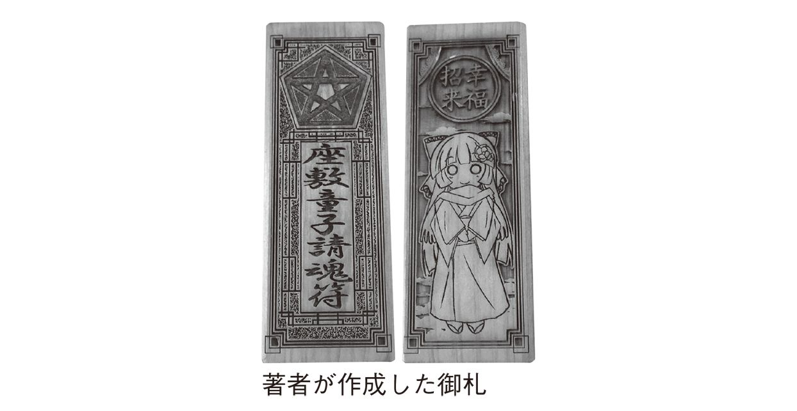
【座敷わらしの波動を写す】
それが完成し準備が整ったなら、それを持って座敷わらしの出る宿に宿泊するのだ。
部屋で水晶玉、あるいは御札のアルミホイルの封印を解き、両手を合わせ合 掌 印 を組み、そして以下の祭文を唱 るのである。
「我 この地におわす座敷わらしの御 霊 に申す」
まず、一度唱える。
「その幸なる御霊
我が前にありし水晶玉（御札）に降りまして我 霊 魂 魄 を満たし
幸福将来の道程を示し定めの道切り開く良き導き手となれ」
これを口に出し、あるいは心の中で自分にしっかりと聞かせるように、三分から五分の間、繰り返して唱えよう。
「我が言 霊 ここに結びて契 りと為 す、急 々 如 律 令 」
最後にこの言葉でしめる。なお、「急々如律令」とは中国漢代の公文書の末尾に、急々に律令のごとくに行え、の意で書き添えられたもので、それが日本で陰陽術などで締めの言葉として添えられるようになったものだ。つまりは「この術を速やかに成就させよ」という命令文である。他にも、「我が言の発、法の理に従いすみやかに執り行え」という言葉もあるが、今回はこちらを採用することとする。
そして一晩たった翌朝、水晶玉あるいは御札を和紙か布で包み、大事に持ち帰り家に安置しよう。
なお、もうアルミホイルで包む必要はない。座敷わらしの波動を受ける前に他の雑念波動を受け、それを吸収しないための処置なので、座敷わらしの力を一晩かけてたっぷりと吸収したらもはや用済みである。
なお、注意点として、水晶や御札は「電磁波を出す電化製品の上、近くに置かないこと」。
なぜならば、電化製品などの電磁波は波動を乱し、かき消すからである。宿で宿泊するとき、そして家に戻ってそれを安置するときにはよく注意すること。
座敷わらしを召喚する（作りだす）方法
さて、次に、座敷わらしの出る宿に行くことができない、という人たちのために、「座敷わらしを召喚する（作りだす）方法」を記そうと思う。
座敷わらしの来歴はいくつもある。祖先の霊、客人神、家に憑く神などさまざまだ。そして中には、密教僧や陰陽師、法術師、呪 禁 師 などが使ういわゆる識神、護法童子ではないか、という考えもある。
つまり前述の「心得童子」「如意童子」などと呼ばれる、術者の意のままに動き、幸福すら運んでくると呼ばれる童子姿の神、である。なるほど、確かにそうかもしれない。その作り方も手に入れることはできたのだが、残念ながらここでは割愛しようと思う。なぜなら、それらは長年の修行訓練により、いわゆる霊感あるいは魔力、神通力というものを身につけねばならないからである。
なかには多少道を踏み外してでもショートカットして手に入れたいと思う人間たちもいる。そういう者たちが考え出したのが、いわゆる「憑き物」と呼ばれる邪法呪術である。犬神、蟲 毒 、管 狐 などといった言葉を聞いたことはないだろうか。生き物を使い、その怨念を利用して望むもの、望む力を手にしようとする呪術だ。
そういったものの中に、「人形 神 」というものがある。土で人形を作り、人の歩く道の下に埋めておくという呪術であり、でき上がった人形神を使役するならば、望むものは何でも手に入るという。しかしそれを使えば最後、人形神は「次は何がほしい」と使用者に延々と言い続け、求め続ける。その声に術者は追いつめられ、やがて死後は地獄に落ち、永遠の苦痛が待っているという。
土に埋め、人の足で踏まれる。
かつて飢饉などで口減らしのために仕方なく殺された赤子は、家の床下、あるいは人に踏まれる場所に埋められたという。関連性が見えてこないだろうか。
そう、世の中にはとてもひどい話ではあるが、「赤子を殺して埋め、呪術をかけて縛り、家のために使役する」という邪法まであるというのだ。無論、そうやって作られた座敷わらしによって一時の物理的な幸福がもたらされても、すぐにそれ以上の過酷な破滅が待っていたことは記す必要もないだろう、当たり前のことである。
もちろん、ここでそのような邪法を行え、というのではない。当たり前だ。だがこの手の術の、白や黒、善や悪というのは使う者の心得次第である。逆に言うと、吐き気をもよおす邪悪な術とて、正道な良きものとして扱うこともできるのだ。
座敷わらしがいた、いる、という人たちの中に伝わる話で、興味深いものがある。
家を新築する際に、座敷わらしをかたどった木彫りの人形を作り、家の床下に埋めておくと、その家には座敷わらしが出る、というのである。
生 け贄 の代わりに木の人形、あるいは食物で作った人形（中国では饅頭の起源となったそうである）を見立ての代替とする方法は古より存在するが、つまりはそういうことなのであろう。
もうおわかりいただけるだろう。つまりは、その方法──座敷わらしの人形を作り、埋めるという方法を行えばよいのだ。これだとやはり誰にも迷惑などかからない。
これから家を建てようと思う方がいれば、まさに絶好の機会だ。人形を用意してこっそりと床下に埋めればよい。
家がすでに建っている人、あるいはアパートやマンション住まいなどの人も方法はある。要は「見立て呪術」なのだ。赤子の遺体を人形に置き換えるのと同じように、家の床下に埋めるということを別の方法に置き換えればいいのである。
そうすることで、座敷わらしを呼び出す、あるいは作りだすことが可能なのである。
人形を土に埋める
用意するものは人形である。これは人形屋で自分がいいと思ったものを購入するもよし、木を自分で彫って作るもよし、神具として売っているヒトガタなどを購入するもよし。ただし、木や紙、布などを使った、自然に還るもの......自然を汚さないものがよい。プラスチックや金属などは避けたほうがよいだろう。
その人形には水晶玉を持たせる。あるいは銅線を丸めたもの、銅板を星形に切り取ったものを持たせ、そして布にくるむ。
床下に埋めることができる人は、その布にくるんだ（あるいは木箱に入れて）人形を埋める。それらができない人は、庭に穴を掘って埋めよう。庭もまた、家であるのだから。
それもできないマンションやアパート住まいの方はどうすればいいのだろうか。
そういう人は、園芸店などでプランターを購入し、そこに人形を入れ、そして土で埋めるのだ。なんならばそこに植物の種を植え、育ててもかまわない。
それをベランダや室内のどこかに安置しておけばよい。土がいやだという人は砂利でもかまわない。自分の創意工夫で行えばよい。すべては見立てなのだから。
さて、どのようなやり方であれ、人形を埋めたならば、前述のように印をくみ、祭文を唱えよう。毎日欠かさずに、である。繰り返すことで座敷わらしの力、波動を呼び込むことができるのである。
ただし、今回は少し祭文が異なるので注意されたし。
「我 呼ばれ来たる座敷わらしの御霊に申す」
「その幸なる御霊
我が家に降りまして我霊魂魄を満たし
幸福将来の道程を示し定めの道切り開く良き導き手となれ」
「我が言霊ここに結びて契りと為す、急々如律令」
なお、視覚的に「座敷わらしがいる証 、象徴」がほしいならば、適当な、自分がこれだと思う日本人形を購入するか作り、水晶や護符のそばに置く、あるいは持たせる、埋めた人形の上に置く、などをしてもよいだろう。
ただしその場合、その人形と水晶や護符、人形を埋めた土台からなるべく離さずにおくことである。
座敷わらしを迎えた後で
音叉の振動が消えるように、また磁石の磁力が弱まるように、座敷わらしの力もやがて弱まっていく。
このため、「幸せの波動」である座敷わらしも、手に入れた場所で定期的にエネルギーをチャージする必要がある。座敷わらし祈願祭のように。
その方法とは、おわかりであろうが、また座敷わらしの出る宿や場所へと赴くことだ。そしてそれは、必ずしも「前と同じ場所」でないといけない、というわけではない。いろいろな場所を回ってみるのもいいだろう。
座敷わらしが幸せの波動であるならば、あなたと相性がいい所もあれば、あまりよくない場所もあるだろう。相性のいい所を探して全国を渡り歩くのもいい。
そうやって、儀式を繰り返し、座敷わらしの力をチャージするのだ。
なお、旅先から分けてもらうのではなく自宅で呼び出す方式を取られた方は、わざわざ旅をする必要はない。原理として当たり前である。
座敷わらしの力を維持するお掃除
しかしチャージしたとはいえ、やはり力は少しずつ減っていく。ならばそれを少しでも強いまま、長く持たせる方法はないだろうか？
当然、あるものである。
座敷わらしの力の維持。それは、外から家に入ってくる悪 しき霊、念、波動から座敷わらしを守ることだ。
座敷わらしが守ってくれるのではないか、と思うかもしれないが、座敷わらしだけに任せるよりも自分もそれを行ったほうが、より強い守りになることは明白である。
では、その方法とはどうすればよいのか。
いささか拍子抜けに思われるかもしないが、要は簡単なことである。掃除をこまめにして、綺麗にしておくことだ。
座敷わらしは幸せの波動であり、心の問題だ、と言った。心は見えない。だが、それを映し出す鏡は存在する。それはその人の在り方であり、部屋や持ち物などだ。
部屋を綺麗にするということは、つまりそういうことなのだ。そうやって清潔にしていれば、心も体も元気でいられる。ならば悪い波動など、よってこないものなのだ。
後は、座敷わらしに御供え物をするのもいいだろう。伝説によれば、座敷わらしは甘い物が好物だという。小豆類を好むというので、遠野名物のひとつ、甘く味付けをした赤飯の「おふかし」のようなものや、餡 子 のお菓子を供えるといいかもしれない。
人形や水晶の手入れも必要だ。定期的に埃を拭くのは大事である。
そうやって、「綺麗に大切に」を心がけていけばいい。そうやって大切にしていけばいくほど、座敷わらしの力は維持できるだろう。
あとがき
座敷わらしについて調べ始め、旅を始めてからどれくらいたつだろうか。その間、さまざまな体験をした。こうして、一冊の本にできるぐらいに。こうやってその詳細をお届けできたということは、決して無駄ではなかったのだろう。
私が今回、この本を書こうと思ったのは、ひとえに皆様に幸せになってほしいからである。座敷わらしに代わり、皆に届けたいと思ったのだ。
私の幸せを皆様に届けたところで、それで私の幸せが減ることなどない。むしろそのことで皆が喜んでくれるという充足感が私に幸せとなって戻ってくる、幸せの倍々ゲームなのだ！
なんだよ、かっこつけて、偽善っぽいこと言ってんじゃねーよ、と思う方もおられるかもしれない。しかし事実としてそうなのである。
幸せにはふたつある。物の幸せと、心の幸せだ。
物の幸せはいずれ尽きる。お金は使えばなくなるし、食べ物は食べれば胃の中に消える。服は着続ければやがてぼろ布になる。嗚 呼 、諸 行 無 常 、世の中のなんと儚 いことか。
しかし心の幸せは、本人がそう思い、感じ続けることで永遠に尽きることはない、無限に湧き続ける泉のようなものだ。
先に挙げた物質とて、考え方をひとつ変えればいい。使ったお金は、それで買った新しい何かをもたらしてくれる。食べ物は胃の中に消えるが、美味しさという満足感を与えてくれ、空腹を満たしてくれる。着古した服は新しい服を買う契機をくれて、そして古着屋に売ることができたなら、それはまたお金となる。世の中はこうやって見ると喜びと出会いに満ちた幸せなものだ。
そう、すべては己の心ひとつなのだ。
しかし、一言でそう言っても、やはりなかなか難しいものである。
だが、座敷わらしは、きっとそのことを体験させてくれる、気づかせてくれる、そういうものだと思う。私もそうだった。だからこそ、皆様には幸せになってほしいのだ。本当の心の幸せを見つける、その手助けになれば幸いである。
そう思いこの本の企画を用意したところ、ありがたいことにすぐに出版のお話をいただけ、とんとん拍子に話が進み、そのことに私はすごく驚いた。関係者各位の皆様のお力添えもあり、出版させていただけることになったのだが、この時期にこの本を出させていただくというタイミングに、やはり見えない何かの流れ、力の後押しを感じずにはいられない。
やはり、座敷わらしのおかげ、なのであろう。
彼らもきっと、伝えたいことがあるのだろう。
少しでもその代弁、力となれたのなら私も幸いである。
この本を読んで、幸せとは何かを再確認し、座敷わらしを迎え入れたとき、あなたはきっと幸せを手に入れることができるだろう。どんな小さなことでも、それを幸せと感じられるならば、それはかけがえのない宝物である。
最後に、ご協力いただいた座敷わらし同好会の皆様と、同会代表の内山様、法術の兄弟子である羽々桐氏、創作仲間の皆様、そして全国にいる座敷わらしの皆様に、深く謝辞を述べさせていただきます。
二〇一六年四月
十凪高志
解 説
羽々桐鷹也
座敷わらしは、私の家にもいる。私のところのも十凪氏と同じく、代々家にいたものではなく、奇 しくも遠野は早池峯神社から来たものである。
私も何度か遠野、そして座敷わらし祈願祭に訪れたことがあるが、あそこはいいものである。民話の里、というようにそこには不思議がまだ生きている気がする。観光地としては開発されすぎてもいない、自然や伝統が生き残る地。しかし同時に闇もまた深い。表向きに観光名所として開設されている場所が、実は後から作られたものであり、本当の○○はもっと別のところにある、なぜなら××だからだ......など、一般に知られていないことも多く隠されている。なんとも不思議で、魅力のある場所である。光と闇、現 と幻 がいまだに絶妙なバランスで共存している土地なのだ。
そういう意味では、座敷わらしもそうだ。幸せと不幸という二律背反を孕 んでいる。歴史を紐 解 くと、そこには東北の過酷な暮らしが産んだ「闇」がある。
そう、座敷わらしというものは、調べれば調べるほど奥深い。特に、時代を経て移り変わるそのありようがとても興味深い。このような幻想の存在は、人の歴史と不可分である。そして座敷わらしは、今や「見たら家が滅びる、不幸になる前兆」という部分を封じられ、幸せの象徴となっている。座敷わらし祈願祭などは、「勝手に去らないようにむしろこちらから里帰りさせる」という手法をとることで、その不幸を回避するメカニズムを用意した......と考えるのは考えすぎだろうか。だが、いくら隠そうとしても、その闇は決して消えることはないだろう。それでいいのだ。都合の良い部分だけの存在になったとき、座敷わらしは消え去るだろう。
人は幸せを求める生き物である。より良い人生、より良い未来を求める。それは悪いことではない。その幸せのために自助努力する姿は素晴らしい。だが、それが他力本願になったとき、そしてそれが度を越したときは、とても醜いものである。そうなってしまったとき、人は迷信や妄想に走り、ありもしない「自分だけを救ってくれる神仏」に依存する。そんなものは、どこを探してもいないというのに。
いるのはただ、頑張れば頑張った分だけ報いを与えてくれる、宇宙天地の法則だけだ。
この本の中で、座敷わらしとは幸せの波動である、という文章があった。それはまさに正 鵠 を射ているだろう。
幸せとは、心の形である。神仏妖怪悪鬼羅 刹 もまた、人の心の形だ。幸せになれるかどうかは、人しだい、自分しだいである。本当に、健全で真っ当な幸せを望み、そのために努力するならば、自分だけでなく他者の幸せも望み、他者の幸せを喜べるならば、そこには幸せが待っている。
座敷わらしとは、そんな「幸福」を見える形にした、道しるべなのだ。
座敷わらしがいる、いてくれる、ならば幸せにしてくれるように頑張ろう。そうやって形を見つけ、目標、指針とすることで、漠然としたつかみどころのないそれは、確かな形となり、未来に現われるだろう。
そしてこの本は、そんなあなたの助けとなってくれるだろう。座敷わらしに出会い、小さな幸せを重ねていった人達の生きた体験談が、ここにはいくつも載っている。そしてそれは、すべてが「自ら行動した結果」だ。行動なき結果は無い、しかし言い換えれば、動けば絶対に、何らかの結果は出るということだ。
この本を手に取った......そう、この時点であなたは行動を起こしている。ならば次の一歩を踏み出すのもたやすいだろう。そうして一歩一歩と歩いて行けば、必ずや望む幸せへとたどり着けるはずである。
今回、座敷わらしを呼び出す、お迎えするための理論、術式は私が十凪氏に伝えたものである。識神として座敷わらしを作る方法を伝授してもよかったのだが、それを一から記すととても紙面が足りず、そして読者諸兄に多大かつ地味で地道、長い修行を強いることになってしまうので断念した。
だが、今回この本に記された術式も、ちゃんとした因果律に基づいたものである。
座敷わらし......いわゆる妖怪、神と呼ばれる存在は、この世には実在しない。だがそれでも確かに存在する。それは、すべては心の存在である。心の世界に、それぞれの性質を持つ波動として、確かに存在するのだ。
ゆえに、あなたが本当に心から求めるならば、必ずあなたの元に現われるだろう。
（はばきりたかや・呪禁法師）
座敷わらし出没地点紹介
＊本書に掲載の連絡先は、すべて２０１６年４月現在のものです。あらかじめご了承ください。
【青森県】
「とびない旅館」
一言でいうなら、「ピュアでサービス精神旺盛な五十代少年が飛び出してマシンガントークで迎えてくれるアミューズメントあやしい旅館」である。
さまざまな古いおもちゃが所狭しと独特のセンスで飾りたてられたその有様は、あやしいを通り越して郷愁とロマンを感じさせた上で一周ほどして戻ってきて、やはり怪しい。人を選ぶ旅館であることは確かである。
ここで座敷わらしが出るようになったのは緑風荘の火事の後であり、宿泊客によれば、「座敷わらしのような子供の声が聞こえた」「緑風荘のときと同じ気配がした」......などらしい。
この宿の常連の方の話では、緑風荘にはぬいぐるみや人形などが宿泊客によって奉納されていたが、緑風荘の座敷わらしは男の子なので、それが気に入らなかったのではないか。この「とびない旅館」には少年心をくすぐるようなおもちゃがたくさんあるので、それ目当てに遊びに来たのではないか、とのことである。
ここのご主人は、「緑風荘の座敷わらしを奪った形になったのなら申し訳ない」と気にしていたが、そもそも緑風荘の座敷わらし、亀麿様は以前から全国を遊び回っていたという、好奇心と行動力にあふれた座敷わらしなので、ご主人が心配するようなことはないであろう。亀麿様にとって、お気に入りの遊び場がひとつ増えた、きっとそういうことなのだ。
きっと今日もこの「とびない旅館」に遊びに来ては、あやしくも素敵なおもちゃで遊んでいるに違いない。
〒０３５－００３４ 青森県むつ市田名部町８－６
ＴＥＬ ０１７５－22 －４２６１
【岩手県】
「金田一温泉旅館組合」
座敷わらしの出る宿がいくつもある、金田一温泉郷の温泉組合である。
金田一温泉は寛永三年（１６２０） に発見されたといわれる歴史ある温泉で、かつては南部藩の湯治場だったことから「侍の湯」と呼ばれ湯治客で賑わったと言われている。
また、金田一の地名の由来は、アイヌ語で山の方にある川（または沢） の所とする説や、南部氏の祖光 行 の第四子の四戸氏からでた金田一氏にちなむという説、一〇〇〇年以上も前に蝦夷の酋長アテルイが湯浴みしたのが始まりなどの説がある。いずれにしても、古く歴史のある場所である。
「緑風荘」の「槐の間」は座敷わらしの出る場所として有名であるが、他にも「仙養舘」の「暁の間」に現れる女の子の座敷わらし目撃情報や、「おぼない」での目撃談など後を絶たないという。
また、金田一温泉郷が座敷わらし伝説で全国に知れ渡るようになったのは、芥川賞作家の三浦哲郎氏が金田一温泉郷を舞台にして書いた小説が、劇団四季のミュージカル「ユタと不思議な仲間たち」で全国公演されたことがきっかけともいわれている。
『ユタと不思議な仲間たち』に登場したと思われる地名が、金田一温泉郷には隠れている。訪れたときには、探してみるのも楽しいかもしれない。
（二戸市観光協会）
「緑風荘」
座敷わらしの出る宿、といえばここである。おそらく日本で最も有名な座敷わらしの出る宿である。
かつて、座敷わらし「亀麿様」が出ると言われた「槐の間」は数年待ちの大人気であり、そこに泊まった者は幸運が舞い込むと言われていた。おそらく、「座敷わらしを見たら、会えたら幸運が舞い込む」と言われるようになったのも、この亀麿様が元祖ではないだろうか。
南北朝時代の祖先の魂が守り神となったものである、という言い伝えが正しいなら、七百年もの間、家と子孫を守りつづけていることになる、他にも類を見ない古参の座敷わらしだろう。
二〇〇九年に火事となったが、全焼したのは旅館部分だけであり、亀麿様を祀る神社には傷一つなく、今も亀麿様はそこを拠点にいろんな所に遊びに行っているのだという。
座敷わらしがいなくなった、だから燃えたのだ。もういない、立ち去った。そう揶 揄 する声もあるが、七百年もの間家を守り続けてきた、幼くも立派な男児の魂が簡単に子孫を見捨て立ち去るとは思えない。
現に、緑風荘は今年再建を果たす。座敷わらしに見捨てられた家ならば復興はあり得ないのだ。禍福は糾える縄の如し。これからも亀麿様は、幸せを子孫と客人たちに振りまいてくれることだろう。
「侍の湯おぼない」
新鮮な海の幸や体に優しい野菜・雑穀を使った郷土料理が楽しめるお宿。
旧館は昭和初期の建築で、今では貴重な職人技がここに残っている。レトロ感に溢 れるものの古臭さは感じられないと評判である。
温泉は金田一温泉に数ある源泉の一つ、北国の南部藩で湯治のために利用されていたところから「侍の湯」とも呼ばれている、開湯三百八十年の貴重な「玉の湯」を使っている。
近くを流れる馬 淵 川 の獲れたての鮎が非常に魅力的で、冬期間中は特に炉端を囲んでの食事はいいものである。
座敷わらしの目撃談、体験談は廊下に張り出されており、宿泊客たちの感動と感謝の生の声が見られる。
「旅館 仙養舘」
先代が「裸一貫」の心意気ではじめた小さな宿。
「のんびり、ゆったり湯につかり、心も体も養生すれば、これ人々皆仙人の心地なり」との願いから宿の名が付けられた。
春は家族で採りに行く山菜、夏は板前が釣る鮎、秋は穫れたてが揃うキノコ、冬はそば粉で作るつっつけ、そして鴨ダシたっぷりのひっつみなど、季節の料理がおすすめである。
ここに出る座敷わらしは、「暁の間」に現れるという。
〒０２８－５７１１ 岩手県二戸市金田一大沼24
ＴＥＬ ０１９５－27 －２２３１
「民宿わらべ」
早池峯神社のすぐ近くにあるこの民宿は、登山客や釣り客に親しまれている民宿である。
この民宿では昭和六十三年（１９８８） の開業当時から座敷わらしにまつわる話があり、見た、感じたという宿泊客が次々と現れた。男の子や女の子の姿を見た、寝ているときに触られた、踏まれた、しゃぶられたなどさまざまな体験談があるという。
座敷わらしの部屋がひとつあり、人形やおもちゃが飾られたそこに最もよく現れるというが、それ以外の場所でも現れることは多い。
すぐそばに座敷わらしにまつわる早池峯神社があるのだ、その座敷わらしがここにも遊びに来るという話もおかしなことではない。それに何しろ、民宿わらべを開業した年と座敷わらし祈願祭が始まった年は奇しくも同じなのだ。これで関連性を見いださないほうがおかしかろう。
「遠野早池峰ふるさと学校」
遠野早池峰ふるさと学校は、平成十九年三月に閉校となった遠野市立大出小中学校を活用し、遠野市における都市・農村交流の拠点施設として、平成二十二年六月にオープンしたものである（入館料は無料）。
大出地区の山の恵みが満載の産直売り場や、手打ちそば・うどんをメインに地元野菜で彩った定食を出す食堂などがある。また、そば打ち体験や木工細工やわら細工などを作ることもできる。そんな地域おこしのための記念館だが、ここにも座敷わらしが出るとされる。宿泊施設ではないものの、この学校を訪れた人たちの多くが、座敷わらしの気配を懐かしさと共に感じるという。
いくつもある教室のひとつは座敷わらしの部屋となっており、早池峰の座敷わらしについての説明やおもちゃなどが所せましと展示されており、黒板にはここを訪れた人たちの心温まる落書きがたくさん書かれている。
〒０２８－０６６１ 遠野市附馬牛町上附馬牛19 －80 －７
ＴＥＬ ０１９８－64 －２０３３
開館時間 午前９時～午後５時
休館日 毎週月曜日及び年末年始
（ただしイベント開催時は例外あり）
「民宿とおの」
遠野駅の近くにある昭和四十八年開業の民宿。囲炉裏とどぶろくが名物の心温まる宿である。観光にもビジネスにもちょうどいい、拠点として最適であろう。
また、「とおの屋 要」というレストランも営んでいる。特に自家製の「どぶろく」は逸品。
座敷わらし祈願祭の発端となった新潟の事業家が宿泊したのもこの宿だという。
ちなみに、再度泊まりに来たその事業家がその折に連れてきた祈禱師が、この宿には男児と女児の座敷わらしがいるといい、「近行」「ゆかり」という名をつけた。彼らはこの民宿の守り神として、大切にされているという。
〒０２８－０５２１ 岩手県遠野市材木町２－17
ＴＥＬ ０１９８－62 －４３９５
web http://www.minshuku-tono.com/
mail info@minshuku-tono.com
「民宿御 伽 屋 」
遠野駅のすぐ近くにある民宿である。
ご主人の佐々木剛一氏は、遠野の不思議と名所の紹介と共に、遠野世界の探求を行うブログサイト「不思議空間『遠野』──『遠野物語』をｗｅｂせよ！」（http://dostoev.exblog.jp/ ） を運営している。その深く膨大な知識と考察は一見の価値あり。
そんなご主人が経営する民宿、表面的な観光施設を巡るお祭り観光ではない、ガイドブックには載っていない、深く不思議な遠野の情報を聞くことができるので、遠野に伝わる民話の不思議を深く知りたい方は是非とも訪れることをおすすめする。また、時期や都合などが合えば、無料で遠野ガイドを行ってくれる。ただし御伽屋主人が案内する遠野、ただで終わるはずがない。遠野の不思議で素敵な闇の世界を堪能できることだろう。
宿泊客たちからさまざまな体験が寄せられており、ご主人いわく真偽は不明なものの、「座敷わらしではないだろうか」という声は高い。
なお、猫を放し飼いにしているので、猫アレルギーの方は十分に注意していただきたい。
「遠野ふるさと村」
遠野ふるさと村は、遠野の昔ながらの山里を再現した田舎暮らし体験施設である。村内は、江戸中期から明治中期にかけて造られた茅 葺 き屋根の曲り家をそのままの形で移築しており、小川が流れ水車がまわり、田畑があり、炭焼き小屋がありと、遠野の昔ながらの集落を再現している。
最近は、映画やテレビの撮影にも多く利用されているという。
ここでは毎年、定期的に「座敷わらし仮装コンテスト」を開催している。子供たちや、時には悪ノリした大人が座敷わらしの仮想をしてふるさと村を訪れる。
もしかしたら、その中には本物の座敷わらしも混ざっているかもしれない......。
〒０２８－０６６１ 岩手県遠野市附馬牛町上附馬牛５－89 －１
ＴＥＬ ０１９８－64 －２３００
web http://www.tono-furusato.jp/
mail mura@tonotv.com
「苫 屋 」
築百五十年以上の南部曲り家を改築した古民家民宿＆カフェ、それが民宿苫屋である。
他の宿と大きく違う点は、なんとこの苫屋には電話がないのである。当然、インターネット環境もない。宿泊の予約などは、手紙で行うしかないという、なんとも古めかしい宿である。
そんな連絡に不便な所にもかかわらず、国内外に熱狂的なリピーターを持つ不思議な隠れ家である。
ここのご主人も、かつては旅人だったそうだ。沖縄から北海道まで旅をしているときに立ち寄った村の温かさに心惹かれ、ここにとどまり宿を開いたという。
ご主人夫婦曰く、手紙で予約していただくことによって、文字や文面から年齢や性別、どういう人なのかを想像しながら、たとえば若者なら夕飯は肉や魚を多めにしたり、高齢の方であれば野菜を多めにしたりするなどと心を込めたおもてなしができるらしい。
そんな心づくしのこの宿にも、毎回必ずというわけではないが、座敷わらしは出るという。
電話も通じない古き良き古民家。タイムスリップしたようなその雰囲気の中、きっと座敷わらしの気配を感じられることだろう。
【秋田県】
「からまつ山荘＆温泉 東兵衛屋敷」
宿泊と日帰り入浴ができる、緑豊かな山中にある一軒宿。源泉掛け流しの「子宝と安産の湯」として、地元民にも愛されている。
併設している古民家「和食庵 東兵衛屋敷」はコミュニティーの場としても開放しているのだが、そここそが座敷わらしの出る場所だという。
どっしりとした大黒柱や梁 、煙が屋根へ抜ける茅葺き屋根の東兵衛屋敷。
窓から近くを流れる淀川を眺めながらのんびりと休めば、座敷わらしの足音が聞こえてくるだろう。
〒０１９－２４０１ 秋田県大仙市協和船岡東兵衛屋敷91
ＴＥＬ ０１８－８９３－２２１１
【山形県】
「タガマヤ村」
古民家を丸々ひとつ貸し出すという珍しい宿泊施設。豪農一家が室町時代から住み続けた歴史ある所だといわれており、現在の建物は明治に造られたものだが、座敷わらしははるか昔から住み着いていたといわれている。
二人の女の子と一人の男の子の座敷わらしが住み着いているといわれており、ほかにもさまざまな妖怪が出ると噂されている。
母屋や蔵、りんご畑などを含めて全部で一五〇〇坪の広大な敷地を借り、子供心に戻って全力で遊び倒すにはもってこいの場所である。
しかし、二〇一五年十一月にテレビ番組で紹介されて、一気に知名度が増し人気が出て、一年先まで宿泊の予約が埋まってしまったという。なお、昼参拝のコースもある。
【福島県】
「割烹旅館 松林閣」
奥会津の山中で育まれた天然銘木をふんだんに使い、完成までに三期八年を費やした威風堂々たる作りの割烹旅館である。
長い歴史を経た木のぬくもりを感じながら、やすらぎのひと時を過ごせることうけあいで、食事も「こづゆ」をはじめ、手打ち蕎麦、会津の郷土料理を中心に堪能できる。中には「山椒魚の唐揚げ」といった珍味もある。
「吾妻五葉松の間」は座敷わらしが出るという話があり、遠くは大阪からここに泊まりにくる客もいるとのことである。
〒９６９－６５０７ 福島県河沼郡会津坂下町大上森北１１００－61
ＴＥＬ ０２４２－83 －０５００
web http://syorinkaku.travel.coocan.jp/
mail syorinkaku@joy.ocn.ne.jp
【群馬県】
「猿ヶ京温泉 生寿苑」
群馬県の水 上 温泉郷にある、広大な土地に建てられた小さな温泉宿。巨石を積み上げた石垣に白壁と天然木で設えた数寄屋造りの佇 まい、建物そのものが癒しの雰囲気に包まれている。
総ヒバ造りの貸し切り風呂や、岩と木漏れ日が情緒あふれる露天風呂で猿ヶ京の化粧水のような湯を楽しめ、群馬の山の幸をふんだんに使った料理も絶品である。
また宿泊客にはもれなく小さな絵馬のプレゼントがあり、敷地内にひっそりとたたずむ、座敷わらしを祀る八幡様の前に願いごとを書いて結びつけるとよい。きっと座敷わらしが願いを叶えてくれる......かもしれない。
〒３７９－１４０３ 群馬県利根郡みなかみ町猿ヶ京温泉１０４８
ＴＥＬ ０２７８－66 －１１７５
mail office@syoujyuen.com
【長野県】
「みはらしファーム」
信州長野にある、田舎暮らし体験施設。そばやパンなどの手作り体験、竹細工や機 織 りなどの手仕事体験、いちご狩りなどの収穫体験を堪能でき、レストラン「トマトの木」ではさまざまな料理を楽しめる。また、日帰り温泉施設もあり、全力で信州の楽しさを体験できるだろう。
ダチョウも飼育されており、その妙な可愛さと間近で見るインパクトは一見の価値があるだろう。
ふれあい広場には座敷わらしの像があり子供たちを見守っている。特別な意味はないとのことだが、子供たちが遊んでいると、いつのまにか一人増えているかもしれない......。
〒３９９－４５０１ 長野県伊那市西箕輪３４４７－２
ＴＥＬ ０２６５－74 －１８０７
web http://miharashi-farm.com/
mail miharasi@dia.janis.or.jp
【静岡県】
「ちゃ茶ｃｈａ （チャチャチャ） 」
沼津にある、土蔵を改装して作ったカフェ。
店内は一階がテーブル席、二階には天井の低い、屋根裏部屋のようなお座敷席となっている。まるで隠れ家のような雰囲気があり、楽しくくつろげる不思議な空間である。
メニューは国語のノートや日記帳などに手書きで書かれていて、昭和なレトロ感を醸し出している。
お客さんの間で、「座敷わらしが出る」という話が囁かれるようになるのも無理はない、不思議で素敵なカフェである。
〒４１０－０３０６ 静岡県沼津市大塚70 －１
ＴＥＬ ０５５－９６６－０８７２
【島根県】
「有福温泉 旅館樋口」
島根県有福温泉、山あいの鄙 びた温泉地に突如現れるスタイリッシュな隠れ宿。全一九室中一五室が客室に露天風呂があるという豪華仕様、お籠りするのに最適な趣きのある宿である。
名物はノドグロやズワイガニなど日本海の海の幸。
出雲大社を中心とした神話の国・島根のパワースポットめぐりの旅の拠点としておすすめである。
そんな旅館樋口にも座敷わらしが出るという噂。「恵比寿の部屋」を中心に座敷わらしが出るらしく、そこに泊まった恋人たちに縁結びのご利益があるらしい。女性客たちの間でそんな座敷わらしの存在がまことしやかにささやかれているという。
温かみのある竹灯籠、珪藻土壁、木の柱など、自然を感じさせる館内に耳を澄ませると、座敷わらしの息遣いが聞こえてくることだろう。
参考文献
佐々木喜善『遠野のザシキワラシとオシラサマ』中央公論新社
柳田國男『遠野物語』青空文庫
遠野市立博物館『遠野市立博物館第55 回特別展 ザシキワラシ』遠野市立博物館
川島秀一『ザシキワラシの見えるとき：東北の神霊と語り』三弥井書店
三浦哲郎『ユタとふしぎな仲間たち』新潮文庫
村上健司編著・水木しげる絵『日本妖怪大事典』角川書店
荻原浩『愛しの座敷わらし』朝日新聞出版
大澤義孝『幽体離脱入門：霊トレで離脱は誰でもできる！』アールズ出版
ディラン・トゥッチロ他『幸せになる明晰夢の見方』日暮雅通、野下詳子訳、イースト・プレス
山口敏太郎『都市伝説：あなたに忍びよる恐怖』河出書房新社
協 力
羽々桐鷹也と形而上学研究会人智学舎
座敷わらし同好会
（web http://zasikiwarasidoukoukai.web.fc2.com/ mail zasikiwarasidoukoukai@yahoo.co.jp）
遠野市、遠野市観光協会（ＴＥＬ ０１９８－62 －１３３３ http://www.tonojikan.jp/ ）
とびない旅館、緑風荘、侍の湯おぼない、旅館 仙養舘、遠野早池峰ふるさと学校、民宿わらべ、民宿とおの、民宿御伽屋、遠野ふるさと村、割烹旅館 松林閣、からまつ山荘＆温泉 東兵衛屋敷、タガマヤ村、猿ヶ京温泉 生寿苑、みはらしファーム、ちゃ茶ｃｈａ、旅館 樋口、金田一温泉旅館組合
企画協力 おかのきんや（企画のたまご屋さん）
十凪高志 Takashi Tonagi
漫画家。小さいころより精神世界、オカルト、伝奇、怪奇に興味を持ち、創作のかたわら、その探索に執心する。
取材旅行にて「座敷わらし」を手に入れることに成功し、その年に仕事が来るようになり本格的に漫画家としての活動を開始する。作品は『マンガでわかる発電・送配電』（イラストを担当）、ＷＥＢコミック『悪の花道』（ぽにマガ）ほか。
この電子書籍は単行本『あなたにもできるハッピー・スピリチュアル 「座敷わらし」をもらってきたら、幸せが舞い込んだ！』（２０１６年４月刊）をもとに制作されました。
あなたにもできるハッピー・スピリチュアル
「座敷わらし」をもらってきたら、幸せが舞い込んだ！
２０１６年４月30 日 電子書籍版発行
著 者 十凪高志
発行所 株式会社 徳間書店
〒１０５－８０５５
東京都港区芝大門２－２－１
ＴＥＬ ０３－５４０３－４３４４（編集）
０３－５４０３－４９８６（デジタル・パブリッシング部）
©TONAGI Takashi 2016
●著作権に関して
本作品の内容の全部又は一部の無断複製・複写（コピー）は「個人的に又は家庭内その他これに準ずる限られた範囲内において」のみ法律で認められており、この範囲を超えるコピーは著作権者の許諾が必要です。
本作品の内容を有線・無線を問わず無断で他に配信、送信、転送したりホームページ上に転載する行為も禁止されており、同じく著作権者の許諾が必要です。
また、本作品の内容を無断で改変、変更、改ざん等を行なうこともやはり違法となり、これも著作権者の許諾が必要となりますので、十分ご注意ください。